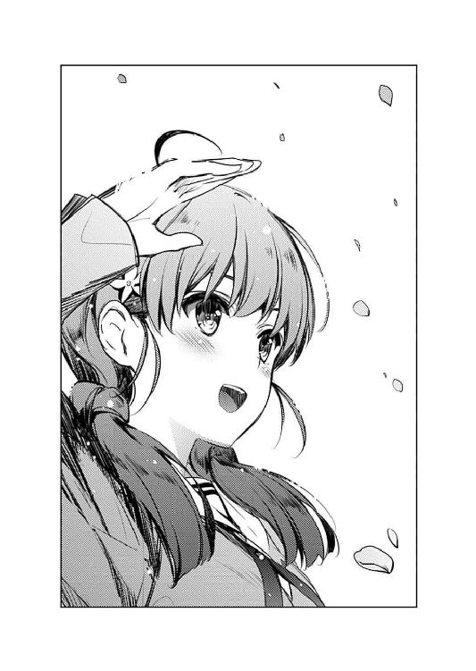

| 冴えない彼女の育てかた7 | |
| 丸戸 史明 | |
| (2014) | |
冴えない彼女の育てかた７
丸戸史明

富士見ファンタジア文庫
本作品の全部または一部を無断で複製、転載、配信、送信したり、ホームページ上に転載することを禁止します。また、本作品の内容を無断で改変、改ざん等を行うことも禁止します。
本作品購入時にご承諾いただいた規約により、有償・無償にかかわらず本作品を第三者に譲渡することはできません。
本作品を示すサムネイルなどのイメージ画像は、再ダウンロード時に予告なく変更される場合があります。
本作品は縦書きでレイアウトされています。
また、ご覧になるリーディングシステムにより、表示の差が認められることがあります。
口絵・本文イラスト 深崎暮人
プロローグ
放課後の視聴覚室に差し込む夕陽が......いやごめん、いつもの習慣で適当なこと言い出しちゃったので今のはノーカン。
出がけの玄関先に差し込む朝陽が、底冷えするような寒さを全然抑えきれていない二月上旬。
「......はよ」
「お、おう」
......なんだけど、そんな身も凍る空気に覆われてる我が家の門の前に、真っ白な息を吐きながらぽつんと佇む人の影。
「昨日より三分遅い。凍えるかと思った」
「いや、別に、先に行ってても」
「............っ」
「......すいませんした」
「わかればよし。じゃ、行こっか倫也」
コートからはみ出た、マフラーと金色の髪。
青い瞳と白い肌から滲み出る近寄りがたい美少女オーラ。
けれどまぁ、ありとあらゆるところがちょい小柄なせいで、それ以上の親しみと、ちょっとばかりの雑魚感を醸し出してしまっていたりして。
そんな彼女の名は、澤村・スペンサー・英梨々。
小学校一年の時に知り合い、その二年後に決裂して、そこから長い潜伏期間を経て高校入学とともに交流だけ再開し。
そして、まぁ......ほんの一月ちょっとくらい前に、めでたく幼友達へと復帰した、ご近所の同級生。
今までずっと、駅まで自転車で通っていたはずなのに、『冬の間は風が冷たい』とかもっともらしい理由をのたまい、最近では徒歩通学で、しかも道の途中にある俺の家の前で小休止してるから、結果として学校までずっと一緒に歩くことになっている。
まぁ、近所だし、仲直りしたり、別にいいんだけど。
でも、何しろ仲直りしたのが八年ぶりなせいで、中学すっ飛ばして高校の、しかももうすぐ三年になろうかというこの時期にもなって、家から一緒に通学することの違和感たるや......
いや、まぁ、別に嫌ってるわけじゃ全然ないんだから、別にいいんだけど。
本当に、何というか、別にいいんだけど......
※ ※ ※
「あ、それでさ、英梨々」
「ん？」
「パッケ絵の進捗の方、その......」
「......あ～」
坂を下り、国道沿いを歩き、電車に乗り。
二人で並んで吊革に摑まりつつ、一駅目を過ぎた頃。
俺は、ここ最近は毎日聞いているせいで、逆になかなか言い出せなかった問いかけを、とうとう口にした。
「一応、そろそろラフだけでも上がってないと、色々......」
「わかってる......うん、わかってはいるんだけど」
それは、近所に住む幼なじみだとか、金髪ツインテールのハーフだとか、それが学園でも評判の美少女だとか、そういう日常系とはちょっと違う方向の俺たちの関係の方の話で。
サークル、『blessing software』......
それは俺、安芸倫也が一○か月ほど前に創設した同人サークル。
『ぼくのかんがえたさいきょうのギャルゲー』を作るために、自分の知る限りにおいて最強の精鋭たちをかき集めた結果、何故か俺以外のメンバーが美少女で固められたという、色んな意味でのドリームチームだった。
そんな俺たち『blessing software』は、昨年末の冬コミに、この半年の集大成として、処女作（作品数的にも全ヒロインの設定的にも）である『cherry blessing』を制作、頒布した。
......いや、まぁ、その、成功裏に終わった的な表現には色々と問題があるけれど、その辺りはおいおい説明するとして。
それでも、イベント後のショップ卸しの本数を含めて数千本単位の売り上げを記録するほどには、大きな話題をさらった。
そんな中、英梨々は、サークルの中でもシナリオと並んで重要な役割である、キャラクターデザインと原画を担当し、俺たちのゲームの売り上げや評価においても重要な役割を担った。
何しろ、もともと同人界の人気イラストレーター柏木エリとして活動していたこの天才作家が、その物量もクオリティもさらに進化した姿を見せつけたのだから、話題にならない方がおかしい訳で。
「マスター前の一週間で一二枚描いたお前にしちゃ遅いな？」
「もうあんなの御免よ。あれで寿命が半分になった気がする」
「......いいか？ 俺の名前をノートに書くなよ？ 絶対だぞ」
まぁ、それはともかく、そんな成功で調子に乗った俺たちは、ショップから来た二次出荷の注文に対し、わざわざ新しいパッケージイラストの新装版で応えることを決め......そして、それ以来停滞している。
「ま、とにかく、もうちょっとだけ待って。今週末にでもちゃちゃっと上げちゃうから」
「......信じてるぞ？」
「うん、任せて！ 何しろ今のあたしは公私ともに充実してるし！」
「そうか......」
その〝私〟の方が何なのかは敢えて確かめずに、俺は英梨々に向けていた視線を車窓へと移す。
まぁ、いくらなんでも、その推測が間違っているとはさすがに思っていないから。
※ ※ ※
「おはよう、倫理君、澤村さん」
「詩羽先輩......？」
「............っ」
そして、俺たちが学園の最寄り駅の改札を抜けた瞬間。
駅の柱にもたれて読書をしていた、俺たちにとってはとっても見慣れた女性が、こちらを向いて軽い笑みを浮かべた。
「今日も寒いわね......あなたたちの半径五メートルより外は」
「......わざわざ邪魔するためだけに待ってたわけこの根暗女？」
「そ、そっちから声かけてくるなんて珍しいですね！」
「だって、もうすぐ倫理君ともお別れだもの」
「え......？」
「だからこうして、三年間一緒に通った道を、もう一度強く記憶に刻んでおきたいの......あなたと」
「詩羽先輩......」
「今まで一度たりとも倫也と一緒に登校したことなんかないくせに」
「あなただってつい最近までそうだったじゃない。その程度のことでいちいち突っかかってこないの大人げない」
「なっ!?」
「......もうすぐお別れなんだからそろそろ仲良くしてよ二人とも」
コートからはみ出た、マフラーと長い黒髪。
吸い込まれてしまいそうな、黒く澄んだ瞳。普段は白く、けれど寒さのため少し赤らんだ肌。
さらに、ありとあらゆるところが人並み以上に存在を誇示するせいで、もはや近寄りがたさここに極まれりといったオーラが全身から放出されてしまっていたりして。
そんな彼女の名は、霞ヶ丘詩羽。
俺が高校一年、彼女が二年の時にファンと作家として知り合い、その半年後に互いの方向性の違いで決裂し、そこからちょっとした冷却期間を経て、俺の二年進級とともに、今度はプロデューサーとクリエイターという形で再会し。
そう、つまり彼女は、俺たちのサークルでも原画と並んで重要な役割であるシナリオを担当し、俺たちのゲームの評価や売り上げにおいても重要な役割を担った。
何しろ、もともとラノベ界の新進気鋭小説家霞詩子として活動していたこの天才作家が、ノベルゲームという新たなフィールドにおいて、やはり卓越した技量を見せつけたのだから、評判にならない方がおかしい訳で。
「それで澤村さん、新パッケージのイラストはどんな感じ？ いくらなんでもそろそろ上がったわよね？」
そんな詩羽先輩は、今まで三年間、ずっと一人で読書しながら通学していたはずなのに、『もうすぐ卒業だし』とかもっともらしい（？）理由をのたまい、今日に限っては、俺の横で俺と同じ速度で歩き、結果として学園まで一緒に歩くことになりそうだった。
「っ......それをディレクターでもない単なるシナリオ担当に答える必要はないわね」
まぁ、サークル仲間だし、作家としても尊敬してるし大ファンだし、別にいいんだけど。
「あら心外。私たちは別に会社組織の一員同士という訳でもない、有志サークルの仲間同士でしょう？ なのにそんな縦割り行政みたいな区切り方は悲しいわ......トラブルは全員で共有し、成功は全員で喜び合う。それが同人活動の醍醐味というものではないかしら？」
でも、いつも周囲に人がいる時には人を寄せつけない雰囲気を醸し出し、〝俺たち以外には〟孤高を印象づけていた先輩が、これだけ衆人環視の中、こうして軽口を叩きあいながら並んで歩くことの違和感たるや......
「こっちがトラブってる時にだけそういう信じてもいない正論ふりかざすのやめなさいよっ！」
いや、まぁ、別に嫌ってるわけじゃ全然ないんだから、別にいいんだけど。
本当に、なんというか、別に......
「二人とも！ みんな見てる！ 俺たちガン見されちゃってるから！」
いいわけないだろ。
左にいるのは、豊ヶ崎二大美女が一人、美術部のエースにして学園一の人気を誇る、金髪ツインテールハーフ美少女。
右にいるのは、豊ヶ崎二大美女が一人、学園一の才媛にして学園一の畏敬を集める、黒髪ロング黒スト巨乳美女。
そんな二人の真ん中に位置するのが、一匹狼のアクティブキモオタにして、学園一ウザがられていると評判の眼鏡男子。
こんなふうに、美女二人に囲まれるオタクという構図は......
「倫也は黙ってて！ これはあたしと霞ヶ丘詩羽の問題なんだから」
「そうよ、倫理君が口を出すべきじゃないわ。だって、もしここで、あなたが隠していた本心をさらけ出し私を庇ってしまったら、哀れな負け犬こと澤村さんは二度と立ち直れないかもしれないもの......ふふっ、ふふふっ」
「んなわけあるかこらぁぁぁぁぁぁ～！」
「あああああ......もうっ」
しかもその美女二人が、普段周囲に見せる表情や言動とは全然違った、ある意味生き生きとした『サークル内での顔』をむき出しにして、俺を挟んで言い合いをしているその姿は......
そりゃもう、この後俺の身に起こるであろう色々な面倒事を想像させるに難くなく......
※ ※ ※
「おい倫也！ 今朝のアレは一体どういうことなんだよ!?」
「ほらこんなふうに！」
下駄箱で二人と別れ、その後さらにいくつかの鋭い視線に射抜かれつつも、やっとのことで教室の扉をくぐった瞬間......
今まで半分の巻にしか登場したことのないクラスメイトの上郷喜彦が、とても好意的......いや好奇的な態度で俺を出迎えた。
「お、お前っ！ 最近、澤村さんと一緒にいるってだけでも学校中で話題になってるってのに、今日はさらに霞ヶ丘先輩とまでっ！」
「喜彦、お前の言いたいことはよくわかる」
喜彦だけでなく、教室中の男子が耳をそばだてているのを意識しつつも、俺はつとめて冷静を装い、深刻な表情で答える。
「俺だって、喋れるものなら喋りたくない。だがな、人には絶対に守らなくてはならない仁義というものがあるんだ」
「お前本当は全然喋る気ないだろそうなんだろ」
まぁ、ここ数日でこういった詰問にはだいぶ慣れた。
何しろ、先週から、あろうことか学園のマドンナ（笑）と一緒に登校してくるってことで話題沸騰の安芸倫也君である。
今日みたいな詰問は、それこそ喜彦をはじめとして、もはや一○や二○のレベルじゃないくらいに受けたけれど、一度たりとも口を割ったりしなかった信義の男である。
まぁ、今までの経緯を洗いざらい話したら、あまりに長くなりすぎるのと、絶対信じてもらえないのと、二人の評判に致命的な傷をつけるのとで、とても話せるはずがないんだけれど。
それに、もう一つ......
「あ......」
「............」
得意げに自慢するのも、慌てて否定するのも、意味ありげにほくそ笑むのも、憮然と黙り込むのも、この教室ではなんとなくする気にはなれなかったから。
「お、おはよ、加藤」
「おはよう、安芸くん」
最近のいつもの時間。予鈴よりほんの一分前。
最近のいつも通り、笑顔でも怒り顔でもなくて、慌ててものんびりしてもいなくて、普通に、ノーマルに、フラットに教室へと入ってくる、一人の女子。
背中にさらりと流れる、詩羽先輩のパチモンのような長い黒髪。
まぁそこそこ澄んだ瞳に、適度に白い肌。
さらに、体型がとても標準的に整っているせいで、女の子として全然悪くないはずなのに、近寄り易くも難くもない、とても中途半端なオーラを身にまとい......ってそれオーラがないってことじゃん。
そんな彼女の名は、加藤恵。
俺が高校二年、つまり今の学年に上がってすぐに出会い......いや、本当は一年の時からずっと同じ学校に通っていた訳だけど。
それから、特に絵や文章が書けるわけでもなかったけれど、でもまぁメインヒロインという謎の役職を担当するという名目で、ゲームヒロインのモデルとか、俺のスクリプトの手伝いとか、様々な雑用をこなしてくれていた。
そして、その八か月後......
昨年末の冬コミに、多分、ちょっとした認識の違いで、多分、決裂してて......
「あのさ、加藤」
「ん？」
「次のサークル活動、今度の金曜なんだけど」
「あ、うん」
「久しぶりに、顔出して......」
「あ、予鈴鳴ったよ？」
「いや、けど」
「先生来るし、席戻った方がいいよ？」
「......ああ」
そして、今も、多分、修復に至っていない。
いつも捉えどころがなくて、何考えてんのかわかりづらくて、でも結局いつも大したこと考えてなかったはずの、わかりやすい不機嫌さ。
「じゃあね、安芸くん」
「それじゃ、後でな」
「そうだね」
今年に入ってから、いつも『予鈴よりほんの一分前』に登校し、いつも『終業後一分以内』に下校するという、加藤にしてはあからさま過ぎる叛逆の意志。
だから多分、今の俺の約束も、決して叶えられることはないだろう。
なんだろ。本当に、なんなんだろう。
これがまた、地味に痛い。
キャラが立ってなくて、摑みづらい加藤の仕打ちにふさわしく、どこが痛いのかわからないのに、その痛みが、ずっと後を引き、消えてくれない。
本当に、なんなんだろうな......
「は～い、みんなおはよ～。ちゃんと揃ってるかな～」
......と、物憂げな気分に浸っていると、ウチのクラス担任である、佳乃ちゃんこと蓮見佳乃先生が、今日もその年不相応の可愛い声とともに、元気よく教室の扉を開ける。
こんなふうに、俺は、年明け以来、色々と、ほんの小さな違和感を覚えつつ......
それでも、ほとんど変わり映えのしない日々を過ごしてた。
そんな訳で、こうして初めて佳乃ちゃんも登場したことだし、ここにきて初めて授業風景が描写されるかとも思ったけれど、今回もどうやら時間切れのようだ。
このていたらくで本当に学園ラブコメと呼べるんだろうか、これ......
第一章 あれ？ これ今度こそ個別ルートじゃね？
「こ、こんばんは」
「お、おう......」
場所は、俺の部屋。
時間は、午後九時。
そして日は、二月中旬の、ある平日。
「ご、ごめんね。明日も学校あるのに、こんな夜遅く」
「いや、それは別に......どうせ深夜アニメ見終わるまで起きてるし」
そんな、普段なら飯食ってひとっ風呂浴びて部屋で一人で遊んでいる（一人遊びではない）時間帯に突然、『今の俺は、もう一人じゃないんだ』的な状況に突入した俺は、なんとなく妙にぶっきらぼうに夜更けの来客を迎え入れた。
......とは言っても、まぁ英梨々なんだけど。
けど、去年までと違って、ジャージではなく普通のワンピース。
去年までと違って、ぼさぼさの手入れしていない髪じゃなく、いつものよそ行き金髪ツインテール。
もちろん眼鏡もかけてなく、俺の家に来るときにはいつも手放さないスケッチブックもなく、イラスト作業なんかまるで想定外の、本当にただ遊びに来ただけみたいな趣で。
そんな、こいつにしては普通じゃない、普通のお出かけモード。
「で、どうしたんだ？ 何か話でもあるのか？」
「え、えっと、それはね......」
そんな普通の女の子みたいな英梨々は、やっぱり英梨々にしては妙に違和感のあるモジモジした表情と仕草で、後ろ手に前かがみで俺を上目遣いに見つめ、なんか女の子みたいな言葉と声を絞り出す。
「ほ、ほら！ これっ！ 今日、あの日だし！」
「そういう致命的に誤解を受けそうな表現やめよう!? バレンタインデーくらい指示語使うのやめよう!?」
惜しい、もうちょっと単語に気を遣ってくれればかなりの高ポイントだったのに。
「ウイスキーボンボン......」
英梨々が渡してくれた小箱は、妙に格調高くて高級感に溢れてて、本命チョコだとしても、もうちょっととっつきやすいものにしてくれよと思ってしまうくらいにヤバそうなオーラを醸し出していた。
「この前、パパが一時帰国した時に、本場のを買ってきてもらったんだ」
「......ありがたいけど、今は食えないぞ」
何しろ間違いなく本場モノなんだろうし......特にスコッチ。
「まぁ、倫也ってそういうとこだけ変にお堅いもんね」
いや、お堅いというより、とにかく酒はアニメ化する際に色々とめんどくさ......というのはさておき。
英梨々がわざわざ俺の家にやってきて、舶来品の（酒入り）チョコレートを手渡した今日は、要するに二月一四日。
「別に、昼間渡してくれればよかったのに」
「う、うん......実は、ずっとカバンに入れてたんだけど、なんか恥ずかしくって」
「お、お、おう......」
場所は、俺の部屋。
時間は、午後九時。
つまり夜も更けた男の部屋に、高校生の男女が二人きり。
......などと普通に意識してしまいそうになるほど、今日の英梨々は、というか最近の英梨々は本当に、なんか女子だった。
※ ※ ※
「え？ 今日もらったのあたしからの一枚だけ？」
「いやそれでも昨年比プラス一だから！ 無量大数倍の成果だから！」
そんな女子みたいな英梨々は、やっぱり女子っぽく、今日一日の俺の成果をいちいち気にしては追及し......
で、俺からその微妙に情けない現状を聞き出すと、今度は首を傾げ、そして変に面映ゆい表情を見せた。
「そういえば、今日は霞ヶ丘詩羽の姿を見かけなかったわね......先週はさんざん絡んできたくせに」
「......三年は今はもう自由登校だし」
まぁ、来たからってもらえる保証はない訳だけど。
......期待はあったんだけどな！
「ふぅん......あの色情狂のことだから、風邪ひこうが雪が降ろうが締め切り一○分前だろうが来ると思ってたけど」
いや最後のは来ちゃ駄目だろ。
「そしたらあのコは？ ほら、ウチの音楽担当で、あんたのイトコの、色々とだらしない......」
「美智留だって学校あるだろ平日なんだし」
......まぁ、ファミチョコの期待はあったんだけどな！
「去年の秋頃なんか、学校あったのに家出してここに入り浸ってたじゃない」
「なんか最近は勉強が忙しいみたいで、バンドも全然やってないらしいぞ」
あの極楽トンボのことだから、今頃進級の危機にでも陥ってるんだろう。
ったく、この大事な時期（？）に余計なしがらみを抱えやがって。
「......で、まさかとは思うけど、『rouge en rouge』の、悪の女幹部から何か届いてたりとか......」
「何も届いてないから！ 出海ちゃんも入試シーズンだから！ だいたいお前ら和解したんじゃなかったのかよ!?」
......世話チョコの期待、あったんだけどなぁ。
「そもそも今日俺が求めてるのは、一日限定でネット上に氾濫するバレンタイン記念イラストだから！」
そう、なにしろ今日は、肝心なところにリボンを巻いて無理やり一般向けレートにしたアニメヒロインとか、肝心なところにチョコやクリームを塗りたくって無理やり一般向けレートにしたゲームヒロインとかが、俺たちを笑顔や照れ顔やアヘ顔で癒してくれる記念すべきメモリアルデーなんだ。
だから日本のバレンタインデーは、世界に誇れる素晴らしき一日なんだ......
「じゃあ、恵からは？」
「............加藤は、ほら、何だ、え～と、そういうのに興味なさそうっていうか～」
などと、心の中で力説していたら、英梨々は俺のそんな未成年の主張に見事なカウンターを被せてきた。
「そうかな？ 義理なら一番くれそうなコじゃない？ 今日休みだった？」
「..................さ、さ～、よく覚えてないっていうか、さすがの存在感のなさっていうか～」
今は、それだけは......そいつの話だけはっ。
「なによ？ まだ仲直りしてないの？」
「........................う、うるせ～」
もちろん、病気になった訳でもいじめられてる訳でも、ましてや男にこっぴどく振られた訳でもない加藤は、今日だってしっかり学校に来ていたさ。
けれど今日だって、始業ギリギリに登校してきたかと思えば終業と同時に下校してしまったせいで、一言も話すことができなかっただけさ。
......まぁ、今日に限っては、こっちもしつこく絡むと、周囲の奴らに気の毒な人を慈しむような目で見られるから、迂闊に近寄れなかったけどな。
「そろそろ二か月よ？ いい加減、これって自然消滅って言っていいレベルじゃない？」
「そう見える？ やっぱそう思っちゃう!?」
あえて考えないようにしていた可能性を一発で指摘されて、思わず声が二オクターブくらい跳ね上がるボーイソプラノな俺。
確かに、あのフラットな加藤ならば誰にも気づかれないうちにフラットにフェードアウトするなどお手の物だろう。
「そんなに気になるなら、あたしから恵に連絡してみようか？」
そんな俺のみっともない動揺を見るに見かねてか、英梨々が珍しく助け舟を出してくる。
けど......
「......英梨々、お前、最近も加藤と連絡取り合ってるのか？」
「うん、毎日ラインで話してるわよ。まぁ、お互いそんなにマメにやり取りはしないけど」
「え......」
『ラインだとぅ？ 英梨々のくせに今どきの女子高生っぽいツールに手を出しやがって！』とか、そういうツッコミの方向性もあったりしたけれど。
でも今は、ちょっと俺の方のもやもや感が地味に強くて、なんかただの、キャラが立ってなくて優柔不断なラブコメ主人公みたいな反応を返してしまった。
「あの恵にそこまで根に持たれるなんて......もしかしてまだ冬コミのこと......」
「違う、そっちは解決した」
「......倫也」
そうだ、加藤はもう、そのことを直接怒ってはいない。
俺たちのゲームの完成が、冬コミに間に合わなかったことも。
『rouge en rouge』に勝負を挑むことすらできなかったことも。
だって、こうして英梨々とは親友のままでいるんだから。
......あの、冬コミ当日に、新作を手焼きで一○○本しか用意できなかった俺たちの失敗は、英梨々の進行遅れと、俺のマネジメント力不足によって引き起こされたものだ。
そのことを、誰よりも英梨々が自分自身で強硬に主張して、何を言われても責任を背負い込もうとしている。
だからそんな自称戦犯を許している以上、加藤が俺だけを許さない理由は、あの失敗には、〝直接〟関係ないはずだ。
けれど......
『どうして相談してくれなかったかなぁ......』
あの、冬コミの帰り道での加藤の表情は、やっぱりいつもとあんまり変わらなかった。
なのに、あの時あいつが醸し出していた雰囲気は、いつもの加藤からは感じられないはずのなんだか言い知れない不安を、今でも俺の心に湧き起こさせる。
「......今日はもうやめようぜ、この話」
「倫也、あんたこの話になると毎回『もうやめようぜ』って終わらせてるじゃない」
「............」
なかなか痛いところを突かれはしたけれど、どうせこうしてグダグダと思い悩んだところで何も解決策が出てこないのは、ここ一月の自身の経験から実証済みだ。
それどころか最近だと、どんどん二年生の終わりが近づいてくるせいで、『このままクラス替えで加藤と別のクラスになったら......』などと、さらに新しいモヤモヤネタまで抱え込んでしまった訳で。
「そ、それよりもさ、お前、そろそろ新しいパッケ絵の方......」
だから俺は少々強引に、そして卑怯な手を使って話題そらしを試みる。
「......今日はもうやめないその話？」
「面白くない！ その切り返し全然面白くもなんともないから！」
結構苦し紛れだったにもかかわらず、こうも見事に引っかかってくれると、それはそれで色々と不安にならないでもない。
こいつ、今の俺と同じくらいのレベルで追い詰められてんのかよ......
※ ※ ※
「これはまた......潔いまでのパンツ回だなぁ」
「ここまであからさまだと萎えるわね......もうちょっとさり気ないシチュエーションを考えて欲しいわ、監督と脚本家には」
「......内容なんかどうでもいいからとにかくあざとくしろっていうプロデューサーの指示かもしんないじゃん？」
とうとう深夜アニメが始まってしまた時間帯。要するに深夜。
バレンタインデーも終わってしまったはずの、二月一五日。
目的を果たしたはずの英梨々は、それでも名残惜しいのか、俺の部屋から帰る気配を見せずに、俺の隣でだらだらと一緒にテレビを眺めている。
「で、話戻すけど......どうしたんだ？ スランプか？」
「ん～......なんかね～」
で、そんなふうに帰らないせいで、俺のカウンセリングという名の尋問に晒されているわけで。
「構図とかで悩んでるのか？ それなら俺もアイデア出し手伝うけど」
「ううん、そういう訳じゃないから。ラフならもう上がってるし」
確かに、ラフは結構前に......それこそ、『ショップから追加発注が来たぞ！ しかも五○○○本！』と大盛り上がりになった（主に俺と英梨々と美智留とで）今年の初サークル集会の翌日にはとっくに上がっていた。
けれどそれから数日、ＣＧはおろか線画も、というかこっちから聞かない限り進捗報告も上がってこないという不測の事態に陥っている訳で。
......いや、世間にはそういうイラストレーターさんがそれこそ腐るほどいるってのは知ってるよ？
でも、あの英梨々のマスターアップ前の超速作業を良くも悪く刻み込まれてしまった俺にしては、異常事態にも見えてしまう訳で。
「だから、もうちょっと......今週末にでも、ちゃちゃっと......」
「英梨々......」
それは、先週にも聞いた言葉だった。
いや、実は先々週にも。
「大丈夫、大丈夫......今のあたしは、充実、してんだから」
「っ......」
なんだか全然充実してないような心細さを感じさせる声を振り絞りつつ、英梨々は、そっとその体を俺の方にもたれさせる。
え、えっと......こういのを充実って言ってるんじゃ......ないよな？
※ ※ ※
「お、あからさまな湯気出た」
「いくらＢＤで取れると言っても、この作画じゃ買う気にはならないわね」
「今日がことさら酷いだけなんだよ......もうちょっと長い目で見てやろうぜ......」
次のアニメが始まっても、英梨々の酷評はとどまるところを知らなかった。
けれど、そんなクソアニメをダラダラと文句を言いつつ消化しているこういう時間は、萌えオタの俺たちにとっては至福の瞬間に違いなく。
......だから、一時も過ぎたというのに、英梨々はやっぱり、帰る気配を見せるどころか、俺との距離をぴったりと縮めていた。
「............」
「............」
何度も何度もしつこくて恐縮だが、ここは、俺の部屋。
つい五行前にも言ったけど、時間は午前一時過ぎ。
「............」
「............」
そんな深夜に、こうしてお互いの体温すら感じられる距離で二人きりの時を過ごす俺たちは......
なんか、なんかなんか、いくらなんでもこれってオタ友同士の穏やかなひとときとは思えないような気がしてきたりして......
「......ね、倫也ぁ」
「は、はひっ!?」
で、そんな瞬間に、英梨々の方から鼻にかかったちょっと甘めの声が漏れてきたら、俺としてはもう、童貞オタクっぽい情けないリアクションを返すしかなかったりして。
「やっぱり、追加パッケの描き下ろしって、やらなくちゃならないかな？」
「......はひ？」
で、次の瞬間に、英梨々の方からとてもネガティブな口調と内容の声が漏れてきたら、俺としてはもう、駄目プロデューサーっぽい情けないリアクションを返すしかなかったりして。
「別に、元のパッケ絵だって悪くないのに、どうしても変える必要、あるのかな......」
「え、え、だってお前......」
「うん、あたしが言い出したことだったよね......『こんな古い絵恥ずかしい』って」
それどころか、つい三○分前にだって、まだ描く気でいたはずなのに。
「でもさ、まだ委託始めてまだ一月も経ってないのよ？ かえって旧パッケがなかなか手に入らなくて文句が出るんじゃない？」
確かに、先月出した初版の一○○○本は瞬殺した。
これで今後、俺たちがもし有名サークルへの道を駆け上がり、毎回数千、あるいは万に届くようなお化けサークルへと成長したとしたら、この一○○○本〝しか〟市場に出回らなかった初版はレアアイテムとなり、どっかの腹黒......お目が高いオタクショップのガラスケースで数万円の値がつく可能性だってある。
そりゃ確かに、ものすっごく夢見がちな上に傲慢な推測ではあるけれど、俺を除くクリエイターの顔ぶれを考えると、あながち可能性がゼロだとも言い切れなかったりして。
いやいやそれどころか、イベント頒布しかしていない手焼きの一○○枚は、さらに『誰も目にしたことのない伝説のアイテム』として、それこそ信じられないような値がつく可能性も......
「結局......やりたくないのか？」
「だからぁ、やりたいとかやりたくないとか、そんなことじゃなくてね？」
いやいや、そんな伝説云々はどうでもよくはないけど今の話の本質じゃない。
どう考えたって、今の話は英梨々の言い訳だ。
どう考えたってユーザーの方を向いてない。
描けないのか描きたくないのか、本当のところはわからないけど......
とにかく今の英梨々は、たった一枚の絵を描くことから逃げている。
「じゃあ、どういう......」
「て言うよりさ、そんなに重要かな、新パッケ？」
確かに、ユーザーともショップとも約束したわけじゃない。
今までのパッケージでさくっと出してしまっても、いや、それでさっさと出してしまった方が、発注をくれたショップも、未だに『再販希望』のメールやツイートをしてくれるユーザーにとっても幸せなことなのかもしれない。
「けど、俺たち同人なんだぞ？」
「だからこそよ。そんな、売るためにガワだけ替えたリパッケージ版とか、ほんの数キロバイトの追加シナリオだけ足して同じ値段で売るリニューアル版とか、あるいは二部作や三部作であることを隠して売る続編商法とか、そうやって同じような内容のモノを何度も同じユーザーに買わせて暴利を貪った上に、『こうでもしないとやっていけないんだよこの業界』とか訳知り顔で言い訳じみたこと言い出す人たちの真似なんかする必要ないんじゃない？」
「後半になっていくに従ってどんどん本題から外れていく上にお前どっかの業界に恨みでもあんのかよ!?」
......えっと、あまりにも本題から外れたから軌道修正するけど、俺が言いたかった『同人だから』という言葉の意味は、もちろんそういうことじゃない。
確かに買い取ってくれるショップとか、遊んでくれるユーザーとかそういうところも大事だけど、でも同人ってのは、まずは自分たちのノリが一番大事にされる、そういう良くも悪くもアマチュアな場所なんじゃないかってことで。
だからまぁ、英梨々の『悪しき商業主義はＮＧでも、良い商業主義ならＯＫ』みたいな言い分は、なんだか腑に落ちなかった。
そりゃまぁ確かに、こいつはもともと、どっちかというとトレンド重視のゴロっぽいところはあったけど。
けど、それでも『全力で媚びる』みたいな、前のめりなところだって十分あったはずだ。
俺の知る限り、こんな後ろ向きな英梨々は初めてで、なんていうか......
「もう、一○○○本も売れたんだし、制作費の元は取れたでしょ」
「まぁ、お前や詩羽先輩の、本来のギャラを考えなければな」
「そんなもの求めちゃいないわよ、あたしも......、間違いなく、霞ヶ丘詩羽もね？」
「............」
なんだろう......
まるで、いい話に落ち着いていきそうな流れになってるけれど、それでもどこか違和感が拭えない。
もしかして、一度は完成してしまったタイトルに興味を失ってしまったんだろうか？
あれだけ心血を注いだはずの、俺たちの『cherry blessing』に、もはや熱い思いを抱くことができなくなってしまったんだろうか？
「だから、いいじゃない......別に、これ以上売らなくても、ね？」
なんだ、これ？ なんなんだ？
俺と英梨々は、あの年末の那須高原で、間違いなく仲直りしたんだ。
それどころか、今じゃこんな近くにいて、夜遅くまで一緒に過ごして、一緒にアニメを見て、バレンタインにはチョコレートだって貰える、まるでギャルゲーの幼なじみみたいな関係っぽくなってきているんだ。
なのに、この感覚は何なんだ？
何かがほんの少し、けれど致命的に間違っているような、この妙な感覚は？
「な、なぁ、英梨々」
「ん......？」
止めないと、いけない。
いつもの、意味不明で、傍若無人で、無理やりで。
けれど、無駄に力だけはある俺理論で、英梨々の弱気を押し留めないと......
「......新パッケとか、お金の問題とかはともかくとして、もっとたくさんの人にプレイしてもらいたいよな、俺たちのゲーム」
「あ、ならさ、フリー配布にしちゃうってのはどう？」
「いや、それは逆に今まで買ってくれたユーザーに失礼だろ」
「そっか......それもそうよね？ なら例えば、ワンルートだけ全部プレイできるような体験版を公開しちゃうってのは？」
......俺の『今日はもうやめようぜ、この話』の合図を、英梨々は敏感に感じ取り、ここぞとばかりに話題をずらしていく。
「それで納得してくれるかな？」
「だからさ、本編もダウンロード販売だけにしてもっと安くプレイできるようにするとか。そしたらパッケ版を買った人にもアドバンテージあるし」
「う～ん、そのくらいが落としどころか」
そのことに気づいていながら、けれど俺はもう、この白々しい流れを押し留めることはできない。
英梨々の『描きたくない』という、心の、体の、直接的な、間接的な声を責めることはできない。
俺が『速くて、上手くて、安定したまま、凄くなってみせろ』と叫んだ......
英梨々が『誰もが凄いって認める絵描きになる』と誓った......
あの、夏の花火大会の夜の熱さを、俺たちはもう、取り戻せない。
だって俺は、冬の高原の夜の寒さを知ってしまったんだ。
英梨々の〝あの姿〟を見てしまったんだ。
たかが俺の夢を叶えるだけの絵を描くために魂を削り、体を削り、命を削り。
無理に無茶と無謀を重ね、詩羽先輩がやったみたいに、創作の神様をその身に降ろし。
けれど元々弱かった体がその負荷に耐え切れず、ぽっきり折れてしまった、あの姿を。
「......やっぱ駄目だな、このアニメ」
「......今期の裏覇権最有力候補ね」
だから俺は、そんな今の英梨々を受け止めて、こいつが逃げ込んだ緩やかでなだらかな空気に、一緒に身を任せる。
だから英梨々は、まんまと俺をその空間へと引きずり込み、ちょっとだけ嬉しそうで、ちょっとだけ自虐めいた微妙な笑みを浮かべる。
そういえば......
どうして俺は、最強のギャルゲーを作ろうなんて思ったんだっけ。
自分がオタクとして生を受けた証を、作品としてこの世に残したかったんだろうか。
それとも、昔から憧れていたクリエイターという人たちに、少しでも追いつきたかったんだろうか。
それとも、作り上げた作品を足掛かりに、華々しくオタク業界に打って出たかったんだろうか。
それとも......
※ ※ ※
英梨々は、アニメの放送が終わった午前三時に帰っていった。
そう、バレンタインデーの午後九時から午後三時という、ナントカの六時間のあいだ、ずっと隣り合って肩を寄せ合い座っていながら、俺たちの間にはなんにもなかった。
......いや、期待なんてなかったよ？
全っ然、意識なんかしてなかったんだからねっ！
第二章 俺たちの運命の分岐点には、いつも雪が降る（考え過ぎ）
「はい倫理君......ちょっと遅れちゃったけど、バレンタインのチョコ、受け取ってくれる？」
「ど、ど、ども......」
場所は、とあるハンバーガーショップ。
時間は、そろそろ午後三時。
そして日は、二月下旬の、とある週末。
「ごめんなさいね、一四日は打ち合わせがあったから学校に行けなくて......」
「い、いや、もらえただけでも、その......」
そんな、普段ならオタクショップを巡っていたり、自宅で溜まっていたオタクアイテムの消化に忙しい時間帯に、女性と差し向かいでのひとときを思っちゃったりする俺は、なんとなく妙にかしこまった態度で、当の女性に相対していた。
......まぁ、詩羽先輩相手だといっつもこんな感じだけど。
「それに時間がなかったから近所のお店で買うしかなくて......本当なら手作りで、一粒一粒に呪いを込めて髪の毛を一本ずつ混ぜ込めたらよかったのだけど」
「そんな余計な気を遣わなくていいから！ あとその『呪い』って『まじない』って読むんだよね!?」
......だから、せっかくこういう特別な態度を取ってくれてるんなら、ついでにいつもの黒いコメントやめてくれれば高ポイントだったのに。
「それじゃ、俺の方からも改めて......新作『純情ヘクトパスカル』発売おめでとうございます！ 霞先生」
「ありがとう......まぁ、随分と遅れちゃったけどね」
「あと、サインもありがとうございました！ いやぁ今回は厳しかった！ 今までは整理券って開店の二時間前に並んでれば一番乗りできてたのに、今回は五人も前に並んでてさ......すっげー悔しかったけど、でも裏を返せばここまで霞詩子人気が盛り上がってきたってことだし、それに一緒に並んでた人たちとも霞詩子論で盛り上がれたからよかったけどさ！」
「別にそこまでして並ばなくても、サインならいつでもしてあげるのに」
「何言ってるのさ何言っちゃってるのさ先輩！ 始発で並ぶ整理券配付、買った冊数でほぼ勝負が決まる抽選、何回掛けても繫がらない電話受付......数々の高いハードルを乗り越えて、やっとのことで手に入れたサインだからこそ価値があるんじゃないか！ 知り合いだからって頼んでサクっともらったサインなんかで信者を名乗るなんて、そんなのおこがまし過ぎるよ！」
「......相変わらず倫理君ね、あなたは」
はい、ここでネタばらし。
このハンバーガーショップのある場所は、和合市。
それも、帖文堂書店和合市店から徒歩一分。
つまり今は、帖文堂書店和合市店恒例の『新作発売記念、霞詩子先生サイン会』がめでたく終了した後の、お疲れ様会的なアレということで。
「にしても売れてたよねぇ......レジに並んでる人の九割が『純情ヘクトパスカル』持ってたのはビビったよなぁ」
「サイン会当日だからよ......それにここの売り上げはアテにならないわ」
さっき、散々俺たちを冷やかして帰っていった町田さんの言によれば、ここ和合市は、秋葉原、神保町に続く、霞詩子作品全国三位の売り上げを誇る特異点なんだとか。
まぁ、『恋するメトロノーム』に続いて、今回の作品の舞台でもあるんだし、当然といえば当然なんだけど。
「そろそろ感想がツイッターとかで上がってくる頃だよな......」
「私はとりあえず、今のところは見ないことにしておくわ。発売初期の感想って変なのが多くて」
「そうそう！ 読み終わってもいないくせに第一印象で叩く奴いるもんね。あとわざとガセを流す奴とか、致命的なネタバレをかます奴とか」
「本当にそうなのよね......最後まで読めば、全然そういう意図で書いていないということが誰にでもわかるようになっているのに、途中までの展開でクソとかつまんねとかわめき散らしたり、噓を拡散してまでまだ読んでいない人たちにネガティブな印象を植え付ける......ただ自分が注目を集めたいだけで、魂を削ってモノを作っている作家を供物にする奴なんか、この世から滅んでしまえばいいのに......っ」
「完全に同意だけど言い方と声の大きさに気をつけようね!?」
作家のキャリアも中堅になってくると、どうやら色々とあるみたいだなぁ......
と、まぁ、それはさておき......
「くそぅ、俺も今日中にはブログに感想アップしないとなぁ......っ」
「そういえば、最近『ＴＡＫＩのＨＰ』って全然更新してなかったわよね。忘れられてなければいいけど」
「そうなんだよ！ だから完全新作が発売された今こそが、霞詩子ファンサイト管理人ＴＡＫＩ復活の絶好のチャンス！ ......でも、そのためには早く読まないといけないんだよなぁ」
「......倫理君？」
詩羽先輩が、なぜか怪訝な表情を俺に向ける。
「ああ、早く読みたいなぁ、待ちきれないなぁ......」
「............」
いや、まぁその理由は明白なんだけど。
「あ、あ、あのさ、詩羽先輩？」
「......何よ」
「い、今、ちょっと読んでもいいかな......？」
そう、さっきから、手元のサイン本を開いて口絵を見てはため息をついてそっと閉じ、今度は適当なページを開いては挿絵を見つけては慌てて目をそらしたりと、挙動不審すぎる奴が目の前にいるからだ。
「女と一緒に過ごしてるのに、読書を優先させる男がこの世にいるとか......」
そりゃもう、たった今バレンタインのチョコをくれた相手にこういうことを言う奴は、俺でさえ滅んでしまえばいいと思うよ？
「か、霞詩子の新作じゃなけりゃ、こんなこと言わない」
けど今日は仕方ない。状況が特殊すぎる。
「それに、霞詩子の新作が手元にあったら、誰に対しても同じことを言う」
だって、こんな特別な日は、年に三、四度くらいしかないんだ。
「だ、だいたい、何か月待たされたと思ってるのさ！ いや半分くらいは俺のせいだけど！ でも一番待ち望んでたのも間違いなく俺だし！」
そして今回は、ほぼ一○か月ぶりなんだ......その飢餓感たるや。
ね？ 冨○とか永○のファンならこの気持ちわかってくれるよね？
「......相変わらず天然の作家殺しね」
しばらく俺を睨んでいた詩羽先輩だったけれど、結局、最後にはふっと苦笑気味に微笑んでくれた。
こういうところが、普段は黒いけど肝心なところで優しい先輩、霞ヶ丘詩羽なんだ。
そして、常にファンを大事にする作家、霞詩子なんだ。
「じゃ、私はいつものように、しばらく居眠りしてるから、ご自由にどうぞ」
「ありがとう......詩羽先輩」
ようやく、神の赦しを受けた。
そして、俺の気合はとっくにフルスロットル。
さぁ～って、読むぞぉぉぉぉぉぉぉぉ～～～！
※ ※ ※
「............」
「......ぷっ」
「............」
「ぶはっ......」
「............」
「く、く、く......ぶひゃひゃひゃひゃっ！」
「......今、何ページ目？」
「ろ、六四ページ......っ、ぷっ、くくく......っ」
「ああ、あれね。そこのオチは、主人公が職員室に乗り込むんだけど......」
「言うなぁぁぁぁぁっ!?」
※ ※ ※
「にしてもさ、表紙もさることながら、挿絵も凄くいいよね......前作とは違ってかなり萌え系なんだけど、うまくハマってる感じがするなぁ」
「まぁ、確かにね。新人らしいんだけど、いい人が来てくれたわ」
「俺も最近目をつけてた人なんだよ。このイラストレーターさん！」
「ちなみにすごくイケメンの大学生で、女たらしって噂みたいよ？」
「......会った？」
「まぁね」
「で......どうだった？」
「それはもう......ねぇ？」
「え......」
「............」
「............」
「ふふ......倫理君も会ってみたら、きっと驚くわよ？」
「作品以外でも気をもたせるのやめてよ!?」
※ ※ ※
「............」
「......っ」
「............」
「ひぐっ......」
「............」
「う、う、う......ひっ、う、ぅぁ......ぃっ」
「ほら、ティッシュ」
「あ、ありが、ごめ......っ、ひ、ひぅっ、う、く......」
「あの、一応コメディのつもりで書いてるんだけど」
「だ、だって、だって、この主人公いい奴過ぎ......ふぇぇぇっ、う、うあぁぁぁ......っ」
「......ぷっ」
※ ※ ※
「ごめんなさいっ！ 三時間も放置してしまいましたぁっ！」
「......謝るべきは私よりもお店に対してかもしれないわね」
「確かにっ!?」
時間は、もう午後六時過ぎの夕食どき。
四時間以上もドリンクバーで粘り、ただひたすらラノベを読みふけって変なリアクションを取りまくるキモオタを、店員さんがどう感じたかは聞きたくも想像したくもない。
「ま、私は放置プレイには慣れてるし......しかも、おあずけを食らったままのね？」
「......冗談だよね？」
「もちろん冗談よ」
「あっさり認めるくらいなら最初からネタにしないでよ!?」
け、決して心当たりがあるから慌ててるんじゃないんだからねっ！
「本当、楽しそうに読んでくれるわね、いつもいつも」
そんな小悪魔的な流れで、詩羽先輩は悪戯っぽく頰杖をついて、俺の顔を楽しそうに覗き込む。
結局、『居眠りしてるから』とうそぶいてたはずの詩羽先輩は、俺がエピローグを読み終わるまでずっと起きたまま、一度も席を立つこともなく、ただ俺の顔を眺めているだけだった。
「そりゃ、楽しくて、面白くて、泣ける本だからだよ！」
「そう？」
「いや堪能させていただきました......うん、霞詩子はちっとも変わってなかった」
「まるで成長していない？」
「いや違うって。文章力とか吸引力とか、今までより凄くなってた気もしたけど、正直、そんなテクニックの話を俺がしたり顔で話したところで説得力ないじゃん？」
「そうかしら？ あなただってもう、立派にクリエイターの一員じゃない」
「それでもやっぱり、俺なんかの手の届かないところにいるんだよ、霞詩子は！」
今回の新作は、前回ほどは泣けなかったけど、いやそれでも号泣したけど、前作よりも、ほっこりしたっていうか、ほのぼのした。
「それでさ、変わってないって言ったのは、霞詩子の根っこっていうか本質っていうか......とにかく、読んでてすっげぇ気持ちいいんだよ、『恋するメトロノーム』の時からさ」
そう、それでも変わらないものが嬉しかった。
どれだけほのぼのしてても、いつ息をもつかせぬ修羅場展開になるか、相変わらずすごく期待を持たせる展開で。
読む人の気持ちに寄り添って、けれど時には突き放して、そうやってピンボールみたいに感情を揺さぶって、けれど読後にはすっきりとした気持ちよさを残す。
「ああもう、すっげぇ！ やっぱ凄いよ詩羽先輩！ これぞ霞詩子節！」
「......あなたも、変わらないわね」
「......詩羽先輩？」
詩羽先輩は、まだ、俺の顔をじっと眺めてた。
けれどその表情は、ついさっきまでの悪戯っぽい微笑とは違ってて。
「卒業したら、こういうの、見られなくなるのかしらね」
ほんのちょっとだけ、苦みっていうか、淋しさっていうか......
そんな、大人の隠し味みたいなのが滲み出てるようだった。
「俺、次のサイン会も絶対行くよ......その次も、またその次も」
「倫理君......」
「どんな応募方法でも、絶対に当選してみせるから......だから先輩も、『しつこいファンにうんざりしたからもう顔出しやめる』なんて言わないでくれよ？」
「大丈夫よ、そんなワガママなんて町田さんが許してくれないから」
「うんざりする可能性に含みを持たせた言い方やめてよ......」
あと一週間で、詩羽先輩は、三年間通った豊ヶ崎学園を、めでたく卒業する。
そして今日、新作『純情ヘクトパスカル』も、めでたく立ち上がった。
これからは、大学に通い、ますます小説家としてのキャリアも積み。
いくつもシリーズを立ち上げて、今以上の超人気作家に成長して。
いずれはアニメ化して、アニメのシリーズ構成や脚本なんかにも手を出して、『あの時調子に乗って引き受けるんじゃなかった......』って愚痴をこぼすほどに忙しくなって。
時間も、場所も、立場も、徐々に、徐々に、離れていくんだろうか......
なんか、なんかさ......
それって凄くて、嬉しくて、そして、嫌だな。
霞詩子の新作は、早く、たくさん読みたい。
けれどまた、一緒にゲームも作りたい。
霞詩子にずっと憧れていたい。永遠にファンでいたい。
けれど、霞ヶ丘詩羽と一緒に頑張りたい。ずっと仲間でいたい。
わかっちゃいたけれど......
俺は、詩羽先輩に対して、ワガママが過ぎるんだよな。
求めるものが、多すぎるんだよな......
※ ※ ※
「寒っ......」
「なんだか、雪が降りそうね」
読書会も終わり、感想大会も終わり、ついでに晩飯を注文して長居させてくれたバーガーショップに少しだけ恩返しして。
外に出たときはもう、冬の夜は思いっきり更けていた。
駅への帰り道、俺たちは無口で......ていうか徒歩三分もかからないからそんなに喋る時間もなかったんだけど。
「なぁ、先輩さ、週明けには学校来る？」
それでも、駅前の公園に入り、あと少しで改札に辿り着く頃、俺はふと世間話ついでっぽく、詩羽先輩に問いかける。
「どうかしらね......次に登校するのは卒業式かも」
「そっか......」
そして、痛感する。
もう、詩羽先輩と、学校で『当然のように』顔を合わせることはないんだって。
「倫理君は、卒業式は来るの？」
「先輩が答辞読むなら見に行きたかったけどな」
「あら、倫理君が送辞を読んでくれるなら考えないでもないけど？」
「俺の成績と校内の評価を知ってて言ってますか？」
「あなたこそ、私の校内評価を知ってるでしょう？」
結局、最後の期末試験まで、先輩は学年トップを死守した。
それでも、最後の晴れの舞台の代表に声がかからなかったのは、まぁ、その表向きだけ利己的に見える性格と出席日数のせいだったんだろうけど。
「じゃあ、今のうちに言っておきます......詩羽先輩、卒業、おめでとうございます」
「ありがとう......もう、倫理君とは同じ学校に通えないわね」
「っ......そう、だね」
さっき自分が感じていた寂寥感の正体を、こうしてハッキリ声にされたとき、どこかがちくりと痛んだ。
「それとも来年、ウチの大学受ける？」
「無理、絶対に無理。ていうか俺、進学するかも決めてないし」
「そういえば、そうだったわね......」
詩羽先輩は、卒業したら、早応大に進学する。
これからも同じ都内だし、今まで通り自宅通いらしいし、その気になれば毎週だって会える距離にいる。
でも、毎日は、もう......
「う、詩羽先輩は......」
「ん？」
「............大学に入ったら、これからどうするんですか？」
とうとう、聞いてしまった。
というか、今日のうちに確かめなくちゃならないことなのに、今まで聞けなかったとも言う。
それは、俺たちの、これからのこと......
......あ、いや、俺たち『blessing software』のこれからのことな。
「そうね......」
「う、うん......」
そしたら先輩は、しばらく物憂げな表情で小首をかしげ......
「テニスサークルとか言いながらテニスなんかせずに合コンに明け暮れているサークルに所属して、酒に睡眠薬を混入されて無理やりお持ち帰りされたりする平凡な日常を送るのかしら？」
「絶対その気がないのはわかってるけどそういうこと言うのやめてよ!?」
やっぱり、いつものように毒を吐いた。
「まぁ、『純情ヘクトパスカル』はしばらく続けるでしょうね。どうせ大学生なんて毎日暇だし、作家活動に専念できるかも」
もうすぐ卒業で。もうすぐお別れで。
なのに詩羽先輩は、そんな現実をはぐらかしているかのような言葉を続けてて。
「それで、それでさ......俺たちのサークルの方は......？」
「............」
だから俺は、無粋だってわかってて、空気を読めない態度を貫く。
「そりゃ、今までみたいに毎日顔を出すなんてことは無理だってわかってる」
こっちの都合だけを優先して、先輩に選択を求める。
「けれど、それでもＯＧなんかじゃなくて、正式なサークルメンバーとして、残ってくれないかな？」
自分でもワガママが過ぎると思うけど。
色々とぶれてると思うけど。
それでも、これが自分の正直な気持ちだから。
「実は、他にもオファー来てるのよね......どこからか『cherry blessing』のシナリオ担当が私って噂が流れたらしくて、某商業大手ゲームメーカーから連絡があったり」
「全部書いてなんて言わない。一ルートだけでも、おまけシナリオだけでも」
なんか完全オフレコのとんでもない特ダネを聞いてしまった気がしたけれど、今はそっちに気を取られてる場合じゃない。
「どれだけかかったっていいから......俺たちの、次の作品にも、参加してくれないかな？」
「............」
俺のネタ潰しな態度に辟易したのか、さすがに詩羽先輩も、これ以上は毒で誤魔化すような態度は控えていた。
俺に合わせて真剣な表情に戻し、俺に合わせて相手を見つめ、俺に合わせて、静かに口を開く。
「次の作品って......構想はあるの？」
「それは......い、一週間もあれば！」
「で、次回作を作るとして、原画を誰にするの？」
「え......？」
「また澤村さんを起用する？ できるの？ 今のあなたに」
「う、詩羽先輩......？」
けれどそこから出てきた名前は、俺の、まったく予想もしなかったもので。
「気づいてる？ 澤村さん、今年に入ってまだ一枚も描いていないって」
だってそいつは、彼女の天敵で。
「彼女が、こんなに絵から離れたこと、今まで一度もないのよ？」
二人は顔を合わせるたびにいがみ合い、ディスり合い、仲よく喧嘩して。
「あなたが、それを許してしまっているのよ？」
そしてそれは、今年に入ってからだって。
「い、いや、けど、あいつ今、スランプで......」
「なら、いつ乗り越えるの？ どれだけ待ったら、彼女は柏木エリに戻れるの？」
「それは......」
「年末のことは仕方ない。あの時、彼女は相当に追い詰められてたし、体だって壊してしまった」
だから、詩羽先輩が英梨々のこと、ここまで真剣に気にかけているなんて。
柏木エリのこと、ここまでこだわってるなんて、全然わからなかった。
「だから、私は冬コミに関しては誰も恨んでない......もう一人の黒髪ロングはそうでもないみたいだけど」
いつもなら『もう一人の黒髪ロングって誰のこと!? ねぇ、一体誰が恨んでるって!?』なんて勢いよくツッコむところなんだけど、今の状況は、それを言い出せる雰囲気でもなくて。
「でも今は、一枚描くのに一月以上もあった。他にやむを得ない事情なんてなかった。それでも描けないなら、もう創作活動なんかできない」
そんなことは、言われるまでもなく、俺だって......
「お、俺......ずっと、このサークル続けていきたいんだ」
いや、多分、英梨々だって、気づいているはずで。
「だから、メンバーが悩んでるんなら、無理はさせたくない」
それでも描けないってんなら、それはもう、どうしようもない訳で。
「目標を決めない、締め切りを守らせない、そして戦わない......そんなゆるいサークルをダラダラと続けていくつもりなの？」
「けど俺、今までみんなに無理させ過ぎてきた。自分では何もできないのに、人にばっかり押しつけて......」
「それがプロデューサーの権限じゃない。それがディレクターの仕事じゃない」
でもそんな、今までの俺のものとは全然違うって自分でもわかってる弱気理論なんか、誰よりも自分に厳しい詩羽先輩になんか通用するはずもなく。
「だから私は、あなたに応え続けてきたんじゃない......っ」
「っ......」
去年の一一月。学園祭の週末。
二人がかりで、二晩徹夜して、全部のルートを修正して、さらにルートを増やして。
馬鹿みたいにケタケタ笑い、怒鳴り、泣き、叫び。
あんな熱くて、馬鹿馬鹿しくて、騒がしくて、そして充実してた日は......
もう、はるか遠い昔の出来事のように、俺の記憶の中に沈んでいく。
「どうして彼女に対して〝だけ〟そんなに過保護なのよ？ そんなの、澤村英梨々は喜ぶかもしれないけれど......柏木エリにとって、幸せだとは思えない」
「っ？ 先輩、もしかして......？」
「私は......できれば、また、彼女と組みたい」
「あ......っ」
もしかしたら俺は今、霞詩子の根っこに触れているのかもしれない。
彼女に影響を与えた作品、尊敬するクリエイター、創作のモチベーション。
そんな、ファンなら垂涎ものの秘密を暴き出したのかもしれない。
「もう一度、柏木エリの絵で、『cherry blessing』を超える作品を、作ってみたい」
ていうか先輩、今さら卑怯だよ。
霞詩子が、柏木エリの大ファンだったなんて、聞いてないよ......
「あ......」
「......降ってきたわね、雪」
とうとう、降ってきた。
一年前と同じ、あの公園に。
一年前の、あの時みたいに。
『恋するメトロノーム』の最終巻を巡って、詩羽先輩と決別した、あの時みたいに。
詩羽先輩の、新作の発売を祝う時間のはずだったのに。
詩羽先輩の、卒業と新しい門出を祝う時間のはずだったのに。
詩羽先輩の、今まで通りの、サークル仲間としての今を祝う時間のはずだったのに。
ついさっき、バレンタインチョコをもらったばかりなのに。
ついさっきまで、一緒に笑いあっていたのに。
そしてこれが、高校最後の会話になるかもしれないってのに......
あの数時間前の出来事が、まるで俺の夢か虚構だったかのように、俺の目の前に、冷たくて、キツい現実が転がっていた。
第三章 見とけよ？ ご都合主義ってのはな、こういうふうに使うんだよ
「というわけで倫也君、少し遅れたけれど、これ、バレンタインのチョコレート......」
「いやいやいや待ってちょっと待って伊織!?」
場所は、家の最寄りの駅から二つ乗り過ごした、とある駅前のコーヒーショップ。
時間は、放課後の午後四時。
そして日は、二月最終週の、ある平日。
「別にそこまで過剰反応することないじゃないか。僕らは元親友だろう？ ......まぁ、出海からの預かりものだということを意図的に隠していたのは認めるけどね」
「後で認めるよりも最初からそういうネタ仕込まないで欲しいんですけど!?」
そんな、普段ならサークル活動に勤むか、自宅で溜まっているオタクアイテムの消化に忙しい時間帯に、野郎と差し向かいで突然チョコレートを手渡され戦慄していた俺は、とりあえず嫌な汗と動悸を必死で抑えていた。
「ま、本当は自分で渡したかったみたいだけど、あいにく今週は都立校の入試本番でね」
「そっか、出海ちゃん都立なんだ......頑張ってって伝えてくれよ」
チャラくも聴き心地のいい、スカしつつも透き通った声。
癖のある茶髪、長身瘦軀のすらりとした体型。
ただの学校制服のはずのブレザーが何故か似合ってしまう、標準以下の男子からしたらイラっとくるポイントを押さえたイケメン野郎。
でも中身は俺と同じくらいキモいオタクにして、俺を遥かに凌駕するやり手のオタ系プロデューサー。
超人気シャッター前サークル『rouge en rouge』二代目代表、波島伊織。
俺の中学時代の同級生にして、俺のオタ系愛弟子である波島出海ちゃんの三つ上の兄貴。
「まぁ伝えてはおくけれど、今さらじゃないかなぁ？ 君は出海が必死で夜遅くまで勉強を頑張ってるときにメールの一つもよこさず、差し入れもせず、まるで興味も心配も見せてはいなかったのに、今さらそんな社交辞令みたいな応援だけされても、あいつからしてみたらまったく相手にされていないように映ると思うんだけど」
「すみませんごめんなさいお宅の妹さんには大変申し訳ないことをいたしましたぁっ！」
ついでに、『こいつもしかしたら結構妹思いなんじゃね』疑惑が増大中。
「それで？ まさか出海ちゃんのお使いってだけで俺に連絡よこしたんじゃないんだろ？」
「まぁ、陣中見舞いというか、敵情視察というか......ね？」
そんな伊織は、他愛ない世間話の最中でも前髪をかき上げたり、物憂げな視線を斜め下に飛ばしたり、妙にいやらしい手つきでカップのふちを撫でまわしたりと、仕草の全てがいちいちキザったらしい。
だいたいカップのふちは撫でるものじゃなくフチ子的なものを置く場所だろう。
「夏コミの申し込み期限、過ぎたよね......倫也君の『blessing software』はちゃんと申し込んだかい？」
「............」
しかも、他愛ない世間話と見せかけて巧妙に切り込んでくるし。
「委託の一時出荷分もあっという間に捌けてたし、『cherry blessing』の方も絶好調じゃないか。だから当然、二次出荷や次回作の期待も高まってきてるだろ？」
「そっか、そっちの作品も委託好調なんだな。イベントであんだけ売ったのにまだ売れてるのか......」
伊織の『rouge en rouge』も、俺たちと同じく、この前の冬コミで新作同人ゲーを頒布していた。
タイトルを『永遠と刹那のエヴァンジル』というそのゲームは、俺たちの『cherry blessing』と同じ伝奇ギャルゲーというジャンルで真っ向勝負......というか、明らかに俺たちに喧嘩を吹っかけてきていた。
その結果は三○○○対一○○という圧倒的な差で向こうの勝利......というか、俺たちの自滅によって幕が閉じた。
「まぁ、確かに委託でも売れてるよ？ 出荷の方は次で一万に届く予定さ」
「さすがだな、お前は......」
で、今は第二次大戦というか、その後の評価と委託販売による新しい勝負のステージに移行している。
「でもさ......どうにも売り方に批判が出ててね、こっちとしてはいまいち面白くない」
そして、その新しい勝負の場でも優位を見せつけているはずの伊織は、けれど、なんだか苦虫をかみつぶしたような表情で、冷めたコーヒーをすする。
「なんだよ？ また阿漕な売り方でもしたのか？ 全部の同人ショップに違う特典をつけたりとか、ランダム封入のトレカを入れたりとか、あるいは委託数について強気に交渉しすぎてショップ側と大モメになったとか......」
「......最後のは色々と口に出せないことがあるので語りたくないというのはさておき、今回についてはどれも外れだよ」
「じゃあ、何やらかしたんだよ？」
それはそうと、やっぱ揉めたことあんのかこいつも......
「僕らには落ち度はない。あるとすれば、君らの方だよ」
「は、はぁ？ 俺たちに何の関係が......」
「『cherry blessing』が品切れ中だから〝仕方なく〟『永遠と刹那のエヴァンジル』を買っていく......」
「......え」
「今月くらいから、そういう発言がいくつもこっちに届いててね......ネットからも、ショップの担当者からも」
また伊織が苦い顔をしてコーヒーを口にする。
その横顔を眺めている俺の方は、きっと苦みなんかまるで感じさせない間抜けな顔をしてるんだろう。
「僕らのゲームが売れ続けてるのは君たちのおかげだ......そして君たちのせいだよ」
「え、え、え～？」
ついでに反応も間抜けだ。これは間違いない。
「僕らは伝説の引き立て役、おこぼれサークル、ゴリ押し物量作戦、大手の弱小つぶし......散々な言われようさ」
「い、いや、そんな......マジ？」
「マジだよ。まるで僕らが君たちのフォロワーみたいな扱いだ」
「いや実際企画段階じゃそうだっただろ」
「君たちの品薄商法のせいだよ......これがプロモーションだとしたら見事にハマったね倫也君。いややられたよ」
「わざとじゃねえよ......」
確かに、一次出荷分が瞬殺したのは聞いていた。
けれどその後のネットでの評判は全然......ていうか、新パッケージ版の件で手一杯で、そっちまで気が回っていなかった。
いつの間に、そんな......
「というわけで、僕と君の勝負に決着はついてない。売り上げでは勝ったけれど、どうやら評価ではそういう訳にはいかなかったようだ......」
「伊織......」
頭が追いつかない。
俺が日常でもがいてるうちに、世の中の方が勝手に変わってきてるんだろうか。
世界が、いつの間にか俺たちに追い風を運んできたんだろうか。
いや、多分......
柏木エリと霞詩子の力が、あっという間に同人界を席巻して......
「だから夏コミの新作で、今度こそ決着をつけようじゃないか......出るんだろ？」
「あ......」
そう、これは全て、柏木エリと霞詩子がもたらした結果で。
それしか選択肢がなかったとはいえ、その二人を起用したときの俺は、間違いなく自分で自分をほめてもいい決断をした。
「......倫也君？」
けれど、次は......
英梨々は未だ描けないまま、詩羽先輩は卒業してしまう、今年の夏コミは......
「伊織、俺は......」
「まさか......夏コミに申し込んでないっていうあの噂は本当だったのかい？」
「あの噂ってなんだよ出どころどこだよ怖すぎるだろお前の情報網!?」
どう考えても俺たち以外だと準備会くらいしか知り得ないだろその情報。
というか普通に考えれば、準備会だって今の段階でわかるわけが......
「そうか、だから......」
「伊織？」
けれど伊織の方は、そんな非常識な速度の情報を当然のように信用して俺に裏を取りに来たってことで。
そして俺からまんまと自供を引き出した伊織は、なぜだか妙に深刻な表情で、頰に指を当てて何かを考え込む。
その仕草がまたまたキザったらしくてイラっとするけどそれはもうどうでもよくて。
「......なぁ、倫也君」
「な、何だよ？」
「朱音さんには、気をつけた方がいいよ」
「......は？」
そして、真剣な表情のまま、完全に不意打ちで、明後日の方向に向けた忠告を漏らす。
「朱音さんって......え？ 紅坂朱音？」
「......まぁ、ね」
いつもイベントごとにはべらせてる女が違う伊織だけれど、その口からちゃんと名前で呼ばれる女性は決して多くない。
で、その一人が、この『朱音さん』で......
「なんで紅坂朱音？ あの人、もう『rouge en rouge』から引退したんじゃないのか？」
「うん、まぁ、そうなんだけどね」
紅坂朱音......サークル『rouge en rouge』の創設者にして初代代表。
つまり伊織が就任する前の一○年近くの間、『rouge en rouge』を超人気シャッター前サークルに育て上げ、長くその人気を維持し続けた辣腕同人作家。
「......まさかサークルに復帰するのかあの人？ あの仕事量で!?」
「いや、それが、まぁ......詳しくは言えないんだけど」
もちろん、そんな人気と実力が同人の枠に収まるはずもなく、商業の世界でも自ら漫画を描き、様々な媒体で原作を提供し、さらにはアニメのシリーズ構成やキャラクターデザインまでほぼ全てのコンテンツを網羅し、この人の名前を見かけないクールはないと言われるほどの仕事魔人にして超売れっ子作家。
「ちょっと待てよ......あんだけ稼いでるのに同人に戻ってくるって言うのかよ？」
「......誤解してる人も多いけど、朱音さんは、お金にはあまり興味ないんだよ」
「じゃあ、余計に謎だよ。どういうことなんだよ？」
確かに伊織にとっては、自分のサークルに強い影響力を持つ関係者だから気にするのはわかるけど、その警戒を俺にも求めるのは全然ピンとこない。
「それはつまり、彼女の興味は、もっと別のところにあるってことで......」
「それだけじゃわからん。紅坂朱音って実は変な人なのか？」
だって俺にとっては......ていうか、大抵のオタクにとって彼女は完全に雲の上の存在で、俺と伊織の争いなんか、お釈迦様の視線で眺めているだけの存在かと思っていた訳で。
「ごめん、ここまでだよ倫也君。あとは君が、自分の力で頑張ってなんとかしてくれ」
「いや、俺ごときが何もしようがないだろ？」
「......まぁ、そうかもね」
でも結局伊織は、そうやって煽っておきながら、詳しいことを何も説明せず、最後まで憂いを帯びた表情のまま言葉を濁した。
「ごめんな倫也君、ハッキリ言えなくて、本当にすまない」
「伊織......」
......それはそうと、そういう迷いのある態度が、こいつだと絵になるのはなんでだ？ 俺だと絶対『優柔不断のクズ主人公』って罵られるのに。
※ ※ ※
「寒っ......」
「なんだか雪が降りそうだね」
「いやそれはこの前済ませたから」
コーヒーショップを出ると、日はだいぶ沈みかけていた。
「それじゃ倫也君、僕はこっちだから」
「ああ......またな」
駅の改札を抜け、ホームへと上がる階段の前で、俺たちは軽く別れの挨拶を交わす。
「またな、か......」
「なんだよ？ 俺、なんか変なこと言ったか？」
「いや、やっと『二度と顔見せるな』って言わなくなったなって」
「俺、今までもそんな酷いこと言ってないだろ」
「いじめっ子の方はいじめたことなんて覚えてないものさ」
「俺を悪者扱いすんなよ......」
伊織はくすくす笑うと、やっぱりキザったらしくひょいと手を上げ、ゆっくりと階段を上っていく。
今さら気づいた俺が遅すぎるのかもしれないけど......
俺と生き方が違うだけで、こいつは別に悪い奴じゃない、と思う。
それどころか、年末のことに関しては、返せないくらいの借りを作った大恩人だ。
......ただ、たまにナチュラルにムカつくだけで。
「なぁ、倫也君」
「ん？」
ふたたびの声に振り向くと、伊織は階段の途中で立ち止まり、まだこっちを見ていた。
「夏には出なくても、続けろよ？ サークル」
「伊織......？」
「その場所を、ちゃんと残しておけよ？」
「っ、言われなくても......」
「本当だよ？ 期待してるよ？」
「お前......」
それは、今までの、こちらが望まない戦いに引きこもうとする無理やりな宣戦布告には聞こえなくて。
それよりも、なんていうか......いや、多分、俺の考えすぎだと思うんだけど。
でも、なんか。
まるで、別れを告げているような......
「そういえばさ......」
「今度は何だよ」
「『cherry blessing』プレイしたよ」
「そっか......そいつはありがとな」
「最後のルートの、あの問答無用のハッピーエンド......あれ霞詩子じゃないよね？」
「......なんでわかった？」
「僕はね、昔、君が出海に連載形式で送ってたリトラプ２のＳＳシリーズを読んだことがあるんだけど......」
「やめろやめろやめろやめろぉぉぉぉぉ～～～」
「いやぁ、あの頃から全然作風変わってないよね倫也君......まぁ、成長がないとも言うかな......あははははっ」
「二度と......二度とあの時のことを口にするなぁぁぁぁ～～～」
やっぱり前言撤回。
人が遠い昔の記憶に封印した黒歴史を、唐突に、何の意味もなく掘り返すこの男を、俺は一生許さない......
※ ※ ※
「くそっ、マジで降ってきやがった......」
伊織と別れ、家まであと一○分くらいになったところで、あいつの予言通り、粉雪が空から優しく......いやベタ雪っぽいなこれ。
そろそろ二月も終わろうっていうのに、先週末に続いて今日もとか、しかもこのインドア派の俺が毎回外にいるときに降られるとか、もう世界というか神様というかそういう存在から放たれる悪意を感じられずにいられない。
ったく、家まで二駅だからって、なんとなく電車に乗らずに国道沿いをずっと歩いてきたのが俺の致命的なミス......いやきっとこの行動も何か得体の知れないものの意志によるものに違いないそうに決まってる。
「ちょっと急ぐか......」
それでも、最後の心臓破りの探偵坂に繫がる信号がようやく視線の先に現れたことで、少しだけモチベーションが上がる。
雪だからって、空を見上げてはしゃいだりとか、唐突に雪合戦を始めたりとか、意味もなく温泉に出かけたくなったりとかそういう趣味のない俺は、とにかく被害を最小限に食い止めようと、帰宅の足を急がせる。
......と決意して足を速めた瞬間に歩行者信号が赤に変わり足止めを食らうのは、まぁ様式美みたいなものだろう。
仕方なく俺は、歩道を少し戻り、雪を避けるために近くのコンビニの軒先へと体を滑り込ませ、周囲を見渡した。
「あれ？ ......ファミールか」
と、その隣にある大きな窓のある建物に、俺は強い懐かしさを覚える。
窓から中を覗くと、あまり大勢でもない客と、あまり忙しくなさそうに立ち働く従業員たちの見慣れた光景。
そう、そのファミリーレストラン『ファミール』は、去年まで俺がバイトをしていた近所の店。
「......チーフ、まだいたんだ」
この、どの駅からも中途半端な位置にある上に、敷地が狭いせいで国道沿いにもかかわらず駐車場が確保できず、『一年以上もった店がない』と言われていた魔のロケーションにおいて、果敢にも営業二年目に突入するという快挙を達成していた。
いや、本当そんな儲かってないような気がするんだけど大丈夫かよ......
「お、坂崎さんに高見沢さんに桜井さんもいる......長いなあの人たちも」
店内を見渡すと、俺が働いていた頃とほぼ同じメンバーが今でも楽しそうに私語を差し挟みつつのんびり働いているのが見て取れた。
まぁ、俺もサークルさえ忙しくならなければずっと続けていたいと思えるほどに働き心地のいい店だったから当然かもしれない。
なにしろそんなに客が来ないおかげでいつまでも清潔だし、席が埋まらないおかげで一人一人の客に集中できるからクレームも少なく、客の回転率も悪くあまり注文も来ないおかげで楽という、従業員のストレスが溜まらない最高の環境だったから。
......本当に、本当に続けてもいいのかよこの店？
「そうだ、久しぶりにみんなに挨拶でも......っ!?」
と、雨宿りならぬ雪宿りとばかりに、ちょっと時間を潰そうと『ファミール』に向かいかけた俺の視線の先に......
「か......加藤？」
そう、まるで想定もしていなかった人がいた。
しかも窓際の、まさに俺が立っていた場所の正面に。
今まで全然気がつかなかった......さすがの存在感だぜ。
※ ※ ※
「一人......か？」
で、数分後。
結局、店内に入っていき『おお偶然だな加藤！』と白々しく猿芝居を打つこともなく、『今の俺には......あいつに会う資格なんかない』などとスカしつつポケットに手を入れて猫背で立ち去ることもなく......
ただ軒先から動くことなく、数メートル先で、手の届かない加藤を眺めてた。
まぁ、学校からずっと後をつけてここに入ったことを突き止めていたら悪質なストーカーだけど、偶然店内にいるのを見つけて様子をうかがうのはただの内気キャラだからセーフだろう。
いやそれでも『優柔不断のクズ主人公』って罵られるリスクは......まぁ、それはもういいや。
とにかく俺は、この偶然の神の思し召しを、ありがたく享受する。
よく考えたら加藤がこの店にいるのは、そこまで偶然じゃないのかもしれない。
なにしろ、この店でバイトしてる時にも一度遭遇してるし、それに初めて会った......いや俺が初めて加藤を認識したのも、このすぐ近所の坂の上だ。
つまりこの辺りは、もともとあいつの活動範囲な訳......なんだよな？
「やっぱ一人......だな」
加藤のことを、こんなに長い間見つめるのは二か月ぶり......今年に入って初めてだ。
そう、俺たちのサークルに、加藤はもう、二か月も顔を出していない。
もう、俺たちメンバーに興味を失ってしまったのか。
オタクに興味を失ってしまったのか。
それとも、もしかしたら、ゲーム作りそのものに興味を失ってしまったのか......
だって二か月だ。
それって、交友関係の清算と再構築には十分な時間な訳で。
だとしたら、今の加藤は、もう俺たちと違う世界......そう、それこそ元いた非オタのコミュニティに戻り、広く浅く友達とお喋りをしたり、男子に声を掛けられてなんとなく遊びに行ったり、俺とのことを過去の汚点として『ね～？ もう今から考えるとな～んであんなオタクと遊んでたんだろ。あ～キモっ』とか笑いものにしてたり......いや本当にそんなことしてたら俺立ち直れないけど。
けれど......
「......相変わらず、その辺の判断が難しい奴だな」
加藤は、スマホをいじるでもなく、読書するでもなく、もちろんスケッチをするでもなく、ただ窓際の席にぼうっと座り、たまに飲み物を口にしているだけだった。
時おり窓の外に目をやるけれど、数メートル先の正面にいる俺を見つけるでもない。
そのあたりの、カンも注意力も大したことないところも、今までの加藤のままだ。
そして、特に寂しそうでも、悲しそうでもなく、『これぞフラット』な佇まいのままで、ゲームの背景ＣＧにいる、動かないモブを完璧に演じてる。
まぁ、窓越しに泣かれてもそれはそれで困るからいいんだけど。
でも......
なんで、一人でいるんだよ？
なのにどうして、いつも通りっぽく振る舞ってるんだよ？
こんなに微妙な態度を取られると、こっちだって声をかけていいのか諦めたらいいのか判断に困るだろ......
いっそのこと、『よっ、待った？』とか爽やかなイケメンが現れて向かいの席に座り、加藤がぱぁっと女の子の顔になってくれた方が......いやそんなことになったらやっぱり俺立ち直れないけど。
半年以上、一年未満。
友達以上、オタ友未満。
そんな俺たちの関係は、加藤の中に何かを残しているんだろうか。
俺の中に残っているものと、少しくらいは同じものが残ってくれているんだろうか。
わからないけど、わからないからこそ知りたい。
今の加藤が俺をどう思っているのか、どのくらい怒っているのか、もしかして悲しんでるのか......
まだ、俺に仲直りできる余地があるのかを、知りたい。
だから俺は、ポケットからスマホを取り出すと、自分のありったけの想いを込めて......
※ ※ ※
From: 〝安芸 倫也〟〈T-AKI@○○○.○○〉
To: 〝加藤恵〟〈megumi-kato@○○○.○○〉
Subject: blessing software次回打ち合わせの件
Date: Tue ○○ Feb 17:43
久しぶり。
早速だけどサークルの次回ミーティングについて。
新学期からの体制とか、次の企画とか、色々決めたいと思ってる。
最初は、まず加藤とざっくりした方向性を決めたいから、
とりあえず俺たちだけで。
日時：二月二×日（金）
場所：視聴覚室
都合の悪い場合は連絡くれ。
※ ※ ※
......思いっきり事務的なメールを書き上げると、送信ボタンを押した。
話しかけてもそっけない。
電話は出てくれない。メールは返信してくれない。
そんなフラットな天照大神は、実は俺が電話したとき、メールしたとき、どんな顔をしてその着信を受け止めているのか、知りたかった。
これが、ラストチャンス。
加藤が、何も反応しなければ、もう希望はない。
あいつが『blessing software』に戻ってくることは、もう......
だから、後は祈るだけ。
加藤が、このメールを見てくれることを。
そして、反応してくれることを。
「......あ」
反応は、すぐだった。
窓際の加藤は、ポケットからスマホを取り出すと、慣れた手つきで画面を操作し......
そして、まぁ、いつものように、普通にメールを開き、読んだ。
本当に、いつも通り、普通っぽく、淡々と、フラットに。
笑うでもなく、怒るでもなく、泣くでもなく。
メールを消すふうでもなく、かといって返信しようとする気配もなく。
『ふ～ん』って台詞が心の底から似合う表情と態度で、加藤は、俺からのメールを読んでいた。
※ ※ ※
「さむ......」
いつの間にか、髪も体もずいぶんと濡れていた。
三○分ほど前に降り出した雪は、今はもうみぞれへと変わり、俺の全身に降り注いでいる。
さすがにそろそろ限界を感じた俺は、ファミレスに背を向けて、家へと続く道を歩き始める。
結局、加藤は、最後までメールをただ見ているだけだった。
俺の期待した、キャラの立った反応は何一つ見られなかった。
三○分も粘ったのに、何も見られなかった。
だから......
「よし......っ！」
だから、希望は、ある。
だって加藤は、ただメールを見てた。
笑いも、怒りも、泣きもせず、本当に、いつも通り淡々と。
......ずっと、見ていてくれた。
三○分もの間、席から動くこともなく、本当に、ずっと......
※ ※ ※
その夜は、久しぶりに眠らなかった。
家に帰ったら、『cherry blessing』を立ち上げて、気づいたらオールクリアしていたから。
ゲームをプレイしながら、俺は泣いた。
自分たちが作ったゲームなのに、泣きながらプレイしてた。
けれど今日は、鬼気迫るグラフィックに戦慄したからでも、息をもつかせぬシナリオに感動したからでもなかった。
ただ、理解してしまったから。
この作品のありとあらゆるところに、加藤がいることを。
メインヒロイン巡璃や、ヤンデレ妹ヒロイン瑠璃のモデルとしてだけでなく、本当に、どこにでも加藤はいた。
俺の、少し雑だったかもしれない演出のところどころに手が加わっていた。
画面のインターフェース、ＢＧＭのタイミング、立ち絵の、ほんのちょっとの表情の変化。
マスターアップの数日前、俺が最後に手を入れたときと比べて、そんな、ほんのちょっとの改善が積み上がり、誰が見ても一段上のクオリティに仕上がっていた。
ネット上の評判では、絵やシナリオのことばかりで気づかなかったけれど......
けれど本当は、絵やシナリオのことばかりだからこそ、気づかなければならなかった。
システムに、何の不満も上がっていなかったことに。
ゲームの根幹部分が、あの絵とシナリオをしっかりと受け止めていたってことに。
何だよ、これ......
こんなに頑張ってたのかよ、加藤？
お前、全然、メインヒロインじゃないじゃないか。
こんなの、ただの、サブディレクターじゃないか。
なくてはならな過ぎる、最高の裏方じゃないか。
「ごめん......」
だから、泣けてきた。
「ごめんな、加藤......」
泣いて、泣いて、必死に考え、悩み、のたうち回り......
最後に、窓から差し込む朝陽に目を細めながら、俺は、一つの決意を固めた。
第四章 伏線だったのかと思ったでしょ？ でもね、この設定今考えついたんだよ？
「おう英梨々、今日は先に行ってたのか」
「あ......」
家を出て、坂を下りて、電車に乗って、改札を抜けて、通学路を歩いて......
ようやく校門が見えてきた頃、目の前に金色の二つのしっぽを発見した。
そういえば、色々と考え事してたせいで、今朝はこいつが迎えに来てなかったことに気づかなかった。
「どうした？ なんか眠そうだな」
で、振り向いた英梨々は、俺を見てもなんだかぼけっとした反応で、元気がないというか、少し疲れ気味な表情を見せた。
「......今のあんたにそれを言われるとは思わなかったわよ」
「いや、俺は寝不足だけど眠くはないぞ？」
「そ、そうなんだ......」
けれど多分、英梨々から見た俺は、徹夜の上に泣き腫らした赤いまぶたのせいで、向こう以上に異常を感じさせる見た目だったに違いない。
※ ※ ※
「ね、倫也......新パッケージの絵のことだけどさ」
校門までの短い距離を普通に並んで歩き、下駄箱のところで別れようとしたとき......
さっきまで、何か考え事をしてるみたいに口数の少なかった英梨々が、なんだか意を決したように口を開いた。
「なんだよ、まだ気にしてたのか？」
「だってあたし、倫也との約束破って......」
ちなみに、英梨々が特定の男子（しかも俺）と校舎内で二人で立ち話とか、もう周囲の注目度は半端なく、俺に突き刺さる敵意と好奇の視線はなかなかに痛いものがあった。
けれどさすがに、もうこの程度でイジメを心配するとかいう年でもないし、何より英梨々が気にしてない以上、俺はもう、そこは全てを受け止めることにする。
あと喜彦は力ずくで黙らせる。
「気になるなら、英梨々が描けるようになったら描いてくれればいい。俺はいつまでも待つよ」
「でも、せっかくの売り時を逃がさない？」
「俺たちのサークルが求めてるのは伝説だ。金じゃない」
「倫也......」
まぁそれでも、クリエイターへの対価はちゃんと確保しないと話にならないってのは心に留めておくべきだ。
だいたいそういう『俺たちは金が欲しくてやってるんじゃないんだ！』みたいな理想論を語るサークル代表に限って、『夢への投資だからノーギャラ』とか『お試し価格でノーギャラ』とか『実力が基準に達しないからノーギャラ』とか『とにかくノーギャラ』とか、しかも仕事をさせた後でゴネたり行方をくらましたりネットで大暴れしたりするから気をつけようね。
「ま、英梨々の言う通り、ダウンロード販売も考えてるから大丈夫。最近じゃＤＬ販売の委託サイトも多いし、登録もそんなに難しくなさそうだし」
「そっか、そんなら......いいけど」
けれど英梨々は、なんだか後ろ髪を引かれるような表情で俺を見上げてくる。
どうやら俺が想像する以上に、描けない自分に負い目を感じているのかもしれない。
「本当に気にしてないんだって。だから心配すんな！」
けれど今の俺は、やせ我慢も気負いもなく、心の底から英梨々を励ますことができた。
だって、つい数時間前、俺の進むべき方向は決まったんだから。
それは後ろでも、横でも、斜めでもなかったから。
※ ※ ※
「ねぇ、倫也」
「ん？」
下駄箱でいったん別れた英梨々は、けれど廊下でまた俺を呼び止めた。
「あたしは、これからもクリエイターでいなくちゃならないのかな？」
そして、まだ不安の消えない表情と声で、俺に問いかける。
「頭をかきむしって、血反吐を吐いて、命を削って......そうやって、作っていかなくちゃ、ならないのかな？」
自信を失い、好きなことを好きだと感じられず、不安だけを抱え込み。
ついこの間までの俺みたいで、そして多分、最近の英梨々のままで。
「そんなに描くのが嫌になったのか？ クリエイターでいること、辛くなったのか？」
「ううん、そうじゃなくて......ただ」
「ただ？」
「これ以上クリエイターを続けたら、あたし、もしかして......」
「英梨々......？」
「ね、倫也......あたしは、どうすれば、いいかな？」
さっきも言ったけど、ここは、廊下の真ん中で。
つまりたくさんの人が俺たちの目の前を行き来してる訳で。
なのに今の英梨々は、他人など目に入らない様子で、俺にすがるような視線で見上げ、思いっきり誤解を受けそうな態度で、誤解を受けそうな言葉を投げかけてくる。
そんな英梨々は、まるで、あの那須高原のときのように頼りなくて......
「俺は......」
だから俺は、そんなまっすぐに見つめてくる英梨々から、逃げるように目をそらし。
けれど、逃げるような問いかけをしてきた英梨々に、まっすぐな言葉をぶつける。
「お前〝の絵〟が大好きだ」
「っ......」
瞬間、周囲が思いっきりざわめいたけれど、無視して話を進める。
多分みんな肝心なところを都合よく聞き間違えてるんだろうけど、今ここで訂正して回ってる場合じゃないし。
「ま、信者になってまだ二か月だし、にわかもいいところだけどな」
そう、俺は一○年近くこいつの絵を間近で見ておきながら、今までそこそこ高い評価しか与えたことはなかった。
上手くて、早くて、安定してて、綺麗で......そんな、〝いい作品〟だって。
そんな安定した評価が一瞬で覆ったのが、去年の年末の那須高原。
あの別荘の中に散らかっていた『英梨々の七枚』は、俺の今までの生涯の中で、一番ショックを受けた〝ものすごい作品〟だった。
「だから本音を言えば、これからも英梨々の......いや、柏木エリの作品を追いかけていきたい」
もし、今度の夏コミに、『egoistic-lily』が出るのなら......
俺は、始発で来て、一番最初に並んで、買う。
そして、知り合いに配りまくって、布教する。
あのとき英梨々が誓った『誰もが凄いと認める絵描きになる』という目標は......
俺の中では、もう、終わったことだった。
「けど俺、ごめん......お前に、『絶対描け』って言えない」
「倫也......」
あの別荘の中で倒れていた『力尽きた英梨々』は......
俺の今までの生涯の中で、二度と思い出したくなかったトラウマを蘇らせた。
「だから、ごめん......無責任かもしれないけど、最後は英梨々が決めてくれ」
もう、英梨々を言葉で縛ることはできない。
呪いをかけることは、したくない。
「でもさ、もし絵を描くことをやめても、オタクを嫌いにはならないで欲しいな」
「嫌いになんか......なれないよ」
瞬間、また周囲がざわめいたけれど、もう気にしててもしょうがない。
「なら、別にいいよ......俺は、英梨々の決断を、受け入れる」
英梨々がクリエイターをやめたら、残念だけど、無念だけど、絶望だけど。
でも、生産型オタクから消費型オタクに〝帰ってくる〟英梨々を、俺はやっぱり、嫌いになんかなれない。
「ま、そんな訳だからゆっくり考えればいいよ」
「う、うん......」
英梨々は頷きながらも、まだなんとなく納得がいかないような表情だった。
けれど俺は、もうこれ以上、英梨々に伝える言葉はない。
あとは、行動するだけ。
もし英梨々が走るのをやめたら......誰かが、バトンを受け取るだけだ。
「ほら、もう教室に戻れよ。そろそろ予鈴が......あ」
そんな決意とともに、英梨々の背中を押したその時......
「め、恵......」
「おはよ、英梨々」
俺たちの目の前に、いつものように、予鈴ギリギリで登校してきた加藤がいた。
「おはよう、加藤」
「う、ん......おはよ、安芸くんも」
俺の、普通の挨拶に、加藤は、ちょっと普通からずれた反応で返した。
加藤にしては珍しく、ちょっとフラットを保てずに、なんとなく戸惑ったような、気まずそうな、居心地の悪そうな表情で、俺たちから視線をずらしている。
「メール、見てくれたよな？」
「あ、え、え～と......」
そして加藤は、俺の、いつもより踏み込んだ距離感に、今度は明らかに戸惑った。
だから俺は、その反応で確信できた。
加藤が、揺れてくれたって。
「じゃ、そういうことで......英梨々も、またな」
「あ、うん......じゃあね、倫也」
「............」
英梨々と加藤を廊下に残して、俺は一人、教室へと入っていく。
もう、言葉はいらない。
さっきも決意した通り、後は、前を向いて行動するだけだから。
英梨々が、再び描けるように頑張るだけ。
詩羽先輩が、卒業後も参加したいと思えるように頑張るだけ。
そして加藤が......もう一度、オタクに戻ってきてくれるために、頑張るだけだ......
「は～い、じゃあホームルーム始めるわね～」
と、そんな俺の暑苦しい決意を、担任の蓮見佳乃ちゃんの涼やかな声が冷ましてくれた。
って、よかった。ギリギリ遅刻は免れて......
「......え？」
慌てて扉の方を振り返ると、加藤は、教室に入るタイミングを完全に見失い、窓から呆然とこっちを覗いていた。
※ ※ ※
「さてと......」
それは、まったく普段と変わらない日常から始まった。
いつものように、夕方に家に帰り、晩飯を食べて、ちょっと休憩して。
強く気合を入れるでもなく、鉄の意志を呼び覚ますでもなく、部屋を片付けたり、風呂に入って身を清めたりとか、そんな普段と違うこともせず、リラックスして机に向かう。
だって、進むべき道は、普通に決まってる。
■同人ゲーム企画書（第一版） 二○××／○二 安芸倫也
そう、これが俺の先にあるはずの未来。
一年前に決意して、二か月前に形になった俺の夢の、さらにその続き。
■タイトル：『blessing software』2nd Project（仮）
俺には、後悔がある。
あのとき、最強のメンバーが揃った。
そして、最高のゲームができた。
みんな、すごい仕事をやってのけた。
英梨々も、詩羽先輩も、美智留も、そして加藤も。
みんな、最後の最後まで全力を出し尽くしてくれた。
......そう、俺以外は。
■ジャンル：未定
あのとき、俺だけが、皆の足を引っ張った。
最高のゲームができたのに、最高の結果を残すことができなかった。
みんなのすごい仕事を、生かすことができなかった。
自分が掲げた目標に、サークルを導くことができなかった。
ゴールだった冬コミに、完璧で完全な完成品を出すという......同人サークルなら当たり前で、正しくて、そして最高の目標に、導くことができなかった。
俺が、最後の最後に、走るのをやめて、立ち止まってしまったから。
だから、懺悔をしたい。
もう一度、チャンスをもらいたい。
■スタッフ（予定）：
企画：安芸倫也
シナリオ：霞詩子（メインルート）、安芸倫也（サブルート全て）
原画：柏木エリ（メインヒロイン）、新メンバー（未定）（サブヒロイン全て）
音楽：Mitchie
ディレクター：安芸倫也、加藤恵
また加藤を、英梨々を、詩羽先輩を、美智留を巻き込むという、まさに『恩を仇で返す』を地で行くような恩返しかもしれないけれど。
それでも、皆を納得させるだけの、皆に参加したいと思わせるだけの企画を用意して、説得して、最後には拝み倒して。
今度こそ、俺も、最後の最後まで全力を尽くして。
そして、俺以外の誰もが笑っていられるように、俺が頑張る。
極限まで追い込ませたりしない。
全力を尽くし過ぎて、壊れたりしないように、俺が助ける。
他の全てを捨てたりさせない。
心が削られて、すり減ってしまわないように、俺が守る。
頑張りを、なかったことにさせない。
心の中だけで、泣かせたりしないように、俺が、尽くす。
■頒布予定：次回冬コミ
そうやって、助けて、守って、今度こそ全力を尽くして......
そしてもう一度、あのお祭りを目指す。
詩羽先輩の築き上げた世界に、英梨々が彩りを添えて、美智留が歓声を呼び込み。
そして、そこに加藤が住み着いて。
今度こそ、俺もその輪の中で、胸を張って笑っていられる、そんなお祭りを、今度こそ。
■コンセプト：恋愛、友情、成長
・女の子が魅力的に変身していくさまを詳細に描き、ヒロインへの愛着を育てる。
・主人公がヒロインのことを好きになるだけでなく、その主人公の分身である
プレイヤーまでもが本気で好きになることのできる、魅力あるヒロインを表現する。
・ヒロインのふとした仕草、考え、行動を魅力的に、活き活きと描くことで、
まるで現実の女の子を好きになっているように感じさせる。
※ただし上記は、二次元的なヒロインを否定するものではなく、あくまで
二次元ヒロインをベースとして、そこに現実の女の子の曖昧さや、感情の揺れ、
ほんの少しのネガティブ要素をミックスすることで、あたかも二次元ヒロインと
本当に恋愛しているかのように思わせるのを目的とする。
・主人公の選択等、ゲームの進行内容により、ヒロインの方も、主人公への感情が
徐々に変わっていくさまをしっかり描き、ヒロインが本当に主人公に
惹かれていくように感じさせる。
・上記のように、キャラクターのビジュアルや、ゲームのストーリーだけでなく、
ヒロインとのゲームの中で過ごす時間そのものを貴重だと思える、
心から彼女を愛することができるような作品を目指す。
画面に、次々と歯の浮くような言葉が舞い踊る。
でも、まだ手を緩めることはできない。
これでも一年間、ゲームを作ってきたから、少しはわかってる。
......始められたからって、終わった気になるのは大間違いだって。
そこで手を止めず、やりきった感を出さず、真にやりきることが必要なんだって。
前作の時は、ここでつまずいた。
勝手にできた気になって、ドツボにはまって、なかなか抜け出せなくて......
しかも結局、最終的なゲームに落とすための企画書は、詩羽先輩に任せきりだった。
本当、俺、あの企画で何をやってたんだろうな......
でも今は、経験者だ。
二作目ともなれば、できるはずだ。
いや、やらなくちゃならない。
■キャラクター数：
メインヒロイン：一名
サブヒロイン：未定（できれば四名程度）
俺は、オタクでいることをやめたくない。
そして今さら、消費型オタクには戻りたくない。
創作の楽しさを、苦しさを、天国へと昇る感覚を、地獄へと堕ちる感覚を、ほんの少しだけど知ってしまった。
だからもう、今度こそ、戻らない。
なら、とことんまで前に突き進むしかない。
■メインヒロイン：叶巡璃（仮）
・前作『cherry blessing』との関連性については要相談。
同じキャラを用いたスピンオフ作品でも、
同じビジュアルの別キャラ（中の人が同じ的な設定）でも、
または名前を変更してまったくの別キャラ設定でも可。
・運命に導かれて劇的に出逢った彼女は......なんだか全然目立たない、
空気のような存在感を持つ、というか存在感のない女の子だった。
・主人公は、そんな彼女に一度は幻想を打ち砕かれるが、その気安さから、
ただの友達としての関係が始まる。
なんだか、今日の俺は変だ......
だって、次から次へとアイデアが湧いてくる。
巡璃との出逢い、会話、デート、喧嘩、仲直り、そして、その先へ......
そんな、ヒロインを魅力的に表現するイベントが、序盤から終盤まで一気に組み上がる。
......まぁ、全部元ネタありきだから、全然大したことないんだけど。
でも今の俺は、間違いなく、この彼女に恋ができる。
そしてプレイヤーにだって、恋をさせられる自信がある。
※ ※ ※
「あ......」
そんなふうに、ノリノリでキーボードを叩き続け......
頭より先に、指先の筋が限界を超えた頃。
......なんか今日も、夜が朝に変わる瞬間に立ち会ってしまった。
目の前のテキストファイルのサイズを見ると、五○キロバイトを超えている。
どうやら俺は、あの文化祭の週末以来のハイパーモードに突入してたらしい。
でも......
「......とりあえず、今日はこんなところで寝るか」
こんなのはまだ、全然未完成だ。
勢いで作っただけの、ただのアイデアメモだ。
これから叩いて叩いて、慎重に、周到に、狡猾に、ちゃんとしたゲームの企画書レベルへと落とし込んでいかなくちゃならない。
だって俺は、経験者だ。
だから、もしこれがどんなにいいアイデアだったとしても、『素人の思い付き』を、そのまま企画になんかできない。
だから俺は、カチカチに硬くなった体を伸ばしながらベッドへと向かい......
「あ......」
けれどもう一つだけアイデアを思いつき、最後の力を振り絞って、キーを叩く。
■タイトル：冴えない彼女の育てかた（仮）
第五章 キャラ崩壊が止まらないんですが
「それじゃみんな、また来週ね」
担任女教師なのに掘り下げがないと評判の佳乃ちゃんがホームルームを終えて教室を出て行くと、教室は一気に、いつも以上の喧騒に包まれた。
多くが解放感に満ち溢れ、帰りに寄っていく場所の相談を始めたり、休日に遊びに行く約束を取りつけ始めたり、軽やかに帰宅の途についたり、でも一部は重い足取りで部活へ向かったり、用事のない暇な週末に想いを馳せてたりと、まぁリアクションは様々だ。
何しろ今日は、週に一度の金曜日。
一週間でもっとも夢と希望が満ちるその日は、誰にとってもそこそこ特別だ。
......と、俺まで皆と同じくそんな脳天気な解放感に浸っている場合じゃない。
「加藤！ 今日サークルの日だぞ！」
「え、あ......」
いつの間にか、さっさと帰り支度を済ませ、席を立った瞬間の加藤に、俺はつとめて明るく大きな声をかけた。
と、加藤の方は、玄人（何の）にしか気づかない程度にびくっと肩を震わせ、恐る恐る、なんだか億劫そうな表情を俺に向けた。
......やっぱり、また逃げようとしてたみたいだ。
「火曜に連絡したよな？ さ、視聴覚室行こうぜ？ ミーティングだ」
「えっと、今日は......」
「『都合の悪い場合は連絡くれ』って書いたけど、返事なかったぞ？」
「............」
加藤が、ほんのちょっと恨みがましい視線を俺に向ける。
まぁ、最近ほとんど話してないのに『嫌なら連絡よこせ』という指示はなかなかに対応しにくいという気持ちはわかる......ある意味、だからそういう文面にしたんだし。
「だいぶ遅くなっちゃったけど......俺とお前の、今年最初の、サークル活動だ」
「安芸くん......」
そうやって微妙に追い込んだ自分の意地の悪さはまぁ認めるとして......
それでも、今の加藤には、ほんの少しだけでも対話に応じてくれそうな可能性を感じているからこそ、俺は、少々強引な手を取り続ける。
だって、今日の加藤は、ほんの少し〝逃げ足〟が遅かった。
いつもより、帰り支度が三秒ほど遅れてた。
その三秒間、俺のことをちらっと窺っていたことに、気づいてたから。
※ ※ ※
「加藤、こっちこっち」
「え、放送室使うの？」
「まぁ、ちょっとな」
「............」
週末かつ夕方の視聴覚室は、廊下を含めて俺たち以外の人気をまったく感じない。
そんな、少し寂しげというか、放課後の過ちとか平気でいけそうな環境で、俺はさらに加藤を不安に追い込むような場所へと誘導する。
視聴覚室の中からしか入れない、さらなる狭き密室......放送室へと。
「ま、その辺に適当に座ってくれ」
「う、うん......」
久しぶりに入った放送室は、相変わらずごちゃごちゃしていた。
様々な映像関係の機材が所狭しと転がり、もうどこに何があるか、どう操作すればいいのかなんて、かなりこの教室に精通した人間でないとわからないに違いない。
具体的に言えば、俺しか。
「さてと、加藤......」
と、そんな放送室に加藤を招き入れた俺は、後ろ手に扉を閉め、真剣な表情で加藤を見つめた。
「っ......あ、安芸くん......っ？」
と、加藤は、いつものフラットな表情を崩し、怯えたような視線で周囲を見回し始めた。
「......？ あ、ごめん。鍵は必要なかったな」
どうやら俺が険しい表情で後ろ手に放送室の鍵を閉めたのがよほど気になったらしい。
......いや間違いなくヤバいだろ今の行動は。
「いや放送室に連れ込ん......呼んだのにはちゃんと訳があるんだって」
と、俺は少し兎っぽく怯えてしまった加藤を安心させるように、自分のノートＰＣを取り出してセッティングを始める。
......どうでもいいが、今の加藤の反応は結構、いやかなり萌えるな。
「ちょっと資料に凝っちゃってさ......紙で打ち出すと結構な枚数になるし、トナーも高いし、何よりエコじゃないから、画面で説明するぞ？」
半年前、佳乃ちゃんを騙くらかして......いや説得して学校に買わせた二七インチタッチディスプレイに、俺のノートＰＣを繫げる。
するとその画面に、『■同人ゲーム企画書（第一版） 二○××／○二 安芸倫也』との文字が大写しにされる。
「安芸くん......？」
ちょっと驚きの声を上げる加藤を相手にせず、俺は画面にタッチして次のページを表示させる。
と、そこには『１．タイトル』『２．ジャンル』などと、これから説明する内容のタイトルだけをまとめたアジェンダ......目次が表示される。
......えっと、中身の体裁を整えるついでに興が乗って、ついついパワーポイント形式のプレゼン資料にしてみました。
※ ※ ※
「......つまりさ、ヒロインの曖昧な態度とか、感情の揺れとか、そういう、ちょっと生っぽい部分も表現することで、より魅力的な......それこそ本気で恋のできる二次元ヒロインを作り出すってのが、この企画のキモなんだよ！」
「あ......そう、なんだ......」
画面が『■コンセプト：恋愛、友情、成長』のページのところにたどり着くと、俺のプレゼンは今まで以上に熱を帯びてくる。
そう、図らずも今言った通り、この部分こそがこの企画のキモであり、前作『cherry blessing』と一線を画す部分なのだから。
「もともと、最初に俺が企画したゲームって、とにかくヒロインの魅力を全面に押し出すのが......加藤を、胸がキュンキュンするようなメインヒロインにするのが目的だったんだよ！」
まぁでも、声が大きくなっても問題ない。
何しろここは、『どれだけ（俺が）騒いだところで誰も来やしないぜ？』という理想の環境なのだから。
「けどそこに、シナリオ担当霞詩子の挑戦的なチャレンジスピリッツが入って......」
「安芸くん......それ挑戦とチャレンジかぶってる」
「お、おう......霞詩子の、挑戦的なエッセンスが入り、伝奇という物語性を得た。それは実際、作品としては大成功をおさめることができた」
そう、俺のせいで全然本数が出ていないのに、物語の評判が後押しして、今でもネットで評判になっている。
けどそれは......
「けどそれは、俺の企画の本質じゃない......俺の企画が、俺が作りたかったゲームが、世間に受け入れられたって胸を張るわけにはいかない」
そう、あの物語の評価は、ほとんどが霞詩子のプロットへの評価に帰結する。
俺の拙い企画に、詩羽先輩が加えてくれた霞詩子の独自色が、俺の出そうとした色を凌駕してる可能性が......いや、ほぼ一○○パーセントそうなってる。
「そして、原画担当柏木エリのタッチも、霞詩子の作風に引きずられてる」
柏木エリ......英梨々は、間違いなく今回の作品で一皮むけた。
特に最後の七枚は、『途中で絵柄変わり過ぎだろ』とネット上でも大論争になるくらい、見るものの中に強いインパクトを残した。
確かに、英梨々がその絵を描いたのは、俺が担当したシナリオの中だ。
けどそれは、霞詩子の物語の下地があったからこそで。
キャラデザの段階から、本来の英梨々の資質だった萌え萌えの絵柄から少し逸脱し、ちゃんと『悲恋物語の絵』としてもいいものに上がってたからこそ......
『このヒロインなら不幸になっても映える』という感じになっていたからこそ、あの物凄い絵となって、俺までノックアウトされるほどの絵に仕上がった。
「それにさ......そもそも、俺自身が、あの二人に引きずられてた」
そう、俺の書いた追加シナリオだって、俺が最終決定を下した全体的な方向性だって、よく考えなくても、彼女たちの作風に寄り添っただけで。
それは間違いなく、俺の企画が、彼女たちを制御できていないことを示してる。
「俺、『cherry blessing』プレイすると、絶対に泣けるんだよ」
「それは......凄いね、色んな意味で」
「けどそれってさ、俺に泣かされてるんじゃないって気づいたんだ」
あのゲームをプレイしても、俺は、俺の信者にはならない。
自分のやりたかったことをやり遂げて、その結果が物凄い作品になって『やっぱ俺って天才じゃん？』っていう、特大のブーメランを食らった訳じゃない。
『そんな奴痛々しいじゃん』って思うか......？
けど、英梨々も詩羽先輩も、それに美智留も、絶対に自分のことそう思ってるぜ？
「だから次回作は、俺の......『blessing software』の原点に帰る」
あえて霞詩子の、柏木エリの色を抑え、俺のカラーを全面に打ち出し。
「何気ない、普通のひとときに萌えるゲームにする」
『これは俺の、安芸倫也のゲームだ』って胸を張って言えるような......そんなゲームを目指す。
「前作よりもキャラ萌えで、けれどそんな普通の物語にちゃんと感動できて......加藤の、本当の魅力で、ユーザーを摑んでみせる！」
「......えっと、またわたしがメインヒロインになるの？」
「当然だろ！ 俺のメインヒロインは、加藤......お前だけだ！」
「そ、そう」
加藤は『お、おう』みたいな感じで俺の顔を少し呆れ顔で眺める。
その『ちょっとドン引き』みたいな表情が、なんだかとても懐かしくて......
俺は、自分の声がちょっと鼻にかかりそうになりそうなのを必死に抑えた。
「ただ、そもそもこういうゲームってさ、ちょっとシステム寄りになることが多いじゃん？ けど俺は、そこを敢えてアドベンチャーをベースにやってみたい。それこそが安芸倫也のカラーなんじゃないかなって考えてるんだけど加藤はどう思う？」
「ど、どう思うと言われても......」
「いやここ重要だから！ だってやっぱ俺は、好きな女の子との物語が好きなんだよ！」
「え、え～」
そう、『ラ○プ○ス』とか『と○メ○』とか、コ○ミのゲーム......いやヒロインをフィーチャーした恋愛系のゲームって、歴史的に見てもシステム寄りになることが多い。
なぜならその方が、俺が求めるヒロインの曖昧な態度とか、感情の揺れとか、そういう、ちょっと生っぽい部分の反応パターンをたくさん用意できるからだ。
物語がないから、ヒロインが自由に感情を行き来できる。
そしてプレイヤーは、そこに自分独自の物語を当てはめて、自分の想像力で感動したり萌えることができる。
それ系のゲームのＳＳや凌辱同人誌......いや純愛系も含めてだけど、それらの二次創作コンテンツが充実するのはそんな理屈なんだと俺は思ってる。
もちろんそれ系の作品も大好きだし、もし自分の作った作品がそういう方向に盛り上がってくれたら、これほど幸せなことはないだろう。
けど俺は、場を提供するだけじゃ満足できない。
そういう、ヒロインとのたくさんの物語のうち、『ぼくのかんがえたさいきょうの恋愛ストーリー』も、公式の中にちゃんと作り上げたい。
俺だけの、俺の中で一番の、彼女とのストーリーが、欲しいんだ。
「そりゃ難しいよ？ けれど難しいからこそ、やる価値がある」
もしかしたら、いや、結構高い確率で失敗しそうな気がする。
「『cherry blessing』よりも出来は悪くなるかもしれない......」
けれどだからこそ、同人ならできる。
いや、同人でしかできない。
「売れなくなるかもしれない......いや、最初は前作の評判で売れるけど、その割に内容が伴わなくて必要以上に叩かれる最悪の未来だってありうる」
『一作目が間違って売れたせいで勘違いしちゃったんだろうなぁ』
『自分たちの分をわきまえないからこういうことになるっていう典型的なパターン』
『今後は『blessing software』は回避推奨だわ』
『いやせめてスタッフは見てやろうぜ？ 霞詩子も柏木エリも悪くないだろ』
『じゃ企画：安芸倫也は回避ってことで』
「それでも俺は......俺はっ、どうしてもっ」
......そんなユーザーの罵詈雑言のパターンがいくつも即座に浮かんでくるけど、今はそんなことを気にしてる場合じゃない。
「あ～、もういいから」
そんな俺の、全身全霊のプレゼンが最高潮に達したところで、加藤はとてもとても疲れた様子で、がっくりと椅子に身を預けた。
その表情は、フラットにうんざりしてて、とても迷惑そうで、俺についてきてしまったことに対する後悔の色がありありと浮かんでるけど......
「それでさ、ちょっと戻ってスタッフのところなんだけど......」
「え？ ああ......」
それでも、なんの義務感か、ちゃんと俺の資料に対する質問をぶつけてくる。
「今回は、霞ヶ丘先輩と英梨々に丸投げじゃないんだね」
「............詩羽先輩は大学とラノベの新作で忙しいからな」
ついでに、昔通りの失礼な物言いもだんだん復活しつつある。
「で、英梨々は......まぁ......ちょっと今、量産のできない状態にあるし、それをカバーするのがこの新体制だ」
加藤が注目したのは、スタッフ構成のページに書かれていた......
シナリオ：霞詩子（メインルート）、安芸倫也（サブルート全て）
原画：柏木エリ（メインヒロイン）、新メンバー（未定）（サブヒロイン全て）
......という部分だった。
確かにここが、前作と大きく変わった重要なポイントであるのは間違いない。
「そんなわけで、詩羽先輩に依頼するのはヒロイン一人分だけ......けれど当然ながら、霞詩子の最高傑作を期待する！」
「でも他には安芸くんの名前しかないけど......」
「ああ、共通ルートも、他の全ヒロインのルートも、俺が担当する！」
「残り全部が安芸くんって......それ成り立つの？ 量的にも能力的にも」
「今は前を向くしかないんだよぅ!?」
......いや、加藤のご指摘はまったくもってごもっともでございまして。
そもそも、この企画はヒロインのリアクションが豊富なことが売りだから、単純な物量も、整合性を取るための能力も多くのものが求められる。
だからそこは、宣言してしまった以上、俺自身がクオリティアップすることでしか解決の道はない。
な、なぁに、自信なんて後からついてくるものだし！
「あと、英梨々と同じくらい上手い人を見つけてくるって可能なの？」
「......が、頑張りますっ」
柏木エリレベルは無理にしても、あいつが監修に回ってくれれば、そこそこ上手い人さえ見つかればなんとかなる希望はある。
英梨々の方も、プレイヤーに専念するんじゃなく監修としてなら、今の状態でもなんとか回せるんじゃないかって希望もある。
......もちろん数枚は、あの『英梨々の七枚』に匹敵するものをいつか上げてくれることを期待せずにはいられないけれど。
「......本当に大丈夫？」
「......実はあまり自信がない」
それはまぁ、これから考えるしかない部分ではあり、突っ込まれるとかなり弱いところではあるのも間違いない......
「安芸くん......」
俺の、あまりにも素直すぎる回答に、加藤がますますうんざりした表情を見せる。
けれどそれは、俺に真剣に付き合ってくれてるからこそ出てくるリアクションな訳で。
「でもやっぱり一番のネックは俺だよな！ シナリオだけでなく、ディレクターとしてもプロデューサーとしてもさ！」
「って堂々と言われても......」
......って言われても、こっちも堂々と開き直るしかない。
何しろ、このスタッフ構成だと、間違いなく俺の負担が前作と比べても飛躍的に増大してるからだ。
八割近くのシナリオ執筆。新しいイラストレーターのスカウト、調整。
それに加えて今まで以上のユーザーの期待を背負った『blessing software』の運営。
今まで一番の役立たずだった俺が、一番仕事が増えてるとか正気の沙汰じゃない。
今度こそ、間違いなくサークル空中分解の絶対的危機だ。
「だからこそ加藤......ここでお前の役割が、とても重要になってくる」
「え、え～？」
と、その瞬間の加藤は、突然自分に降ってきた災難の予兆に、ものすごく嫌そうな表情で応えてくれやがった。
けど俺は、そんな加藤の、ほんのちょっとのタイミングのずれを見逃さなかった。
......こいつ今、俺が『だからこそ加藤』って言い出す前から嫌な顔の準備をしてた。
つまり今から自分に降りかかってくる言葉に、うすうす気づいてた。
「それが......ここだ！」
と俺は、画面に映ったままのスタッフ構成のページの、一番上のメンバーを指差した。
企画：安芸倫也、加藤恵
「そんな訳でこの企画書はまだまだ叩くぞ！ さあその力を貸してくれ加藤！」
そこは最初、俺だけの名前だったけど、昨夜ギリギリに追記した箇所だった。
「......正気？」
「もちろん本気だとも！」
なんかちょっと加藤が言い回しを間違えてたみたいだが敢えて気にしないことにする。
「自分がヒロインのモデルになってるゲームの企画を自分でやるって、なんかすごく痛くない？」
「なんなら俺の痛さすら凌駕してみろ加藤！」
「絶対嫌だから」
そんな冷たい言葉も、相変わらずフラットな表情と口調のせいで、なんだか優しく感じてしまうのが加藤の最大の長所にして、最悪の欠点だ。
「加藤......俺がお前を、サークル副代表にしてやる！」
「何言ってるんだか全然わからないよ安芸くん」
......だからこそ、こんな身勝手なサークル代表に付け入る隙を与えてしまう。
「サークル副代表は、サークル代表が間違ってたら、他のメンバーと相談の上、代表を更迭する権利がある......ウチのサークル規約にそう明記する」
「なにその下剋上ルール」
「もっとサークルに口を出してくれ。責任は俺が取る！ ......いや、もちろん自分で取りたかったら止めないけど」
「というより今まさに安芸くんを止めたいんだけど駄目かな」
「サークル副代表は、ゲームの中身が物足りなかったら、直させてもいい。クリエイターをぶっ叩いてもいい。俺やみんなと、サークルのことについて、ガチで喧嘩してもいい」
「そんなの......そんなのさぁ」
「俺と一緒に、このサークルを背負ってもらいたいんだよ！」
「っ......」
「お願いだ加藤......恵。
もう一度、もう一度だけ、俺のメインヒロインになってくれ！
......あと俺のサポートとかフォローとか、諸々のことも今以上にお願いしますっ！」
とうとう、言った。勝負に出た。
相変わらずあまりにも身勝手で、根拠のない自信に溢れ、様々なハラスメントに溢れている俺様理論で押し切った。
けれど本当は、心の中じゃ思いっきり震え上がってて、泣きそうで。
怖くて、怖くて、怖くて......
加藤と出会ってからの一年間。
その時間で築き上げたものの、あまりの大切さが、今の俺にはわかってしまったから。
だから、信じるしかない。
加藤に、まだこの『blessing software』への思い入れがあるって。
帰って来てくれる可能性があるって。
※ ※ ※
「............」
「............」
沈黙が続いてた。
最後に俺が言葉を発してから、何秒、いや何分経ったのか全然わからない。
ただ加藤は、俺の顔を、そこそこフラットで、そこそこ感情のこもった表情で見つめ。
何度も何度も逡巡しつつ、いや、それも俺の勘違いかもしれないけど。
「......一つ、確認して、いいかな？」
「なんでも......」
けれどとうとう、その、真一文字に結んだ唇を、ようやく開いた。
「また、わたしをメインヒロインにするって......英梨々には、言った？」
「いや、まだ」
「それって......本当に、いいの？ 英梨々に黙って、決めちゃっていいの？」
『え？ 何で？』
......今までの俺なら、多分、そんな鈍感主人公的な答えを漏らして、色んな方面から駄目主人公との誹りを受けていただろう。
いやそう答えなかったからって受けないとは限らないんだけど。
「あのさ、加藤......」
加藤に、英梨々のことを気にされるのは、一つの可能性として予測してた。
けれどずっと、答え方が難しくて考えてた。
「今から俺が聞くことは、もしかしたら、すごく失礼で、痛々しくて、馬鹿馬鹿しいことかもしれない。だから最初から謝っておく......ごめん」
「安芸くん......？」
だって、その答えを一つ間違えば、何もかも失ってしまいそうな気がしていたから。
だから俺は、一つ深呼吸をして、いや、もう一つして。
全身から噴き出る脂汗を必死で抑えつつ、今までの人生で、一度も言ったことのないような思い上がった台詞を吐く。
「ものすごくまさかと思って聞くけど、加藤が今まで俺に対して怒ってたのってさ、俺と英梨々が最近仲がいいことに対して色々と思うところがあったりとか、なんだか消えない棘が残ってたりとか、二人が並んで歩く姿を見てたらこんなふうに爪を立てて拳を握り込んでたりとか、そういうことじゃないよな？」
「....................................................................................何言ってるの安芸くん」
「だよなっ！ だよなぁぁぁぁぁ～～～」
思いっきり爪ごと握り込んだ拳を振り上げて、俺は、泣きそうなくらいにハイテンションな反応を返す。
あかん、まだ心臓の鼓動がおさまらない。汗が止まらない。
ギリギリ頑張ってギャグっぽく、でもあまり茶化し過ぎないように、肯定でも否定でも、お互いの気まずさを最小限に抑える言い方ってのを、昨夜、布団の中で何時間も考えていた甲斐があった......
「な？ な？ やっぱりそうだよなぁ！ そのフラットな反応を待ってたんだよ！ よかったぁ！」
うん、間違いない......こいつガチで俺に対して恋愛感情とかなかった。
もう俺がそれに対して嬉しいのか悲しいのかなんてどうだっていいくらい、心も体も思いっきり脱力していた。
やっぱり加藤は、キモオタの俺に最後に残された、三次元の最後の希望だったんだ。
それがいいことか悪いことかはともかくとして。
「まさかそれ、疑ってた？ 安芸くん、わたしに対して今まで自分が何したか覚えてて、それでもそれ、疑ってた？」
「だ、だってほら！ そいうのって霞詩子作品とかによくあるじゃん！ そっけない態度取ってたけど実は......ってやつ！ だからまずはちゃんと確認しとかなくちゃって、ずっと悩んでてさぁ！」
「そうやって考えると霞ヶ丘先輩って結構、ううん、かなり痛々しい乙女だよね」
その、一方向についてえらく刺々しい発言が少し気になったけど......
でもとにかく、これで加藤が俺に怒っていた心当たりのうち、めでたく一つが消えた。
俺の前に、もう一つ、明るい道筋が照らされた。
だから今の俺は、自信をもって、加藤に謝ることができる。
とはいえ、本当の勝負はこれからなんだけど。
「改めて......ごめん、加藤」
「えっと、蒸し返されても困るっていうか、もう今の会話は永遠に記憶から消し去りたいって思わない？ お互い」
深々と頭を下げた俺に、加藤は気遣うでもなく、本当に色々ともにょった感じの口調で応えてくれる。
いやこれ人によってはグリグリ傷口をえぐられる態度だと思うんだけどちょっと酷くないですか？
「違う、今のことじゃなくて、去年のこと」
「去年......？」
......と、いや、今はそういうのなしにしよう。
ここからは、ガチ勝負だ。
「加藤が今まで俺に対して怒ってた、本当の理由について、謝りたいんだ」
「あ......」
その言葉を聞いて、加藤の表情が一瞬にして凍りつく。
「ごめんな、加藤」
「............」
だって、この二か月で身に染みてる。
色々と思うところがあったのは本当のこと。
なんだか消えない棘が残っていたのは本当のこと。
爪を立てて拳を握り込んで、けれど我慢していたのも、加藤の真実だ。
『どうして相談してくれなかったかなぁ......』
『締め切りのことも、英梨々のことも、冬コミを諦めることも、なんで、言ってくれなかったかなぁ』
『わたしは、安芸くんが正しいことをしたと思ってる。
それにわたしは、安芸くんのこと、友達だと思ってる。
でも、許せない。
友達だと思っているからこそ、今度のこと、まだ消化しきれない』
「相談できなくて、ごめん。頼れなくて、ごめん」
加藤はあの時、噓をつかなかった。
「友達失格で、ごめん」
心を、隠してなんかいなかった。
「英梨々にとっても加藤にとっても、間違った選択をして、ごめん」
ただ純粋に、俺を友達だと思っていてくれたからこそ。
英梨々を親友だと思っていてくれたからこそ。
同じサークルの仲間だと、信じてくれていたからこそ。
「それと......謝るの、こんなに遅くなって、ごめん」
本当に、心の底から、思っていたことを、言ってくれていた。
悲しかった気持ちを、友達に、遠慮なく、ぶつけてくれていた。
だからこそ......
「そして、ありがとう......」
「ぇ......？」
ものすごく、嬉しかった。
「加藤、お前さ、本当に......
『blessing software』のこと、好きでいてくれたんだなぁ......っ！」
「～～～っ！」
瞬間......
加藤は、思いっきり真上を向いた。
何もないはずの天井を思いっきり見上げて、しばらくそのまま必死に耐えた。
何に耐えたのかって......？
そんなの、言える訳ないだろ。
「ありがと、加藤......」
「何を、何を、何を......何を、言ってるのか、なぁ......っ」
もう、フラットなんか消え失せた。
「ありがとう......ありがとうな、加藤」
「っ、は......ぁぁ」
両手で口を覆い、俺から完全に顔を隠し。
しばらく俺の言葉に、ノーリアクションだった。
「それから......やっぱごめん」
それでも俺は、謝り続ける。
加藤の、サークルに対する想いに、こだわりに、自信が持てなかったことに。
「ごめん」
ただなんとなく、人並み外れて付き合いがいいから、参加してくれてるんじゃないかって思ってた、俺の浅はかさに。
「ごめん、ごめん、ごめん......っ」
こんなに、好きでいてくれたのを、気づけなかったことに。
あくまで、サークルが、だけど。
「あ、あ......安芸くん、さぁ......っ」
しばらく上を向き、そしてまた時間が経ち。
やっと俺の方に向き直ったとき、加藤はもう、なんだ、ほら......乾いていた。
「今まで、我慢してたけど、さぁ......っ」
まだ声は震えてはいたけれど、まぁ、いつも通りと言えなくもない加藤だった。
......ただ何故か、手には放送室備え付けのマイクを握っていた。
「仲間だよね？ 友達だよね？ 英梨々も、霞ヶ丘先輩も、美智留さんも......」
「う、うん......ついでに俺もだよな？」
「仲間だったらさ......秘密とか、隠し事とか、勝手な判断とか、ないんじゃないかなぁ？ 報告して、連絡して、相談するのが、常識じゃないのかなぁ......？」
「いや、それは社会人としての......」
「変わらないよ......そんなの、集団がある以上、どこもおんなじだよ」
「ご、ごめっ......？」
加藤の声がスピーカーから大音響で流れ、狭い放送室の全ての壁に反射して響く。
その音量の大きさこそが、加藤の怨霊の強さを......いや怨念の強さを表しているようで。
......さすがにもう、全然フラットじゃないな今日は。
「楽しかったんだよ......思ったよりも、サークル、楽しかったんだよ」
「加藤......」
「今までの、普通の友達と遊んでた時よりも、なんだか、妙に、楽しかったんだよ......」
「いや、それは......」
多分、それは加藤がサークルメンバーとたまたま相性が良かっただけのような気もするけど。
何しろオタクコミュニティって、相性の悪い人間が集うと、信じられないくらい凄惨な崩壊を迎えることもあるし。
「......安芸くんが、波風立てるまでは、ね」
「ごめんなさいごめんなさい！」
でも今は、そんな冷静なツッコミは、この加藤には通用しない。
なんだかタチの悪い酔っ払いのようで、なんだかめんどくさい彼女のようで。
ものすごく新鮮で、ものすごく物珍しくて。
「あと、タイトル案の『冴えない彼女』って何かな？ 今までさんざんキャラが死んでるとか言われてたけど、まさかタイトルにまで使われるとは思わなかったよ」
「いいい嫌ならやめますから！」
......そして、結構魅力的だと感じてしまう俺は、駄目なんだろうか？
※ ※ ※
「それで、改めて聞くけど、本当に安芸くん、この新しい体制、うまくやっていけると思ってるの？」
「そ、そりゃ、最初からできるとは思わないけど......」
「......その辺、無計画すぎない？」
「ごめんなさいごめんなさいごめんなさい！」
あれからも、加藤の愚痴は、留まることを知らず......
放送室が暗くなってきたから、『そろそろ帰ろうぜ？』というつもりで、間違って『続きは俺の部屋に来て話さないか？』なんて言ってしまって。
そしたら『わかった』と即答されて絶句した俺は今、こうして自分の部屋で、未だに加藤の愚痴に付き合わされています......
「でもほら、最初は誰もが初めてなんだし、ゆっくりやってって慣れていけば......」
「だからって、素人にオタクサークルの副代表なんてさぁ......しかもメンバー凄いひとばっかりだし」
「いや加藤って俺の知る限り最強の裏方なんだけど。誰もお前に頭上がらないように見えるんだけど」
そりゃ確かに、去年までもウチに来ることに抵抗のなかった奴だけど。
でも今は、二か月ぶりにまともに話したくらいの間柄で。
これじゃまるで、遠距離の彼女がひとときも離れたくないっておねだりしてるみたいで......いや間違いなく気のせいなんだけど。
※ ※ ※
「そうなんだ......英梨々って、安芸くんの前だと、そんな可愛いこと言うんだね」
「......そういう感想死にたくなるからやめて欲しいんだけど」
「安芸くん、やっぱり、英梨々のこと好きなんだね」
「加藤だって好きだぞ？ しかも今日、もっと好きになった！」
「あ～はいはい、照れてるのはわかるけど今はそういうのはいいから」
「う、うぐぅ......っ」
「そういえば前にも言ってたもんね......安芸くん、英梨々が初恋だって」
「......ま、まぁ、幼なじみとして、あいつが特別なのは確かだ」
「............安芸くんの口からそういう話が出るとなんとも鳥肌が立つね。どういう感情かはわからないけど」
「わかってんだろ本当はわかってんだろ加藤！」
あれから一時間......
散々愚痴を垂れ、あからさまに帰る気を失った加藤は、クールダウンするためか、これまた去年みたいに、当然のようにウチの風呂を借り......
そして風呂上がりに少し落ち着いたかと思ったら、今度はなんか、俺の恋愛相談みたいな変な空気になった。
......なんですかなんなんですか今日の加藤は？
※ ※ ※
「卒業だね、霞ヶ丘先輩」
「......うん」
「告白とか、しないの？」
「お前さっきから言ってること滅茶苦茶だぞ？」
「でも、憧れでしょ？」
「......あの人に憧れない訳にはいかないだろ？」
「......それは、安芸くんにしか見せない霞ヶ丘先輩の姿だってわかってる？」
「............少しは、わかってるつもりだけどさ」
「............わかっててあの態度とか、どうかと思うけどな」
「お前もう寝ろ」
......本当に、なんなんなんですか？
加藤、お前、普段からなんか物凄く溜め込んでなかったか？
ってこの二か月溜め込んでましたね主にというか全部俺のせいでしたねごめんなさい。
※ ※ ※
「そんな訳でさ......もう一度、この企画書を持って、あの二人を誘いに行くつもりなんだけどさ」
「英梨々はきっと大丈夫だね......でも、霞ヶ丘先輩はどうかなぁ」
「卒業、だもんなぁ......」
「やっぱり卒業式に告白するしかないんじゃない？」
「お前本当に後悔しないな今日のこと？」
「氷堂さんも三年生だしね。受験とかで忙しくなるかも」
「いやその可能性は間違いなく加藤の方が高いから」
「とにかく色々と難問だらけだね......どうするの安芸くん？」
「いや、一番の難問は、加藤がサークルに加わってくれるかなんだけど......」
「今はそんなこと言ってる場合じゃないよ。とにかく、どうにかしてみんなに残ってもらえるように頑張らないと」
「お、おう......」
徐々にテンションは下がり、そして夜も深まり。
ベッドに横になった加藤は、いつの間にかサークルの存続について頭を悩ませていた。
......ていうか、いつの間にか自分が参加することが前提になってる？
「あ、そうだ......はい安芸くん」
「今度は何だよ？」
「さっきコンビニで買ったやつ」
「だから、なに？」
「ブ○ックサ○ダー」
「............」
「誰でも義理だってわかるし、一応ね」
「......それはどうも」
部屋の電気も消え、二人とも横になり。
それでもまだ俺たちは、まるで修学旅行の夜のように、とめどなく喋り続ける。
......いやこんなリア充な修学旅行なんて体験したことないけどさ。
「ね、安芸くん」
「ん？」
「明日になったら、今のわたし、忘れてね......？」
「ああ、わかってる」
「その即答加減が相当に怪しいんだけど」
「大丈夫だ、俺を信じろ」
「......相当に怪しいんだけど」
ああ、もちろん......忘れない。
明日、加藤の魔法が解けて、またフラットに戻ってしまったとしても。
今日の、このめんどくさい加藤を、俺は一生忘れない。
......きっと、楽しくて、こそばゆくて、萌えるシナリオになるに決まっているから。
第六章 卒業式の告白って大抵なあなあで終わっちゃうよね
三月吉日、朝......
いつもの二年Ｂ組の扉を開けると、平日のはずの教室は閑散としていた。
いや、それだけじゃなく、ここに至るまでの下駄箱や廊下でも、誰ともすれ違わず、誰も見かけず、平日のはずの校内は、閑散としていた。
そんな、いつもと違う日常を、けれど俺は淡々と受け入れ、ただ一人席に座ると、やはり誰もいなくて閑散とした校庭を見下ろし、一つ息をついた。
「......そろそろ始まるかな」
いや、正確には誰もいない校庭ではなく、誰かがいるはずの場所......体育館を。
だって今日は、三月吉日......
豊ヶ崎学園、卒業式。
※ ※ ※
しばらく教室で時間を潰した俺は、廊下に出て校内を歩き回り始める。
それは今日、この学校を去っていく、〝彼女〟との足跡を巡る旅。
最初に訪れるのは、もちろん視聴覚室。
いつも自分で持ってる（校則違反）鍵を開け中に入ると、左......というか東からの陽射しが微妙に明るく室内を照らしている。
それは、さっきの教室での明るさと同じはずなのに、なんだか妙に眩しく、なんだか妙に新鮮で、そして、なんだか妙によそよそしい。
だって、俺たちがここにいるときは、いつも夕陽だった。
春の、暖かさがこと切れる瞬間の優しい夕陽。
夏の、まだ暑さを感じさせる高く強い夕陽。
秋の、少し寂しさを感じさせる薄暗い夕陽。
冬の、早く帰れと急かされているような消えかけの夕陽。
そんな季節の移り変わりの中、俺たちは、いつも変わらない、くだらない論戦を繰り広げていたっけ......
次に訪れたのは、図書室......と言いたいところだけど、さすがに施錠されているから、その扉の前。
昨年、彼女と知り合った最初の頃に、少しの間だけこそこそと会話を重ねた場所。
読書好きの彼女は、入学して半年でここのコンテンツをほぼ制覇してしまったらしかったけれど......
それでもここで、俺の思いつきの活動計画を聞いては呆れ、そして、その成果を確認しては、また呆れてくれた。
今この図書室の書棚には、『恋するメトロノーム』全五巻が、いつの間にか五セットにまで拡張され棚に並んでいる。
そして、いずれここに、『純情ヘクトパスカル』が......今度は、最初から五冊ずつ並ぶに違いない。
そして次に訪れたのは、こちらは上手い具合に扉の開いていた、屋上。
昼休み、たまにここで読書をしている彼女を見かけたことがある。
食事に専念する時間も惜しいのか、もふもふとパンをかじりつつ、時おり喉に詰まらせ、牛乳で流し込み。
こっちが何か話しかけてもまるで反応せず、けれど目の前の活字の表現には豊かなリアクションを返し、何度もただの紙に嫉妬させられる羽目になったっけ。
そして次に......と言いたいところだけど、もうネタが尽きた。
そもそもあの人、放課後以外はほとんど教室で寝てて全然会えないし。
......てことで、柄でもない思い出巡りはここで終わり、時計を見てもまだ一○時前。
卒業式が終わるまで、まだあと一時間近くもある。
なんとなく早起きしたからって、馬鹿なことしなきゃよかった。
式が終わる時間に合わせて来るだけでよかった。
だって今日は、確かに卒業式だけど......
でも、お別れの日じゃ、全然、ないんだから。
※ ※ ※
で、それから一時間。
教室で机に突っ伏して無駄な時間を消費し、もう一度校庭に出る。
するとそこは、さっきまでとは打って変わって人に溢れている。
笑顔で輪を囲み話し込む男子たち、泣きながら抱き合う女子二人、なんか妙に照れあっている男子と女子、記念撮影に興じる男女のグループ。
そんなふうに、集う人たちの反応は千差万別だったけど、ただ共通していることは、誰もが細長い筒を手にしていること。
そう、そこには、卒業証書という名の、お別れのしるしが......
「あ......」
「卒業おめでとう......詩羽先輩」
誰もが人と別れを惜しみあう中、詩羽先輩を見つけるのは比較的容易だった。
だって、そんな卒業の空気の中でも、一人でさっさと帰ろうとしているレアな人間を捜せばいいんだから。
「謝恩会、出なくてよかったの？」
「出る必要なんて微塵も感じないわね。同じクラスの人間に対しては、全然、まったく、これっぽっちも思い入れないし」
「さすが仮面ぼっちは言うことが違うぜ......」
一応、さっさと帰ろうとする詩羽先輩に、『今から教室で謝恩会やるんだけど......』と誘うクラスメイトたちはいた。
けれど詩羽先輩は、そんな親切な人たちにとてもとても冷たい視線を返しシカトするという、とてもとても大人げない行動でその同級生という関係をぶった切った。
......あんた彼女たちに恨みなんかないはずでしょうに。
「けれど、まさか倫理君が待ち伏せしているとは思わなかったわ」
「やってることは確かにその通りだけどもう少しマイルドな表現でお願いします」
「だいたい、どうして私服で来るのよ？ せっかくの卒業なんだから、制服のボタン全部ひっぺがそうと思ったのに」
「そういう大人げない真似は言うのもするのもやめてよ。だいたい制服のボタンって男が卒業するときのイベントでしょうが」
校門を抜け、駅への道を二人並んで歩く。
桜にはまだ早く、風もまだ冷たく、別れの季節というのもなんとなくピンとこない、そんな並木道を、ゆっくりと......
......なんて感傷に浸るほど、この道って詩羽先輩との思い出に繫がらないんですけど？
そもそも、一緒にこの道を歩くようになったのって、ついここ一月前からだし。
それにだいたい、その場には英梨々が一緒にいたし。
さっき校内にいたときにも感じたけど、俺と詩羽先輩を繫ぐものって、実はこの豊ヶ崎学園には驚くほど少ないんだよな......いやそもそも学園描写少なすぎだろ学園モノのくせにって根本的な問題は置いておくとしても。
だって、まぁ、俺たちって、霞ヶ丘詩羽と安芸倫也ってよりは、霞詩子とＴＡＫＩって感じの方が多かったし。
で、そんな二人の時間って、ここじゃなくて、〝聖地〟の方が圧倒的に......
「でも本当、あなたが来てくれるって思ってなかった......この間、あんな別れ方しちゃったし」
「あ......」
つい二週間くらい前、例の〝聖地〟和合市で......
これからのサークルの方向性について、俺たちの議論は嚙み合わず。
雪の中、俺たちは、なんとなく気まずい雰囲気を抱えたまま別れ、そして今に至ってて。
詩羽先輩が言った通り、下手したら、あのままフェードアウトしててもおかしくないってくらいに結構ヤバい状況だったのは認識してて。
「これはアレかしら？ もう修復の見込みもないし、どうせなら最後に『思い出が欲しいんだよ先輩......』とか適当な言葉で誤魔化してヤリ逃げしちゃおうという魂胆かしら？ ならやっぱり引き換えに制服のボタンを全部......」
「違うから全然そういう意図じゃないから！ あと制服のボタンからそろそろ離れてよ！ せめて第二ボタンだけにこだわってよ！」
卒業式まで来ても、どれだけシリアスに流れても、相変わらずこのひとの黒系下ネタは揺るがない。
「そう、なら良かったわ。今日はいつもと違ってそういうこと想定してなかったから普段使いの下着なのよね。せめて一度家に帰って着替えてからでないと......あ、でも卒業の思い出ならやっぱり制服エッチよね。なら替えるのは下着だけということで......」
「いやもうその話終わったことにしてよ！」
でもまぁ、きっとこれは詩羽先輩の気遣いで。
あの、数日前の気まずかった空気を一掃して、もう一度俺に、きちんと話をするチャンスを与えてくれる、優しさに違いなくて。
......そうだよね？ ねっ？
「サークルのことで、話があるんだ」
「............」
とりあえず、そうだと信じて俺は突き進む。
「考えたんだ、俺......これからもサークルを続けていけるやり方を」
「......そう」
詩羽先輩は、まぁ多分、俺のこの言葉を想定はしていたんだろう。
すぐにさっきまでの桃色暗黒モードを引っ込めて、俺の言葉を真剣に受け止めてくれる。
「だから詩羽先輩......もう少しだけ、俺にチャンスをください」
「......わかったわ」
だから、勝負だ。
まだ、思い出にはさせない。
これからも、詩羽先輩との日常は、続いていくんだから。
俺たちの、『blessing software』の未来のために。
俺のせいで一度は失われた夢のような時間を、俺の手でもう一度取り戻すために。
俺の、次の夢のために。
さあ、ここから倍返し......いやこの言葉、なまじ流行ってしまったせいで逆にそのうち廃れそうで使うのがためらわれるな。使ったけど。
※ ※ ※
「企画書......？」
「そう、新作、次回作、セカンドプロジェクト！」
もう何度通ったかわからない、絶賛全国展開中の、ログハウス風の喫茶店。
その、ゆったりした四人掛けのテーブルの上に、俺は分厚い紙束を置いた。
「まだ叩き台もいいところで、精度を上げていくのはこれからだけど」
その紙束の表紙には『■同人ゲーム企画書（第二版） 二○××／○二 安芸倫也』と記されていて。
「でも、それはみんなでやっていけたらなって思ってる。詩羽先輩と、英梨々と、一応美智留と、俺と......それから加藤で」
その中身が、この前加藤にプレゼンした時より、ほんのちょっとだけ進歩していることを示していた。
「俺、やっぱり......これからも、詩羽先輩に参加してもらいたいんだ」
だって、詩羽先輩は必要だ。
俺がこの先、自分自身でゲームを作るのなら、まだまだ詩羽先輩の助力は必要だ。
だって先輩はプロだし、売れっ子だし、何より俺の目指す姿だし。
......そして、もし助けてなんかくれなくても、一緒に、楽しく過ごしたい。
「そのためには、詩羽先輩が参加したいって思える企画を立てるしかないって、そう判断したんだ」
「そのための、企画書？」
「うん」
だから、情熱だけじゃなく、駄々をこねるだけじゃなく、無理を強いるだけじゃなく、このサークルに残ることが正しいんだって、そう思わせないといけない。
夢を語るだけじゃだめだ。
ちゃんと、自分の夢を実現できるイメージを描く。
そのプロジェクトに参加したいと思わせる......プロにさえ、そう判断させることが必要なんだ。
「それじゃ、読ませてもらうわね」
「......お願いします」
この企画書で、その判断を勝ち取る。
もちろん、難しいのはわかってる。
加藤のときみたいに、勢いだけの誤魔化しはきかない。
何しろ相手はプロのクリエイターだ。
そして今までとは違って、俺を素人だからと甘く見てはくれないはずだ。
だから俺は、ちゃんとしたサークル代表として戦わなくちゃならない。
友達だからとか先輩だからとか、そんな甘えは許されない。
プロの仕事までは求められないだろうけど、それでも同人の集団として一緒にやっていく、やっていけるということを、この十数分で示さなくちゃならない。
※ ※ ※
「......あなたの企画書、一通り目を通させてもらったわ」
「うん......」
そして、その十数分が経った。
詩羽先輩は、俺の企画書を、最後までじっくり読んでいた。
時おり口の中で何かを呟いたり、何度かページを戻って読み直したり、しばらく同じページから目を離さなかったり。
一年前のあの時と比べても、全然本気で、俺の提案に向き合ってくれていた。
......まぁ多分、あの時と本当に違うのは俺の本気度の方なんだろうけど。
「まだここに書かれてること以外に確かめなくちゃならないことは多そうだけど、だいたいの完成形のイメージは摑めたかしらね」
「そ、そう......？」
「ええ、よく頑張ったわね倫理君。企画としては、七五点......くらいかしらね」
「おおお......っ！」
一年前のあの時と比べて七五点も大幅アップ......っ！
最高とか最良とまではいかないまでも、十分に合格点を与えてくれた。
「そうか......確かに前作の伝奇風アレンジは、このサークルの方向性を少し変えてしまったのかもしれないわね」
「いや、それ自体に問題はないんだ。あれだけの完成度だったんだし」
「ええ、わかってる......けれど、そのために私の我が強く出てしまったというのは否定できないわね」
「けど、だからこそ『blessing software』はこういうストーリー重視の作品を出すんだってイメージができた......で、次回作にいきなりこれを出すと、意外性という意味ではおいしいかもしれない」
「まぁ、チャンスはリスクでもあるけれど......」
「そういうときに攻めるのが同人でしょ？」
「......言うようになったわね、倫理君」
いや、いいのは点数だけじゃない。
詩羽先輩は、俺の企画書について感想だけじゃなく、ディスカッションを求めてきた。
これはつまり、俺の提案が、検討に値するって認めてくれたってことで。
「でもこれ、ものすごくシナリオライターに負荷がかかると思うのだけれど？」
「......まぁ、それは覚悟してる」
「各ヒロインごとにリアクションもストーリーも違う。そして、そのバリエーションが膨大って......」
「まぁその代わり、ストーリーは日常系にしてさ、細かい設定とか考証とかに割く時間は減らそうかなって......今回はそっちよりもキャラクターに寄ろうかなって」
「それでも、このボリュームは無視できないわ。だってヒロイン一人一人、全部違うリアクションを作り込むんでしょう？」
「まぁね、それが売りなんだし」
「イベントの共通化は考えた？」
「いや、それをやると、この作品の魅力は半減すると思うんだ」
「そうね、そこを間違えて共通化なんかしてしまうと、各ヒロインの魅力がスポイルされる......けれど闇雲に一キャラずつ突っ走るんじゃなくて、体系立ててシナリオを組み立てると少しは負担が減るかもしれない」
「それって、どういうこと？」
「各キャラクターの性格や特徴を縦軸に、起こりうるイベントの内容や場所を横軸に取って、マトリックスを埋めるのよ。そうすればイベントの内容被りも減らせるし、視覚的にバリエーションの豊富さが確認できる」
「そっか......確かにこうすれば効率的かも」
「ゲーム内容に対しての作業量そのものは減らせないけれど、無駄は極力減らす努力をしないと、絶対に破綻するわよこの企画」
「......肝に銘じておきます」
いかん、楽しい、楽しすぎる......
本当に、次から次へとアイデアが湧いてくる。
『そう！ まさに今俺もそう思ってたんだよ！』とか『さすが詩羽先輩！』とかいう反応が追いつかない。
これだから詩羽先輩とのブレーンストーミングはやめられない。
今までは多分俺の方が全然ついていけなかったんだけど......
でも、俺がもっとレベルアップしたら、きっとこの時間はもっと有意義で、もっと楽しいものになるはずで。
「確かに大変だよ......けど、夢じゃない。非現実的とまではいかないレベルだと個人的には思ってるんだけど......詩羽先輩はどう思う？」
「できるわよ......けれど、この人数で、一年っていうのはどうかしら？」
「だから、そのあたりは俺がカバーして......」
「倫理君、あなた春から三年生でしょ？ 受験は？」
「そこだけは夢を見させておいてください!?」
......まぁ、俺の進路はさておくとしても。
※ ※ ※
「そんなわけで、詩羽先輩......俺の企画、参加してくれませんか？」
あらかた議論も出尽くし、喋り疲れた俺たちは、二人してドリンクを追加注文して。
それからしばらく静かな時間を過ごしたのち、俺は、おもむろにふたたび口を開いた。
「もし負担が大きいなら、少しだけでいい。一ルートだけでいい。いや、監修だけでもいいよ！」
今の時点で自分のできることは、全てやった。
だから後は、運を天に......いや、判断を詩羽先輩に委ねるだけ。
「だから......よろしくお願いします！」
「............」
深々と頭を下げる俺を、詩羽先輩はじっと見つめてた。
その瞳に宿る決断がどっちになるのか、その時の俺には、全然わからなかった。
それくらい、今まで見たこともないような迷いの色みたいなものがあったから。
で、そんな迷いみたいなのを漂わせた詩羽先輩の口から洩れたのは......
「......澤村さんには、もう聞いたの？」
「英梨々？」
ほんのちょっと、自分が予想していたのとは違う反応だった。
「スタッフのところに澤村さんの名前あったわよね？ 彼女は、なんて答えたの？」
「いや......これからだけど？」
「そう......」
「あ、もしかして、英梨々のスランプのこと心配してる？ それなら企画書にもあるように、色々とバックアップは考えてて......」
「そう......私が、先なのね」
「え？」
「私が、言わなくちゃならないのね......ずるいなぁ、澤村さん」
「詩羽先輩......？」
そう呟くと、詩羽先輩は、目を閉じてじっと上を見上げた。
それは、この前の加藤のときみたいに、感情の爆発とか、そういう激しい感じのものではなくて。
なんだか、深い海の底に沈み込んでいくような、そんな重さをはらんでて......
だから俺も、そんな詩羽先輩につられるように、どんどん重い不安が頭をもたげていき......
「ごめんなさい、倫也君......もう、私はあなたと一緒に行けない」
※ ※ ※
「どうして......？」
断られるかもしれないって。いや、多分、その可能性の方が高いだろうって思ってた。
「先輩、面白そうだって、言ってくれたじゃん」
断られたら、潔く引き下がろうって決めてたのに。
みっともない真似はやめようって決めてたのに。
「俺の企画、食いついて、くれたじゃん......っ」
なまじ、詩羽先輩の反応が良かったからこそ、俺は結局、みっともなく問い詰めるような真似をしてしまった。
「簡単な話よ......もう、あなたの企画に参加できる余裕はないの」
「そんなに負担かけないよ......先輩にも、英梨々にもさ」
「だからよ、倫也君」
「え......？」
そして、そんなみっともない自分を晒してしまった罰を受ける。
聞かなければ、知らなければよかった真実を、詩羽先輩から引き出してしまう。
「あなたは、そこを解決できなかった......澤村さんにも、私にも、無理を強いることができなかった」
「でも、詩羽先輩メチャクチャ忙しいじゃん。それに英梨々は......」
「私たちが、他の全てをなげうってでも......壊れてもいいからやりたいと思える企画を出せなかった」
「それは......いくらなんでも今の俺には無理だよ」
「じゃあ、何がどうなっても今のあなたには無理だったのね」
「っ......」
だって、相手はプロだ。
今まで俺に付き合ってくれてたのが不思議なくらいの人気作家なんだ。
そんな人たちにそこまで入れ込ませるなんて、そんなの同人レベルの仕事じゃない。
「私たちクリエイターはね......『無理をしなくていい』と許された瞬間に成長は止まってしまうの。無理めの締め切りがあって、納期とクオリティのバランスで戦って、命がけの勝負をしないと、向上なんかできないの」
詩羽先輩の宣言は、熱くて、強くて、そして憧れるくらいにカッコ良かったけれど......
「だから倫也君、あなたはプロデューサーには向いてないわ......自分が何をしなくても人には限界を求められるようにならないと駄目。人に地獄を見させて自分はさっさと帰れないと駄目。負い目を感じて、クリエイターを従わせられないなら、プロデューサー失格よ」
でもそんな覚悟、雲の上すぎてついていけない。
「詩羽先輩は......」
「なぁに？」
「そんなプロデューサーに、会ったの？」
「開口一番、死ねと言われたわ」
「な......っ」
「けれど企画書を見たら、まぁ、死んでもいいかなって、思った」
「あ、あ......」
「人間としては大嫌いだけどね......本当、○ねばいいのに」
いくらなんでもその覚悟は、商業でもそんなにいるもんじゃないだろ。
そんなマジキチなこと公言する業界人なんて、噂レベルでも数人しか......？
って、あれ......？
『──さんには、気をつけた方がいいよ』
「う、詩羽先輩......えっと、間違ってたらごめん。けど、あのさ......」
「......どのみち、すぐバレることですものね」
俺の表情がみるみる青ざめていくのを見て、詩羽先輩は軽くため息をつくと、鞄の中から大きめの封筒を取り出し、机の上に置いた。
「これ、は？」
「あなたには見せてもいいって許可をもらってる......でも、今のところ極秘だから、誰にも言わないでね？」
「っ......」
震える手で、封を開く。
そこに何があるのか、本当なら、俺にはわからないはずなのに。
でも、表紙に書かれているはずの企画者の名前だけには、確信があった。
『フィールズ・クロニクル最新作（仮）企画書（第一版） 二○××／○二 紅坂朱音』
「な......っ!?」
当たった。
俺の嫌な予感は、完全に当たってしまった。
けれど、このたった一行には、それ以外にも特大の爆弾が仕掛けられていて......
「フィールズ・クロニクル......？」
「倫也君も当然知ってるでしょう？」
それは、知ってるとか知らないとか、そういうレベルのタイトルじゃなかった。
フィールズ・クロニクル......
大阪にある大手ゲームメーカーのマルズが出しているＲＰＧシリーズ。
毎年のように新作がリリースされ、コンシューマーゲーム業界でも風物詩のように語られている人気作だ。
今までにリリースされたシリーズは、ナンバリングタイトルだけでも一二作、そこにスピンオフのアクション格闘ゲームとかボードゲームとか、そういうのも含めると二○を超えるという長寿シリーズとなっている。
シリーズ累計売り上げは一〇〇〇万の単位を超え、今でも新作が出るたびに数十万の単位で売れていて、マルズの屋台骨を支えていると言っても過言じゃない。
で、その人気シリーズの最新作を紅坂朱音が手掛けるなんて、そりゃもう、とんでもない大スクープに違いなく。
というか......
「『フィールズ・クロニクル』のシナリオ......？ 詩羽先輩が......？」
「まぁ、何を間違えたか、ね」
詩羽先輩は、軽く呟いたけれど、そんな簡単な話じゃない。
確かにこの作品のキャラデザやシナリオには、毎回違うクリエイターが起用されている。
しかも、人気絶頂の脂の乗った作家から、ちょうどブレイクしかけている伸び盛りの若手まで千差万別で。
だけど総じて、この作品に参加した若手はスターダムを駆け上がっていくというお馴染みのパターンが待っていて。
......そう、紅坂朱音に見出されたクリエイターと同じ未来だ。
もしかしたら、紅坂朱音と『フィールズ・クロニクル』っていうのは、巡り合うべくして巡り合った最高のコラボなのかもしれない。
......なんて冷静に言えるのは、その大事件が、自分とまったく関係ないところで起きている時だけで。
「別に、タイトルに負けた訳じゃないわよ。私はそのゲーム、プレイしたことないし」
俺の手が、企画書を一ページもめくらないことに業を煮やしたか、詩羽先輩が『読め』と促してくる。
けれどもう、俺にはその先を見ることすら辛い。
だって、こんなの間違いなく......
「うあ......っ」
そう、間違いなく、すっげぇワクワクしてしまう。
もう、冒頭のイメージボードから一気に心を摑まれる。
それは、ただの背景画のはずなのに。
異常なまでの描き込み、鮮やかすぎる色彩、飛び出してきそうな躍動感。
『ああ、こりゃフィールズ・クロニクルだわ......』って、一瞬で納得してしまう独自の世界観を、たった一枚で表現してる。
「あ、あは、あはは......」
続くページも、そりゃもう圧巻だった。
何枚ラフがあるんだよ......
どんだけの設定で埋まってんだよ......
これ作るのに、どんだけのエネルギーと時間と才能をつぎ込んでるんだよ......
これを一から作ったのか？ あの紅坂朱音が？
コミックでもアニメでも、あんなに連載抱えてて、あんなに監修してて、あんなに露出してて。
それでいて、まだこんな仕込みまでやってるって、もう何が何だかわからない。
「あなたなら......自分の企画書と、この企画書の両方を出されて『どっちを選ぶ？』と聞かれたら、どうする？」
「っ......」
というか、そもそも、俺があの紅坂朱音と比べられて『あなたの負けよ』と言われてることが、もうわけがわからない。
俺に、このクオリティに張り合えって言うの？
それはいくらなんでもありえないだろ？
最初から、勝つ道なんか一つもないってことじゃん。
「いつから......？」
「最初に声がかかったのは、冬コミの時ね」
本当なら、いつもなら......詩羽先輩がこんな大きなタイトルにメインで関われるなんて、飛び上がって喜ぶはずなのに。
発売されたらブログで推しまくって、友達に布教しまくって、ショップ特典の種類の分だけ複数本買いまくるはずなのに。
「私たちの『cherry blessing』をプレイしたって......まだ開場前だったのに、どうやって手に入れたのか知らないけど、とにかく、絶賛してた」
あの紅坂朱音が、俺たちのゲームをプレイしてくれてたなんて。
しかも、評価してくれていたなんて。
自分のサークルが、同じジャンルで勝負を仕掛けてたのに。しかも売り上げでは完全に勝っていたのに、そんな懐の深さ見せてくれたなんて。
それだって本来なら、雄たけびを上げるほど感激するはずなのに。
「その後、不死川書店経由で正式にオファーが来た......町田さんは抵抗したけど、編集部よりも上から話が来てて、どうにもならなかった」
でも、だからって、こんなこと......
あんな大物が、なんで俺のサークルを狙うんだよ。
なんで、こんな大人げないことを......
「私は、そのやり方が気に食わなくて、絶対に引き受けてやるものかって思ってた......けれど」
「そこで、あの企画書を......？」
「見せてくれたのはそれだけじゃなかった......あの女、本気で頭おかしい」
「それって......？」
「っ......」
詩羽先輩は、苦々しく舌打ちをし、けれど微妙に恍惚の表情を浮かべ、そして、そのことに関しては頑なに口を閉ざした。
「ごめんね、倫也君」
詩羽先輩が、いつの間にか『倫理君』をやめている。
俺をからかうための、揶揄するための呼び方をやめている。
それって、もう......
「せ、先輩......詩羽先輩......っ」
俺を、仲間じゃないって......
からかっちゃいけない、馬鹿にしちゃいけない、他人だって......
そう、決めてしまったって、ことで。
「け、けど、けどさっ......」
言い訳と攻撃と反論と懇願と、そんな激しくも情けない想いが、次から次へと零れそうになる。
『だって詩羽先輩、言ったじゃないか』
『英梨々と、もう一度組みたいって』
『柏木エリの絵で、『cherry blessing』を超える作品を作りたいって』
『なら、なら、俺のサークルなら......』
『英梨々の......柏木エリのいる、この『blessing software』なら......』
「......ごめんなさい、倫也君」
でも先輩は、俺のそんな言葉を先読みしたかのように、もう一度、泣きそうな声で謝る。
「多分、今から話すことが、私の、一番の、裏切り」
「......ぇ？」
「紅坂朱音の一番の目当てはね......私じゃ、なかったの」
※ ※ ※
■スタッフ：
企画・設定・ストーリー原案・キャラクター原案：紅坂朱音
脚本：霞詩子
キャラクターデザイン：柏木エリ
「......なに、これ？」
「っ......ごめんなさい」
「なんなの、これ......」
「許して、倫也君」
完全に、見落としていた。
「業界の暗黙のルールに反してるって思われても仕方ない」
正しい契約さえ結んでおけば『コンビでヒットしたクリエイターを丸ごと引き抜く』ことは、別にルール違反じゃない。
ただ『業界の仁義にもとる行為』として、忌避されることが多いってだけで。
実際、紅坂朱音は今までだって数えきれないくらい、そうやって仁義を破ってきた。
あるときは裁判沙汰にまでなったって噂だってある。
「倫也君に......あなたに憎まれても仕方ない」
けど、けど、そういうことじゃなくて、だなぁ......
「それでも私は、もう一度、柏木エリと組んでみたかった......っ」
「噓だ......」
詩羽先輩と違って、英梨々は、プロじゃないだろ。
こんな物凄い企画に抜擢されるような、そんな器じゃないだろ。
だって、だって......
「噓だ......っ」
そんなプレッシャーに耐えられるほど、強く、ないだろ。
俺のサークルから、離れていくはずなんか、ないだろ。
俺が、守ってやらなくちゃ、ならないはずだろ......
※ ※ ※
震える手で、スマホを操作して。
アドレス帳の出しかたさえ、通話履歴の出しかたさえ一瞬思い出せなくて。
呼び出しの音が何回続いたかも、思い出せなくて。
そんなに苦労して、やっとのことで聞けた、その声は......
『ごめんね......』
あまりにも涙声すぎて、何を、言ってるんだか、わからなかった。
『ごめんね、倫也......っ』
第七章 どんな章題にしてもネタバレになるだろ
From: 〝澤村英梨々〟〈e-lily@○○○.○○〉
To: 〝倫也〟〈T-AKI@○○○.○○〉
Subject: 倫也へ
Date: Sat ○○ Mar 03:21
なんか、何から話せばいいのか、わからない。
だから、とりとめもなく、書くね。
まず最初に......霞ヶ丘詩羽を責めないで。
これはあたしが考えて、そして決めたことだから。
倫也に相談しなかったことは悪かったって思ってる。
けど相談したら、絶対にくじけちゃうってわかってたから。
倫也の側にいることを選んでしまうってわかってたから。
だから、一人で悩んで、一人で決めた。
あたしの決断に、霞ヶ丘詩羽は何も口出ししなかった。
それどころか、結果的にはあたしが巻き込んだ。
彼女は、あたしを守るために一緒に来てくれることを選んだの。
だから、霞ヶ丘詩羽のことだけは、怒らないであげて。
※ ※ ※
『私が名刺を受け取ったせいで、澤村さんを、紅坂朱音に引き会わせることになった』
『......いわば、私が彼女を売ったようなものね』
『それは痛恨だった。悔やんでも悔やみきれない失敗だった』
『でも、でもね......それは、たったひとつの希望だった』
『彼女の成功のためじゃない。彼女の復活のため』
『彼女が、クリエイターとして潰れずに生き残る最後のチャンスだった』
『そして、私の願いは叶えられた』
『柏木エリは、復活したわ......紅坂朱音の手で』
※ ※ ※
From: 〝澤村英梨々〟〈e-lily@○○○.○○〉
To: 〝倫也〟〈T-AKI@○○○.○○〉
Subject: 倫也へ（２）
Date: Sat ○○ Mar 07:05
紅坂朱音は、あたしの絵のことを知ってた。
なんでかわからないけど、最初からあたしのことを知ってた。
あんたのサークル、あの紅坂朱音にマークされてたよ？
これって、胸を張ってもいいんじゃないかな？
......ごめん、そんなことあたしに言われてもムカつくだけだよね。
紅坂朱音は、初めて会ったあたしに、ものすごく失礼なこと言った。
あたしのスランプ、全否定された。
あたしが描けなくなったのは、目だけが肥えたのに、腕が追いつかないからだって。
実力がないから、自分の絵が下手だから。
だから恥ずかしくて描けないんだって、ゲラゲラ笑いながら、そう言った。
そして、本当にあたしの絵を否定した。
自分の絵と表現でもって、叩き潰してきた。
あんなに大人げない大人、生まれて初めて見た。
悔しくて、恥ずかしくて、負けたくなくて......
あんな怪物に勝てるわけないんだけど、それでも、自分にだけは負けたくなくて。
気がついたら、描けるようになってた。
......これが現時点での、あたしの最高傑作。
※ ※ ※
「........................すげぇ」
ゆっくりと昇り始めた朝陽が、街を、外を照らし始める。
そんな夜明け前の、一番寒い時間帯。
英梨々から届いたメールの、添付されていた画像をクリックすると、そこには、『笑顔を作ろうとして失敗し、ぼろぼろに泣いている巡璃』がいた。
それは、英梨々が一月以上もずっと描けなかった『cherry blessing』の新パッケージ版のイラストで。
『これだけの絵だからこそ一枚に一月以上かかった』と言われれば納得してしまうくらい......あの『英梨々の七枚』をさらに凌駕するほどの圧倒的なクオリティで、俺の目を釘づけにした。
ぞくっとするくらいに、可愛くて、綺麗で、尊くて。
でも、今までの素直に可愛い巡璃とは違ってて。
鬼気迫る暗闇を感じさせる瑠璃に憑依されているのとも違ってて。
心の中から嘆き、悲しみ。
けれど目の前の相手にはその感情を見せられなくて。
だから必死で取り繕おうとして大失敗してる......
そんな複雑な、そして透き通った心情が一瞬で頭の中に入ってきてしまうくらい、微妙な表情の変化を圧倒的なタッチで描いていた。
「すげぇよ、英梨々......っ」
詩羽先輩の、そして英梨々自身の言う通りだった。
澤村・スペンサー・英梨々は......
イラストレーター柏木エリは、完全復活を遂げた。
......ただ、自分自身の力だけで。
※ ※ ※
『たぶん、あなたなら、今からでも澤村さんを思いとどまらせることはできる』
『もう絵なんか描くなって。ずっと自分の側にいろって......』
『そうやって、本気で口説けば、彼女はすぐに心を開く』
『でもそれが、本当に澤村さんの求めている未来なの？』
『倫也君の......理想とする、彼女の将来の姿なの？』
『私は、これからも柏木エリの絵が見たい』
『彼女がもっともっと上手くなって、トップまで昇りつめていくのを見てみたい』
『仲間としてだけじゃなく、柏木エリの熱狂的なファンとして、信者として』
『そして、その側で私も一緒に輝くことができれば......』
『ついでに、私が彼女を少しでも輝かせることができれば......』
『作家として、そんな幸せなことはないって、思ってる』
※ ※ ※
From: 〝澤村英梨々〟〈e-lily@○○○.○○〉
To: 〝倫也〟〈T-AKI@○○○.○○〉
Subject: 倫也へ（３）
Date: Sat ○○ Mar 17:38
あたし、倫也が側にいると描けない。
倫也も、あたしに無理やり描かせることができない。
だから、これ以上あたしがサークルに残ったら、共倒れになっちゃうの。
そんなの許せない。
描けないあたしなんて、あたしじゃない。
だってあたしはオタクで、クリエイターで......
本当はそれ以外にも色々とあるけど、その二つは絶対捨てられなくて。
他にも捨てられないものはあるけど、今は置いといて。
一度、自分でもすごいって思える絵を描けたから。
天国を知ってしまったから。
そして、もう一度、天国を見る方法を、知ってしまったから......
だから、行くね。
また、離れちゃって、ごめんね。
仲直りしたばっかりだったのに、ごめんね......
Ｐ．Ｓ．
倫也から、恵に謝っておいて。
あたし、直接謝れなかったから。
これからも、ずっと友達でいて欲しいとは言えないけど。
あたしはずっと、これからも恵のことが好きだからって、伝えて。
Ｐ．Ｓ．
それと、それとね......
あたし、それでも倫也が......さよなら。
※ ※ ※
『それとね、ちょっとばかり、意地悪したかった』
『今日じゃなくても、いつか私がこうして離れていったとき......』
『きっとあなたは、いつか私を忘れてしまう』
『けれど、一生消えないトラウマを植え付けてあげたらどうかしら？』
『そしたらきっと、あなたは、ずっと私を忘れない』
『だから、あなたとの思い出を、最悪に汚してあげるのも、面白いかなって』
『......あと、もう一つだけ理由があるけれど、それは言わない』
『だって、言ってしまったら、あなたの救いになるもの』
『私はあなたに憎まれたいから、一生忘れられたくないから、だから、言わない』
※ ※ ※
「そっか.........間に合わなかったか、倫也君でも」
「まぁ、なんつ～か......せっかくの警告、無駄にして悪かったな」
卒業式が......
あの、激動の日々が、そこそこ昔の話となった、ある春休みの午後。
「いや、まぁ、気にしないでいいよ......なにしろ朱音さんに目をつけられた時点で、ほぼ詰みだからね」
「そっか......」
先月も一度だけ訪れた、家から二駅のコーヒーショップで。
先月も一度だけ会った、波島伊織と辛気臭い顔を突き合わせていた。
「僕もさ、『さすがにサークル代表には仁義切った方がいい』って朱音さんに進言はしたんだけど、何しろあの人、そういうことに、あまりにも無頓着でね」
「......なんかいろんな人の話を聞いてると、紅坂朱音って『残酷な子供のまま大人になった紙一重の天才』みたいなとんでもないイメージになるんだが」
「あ、上手いねそれ。そうそうそんな感じ」
「......マジで？」
「うん、マジキチだよ？ 外見だけじゃとてもそうは見えないだろう？」
「外見なんて覚えてないって。中学の頃、お前に連れられて一度挨拶しただけじゃん」
「ああ、そっか......そういえば、そういうことになってたね」
「なんだそりゃ？」
半年前、最初に英梨々を、紅坂朱音のサークルでもあった『rouge en rouge』に引き抜こうとしていたのはこいつのはずなのに。
そんな不俱戴天の俺たちが、今や、二人雁首揃えて苦い顔で敗北感を嚙み締めているのは、なんだか不思議な気分だった。
「それにしても、思ってたより立ち直ってるみたいで安心したよ......僕はね、今日、二、三発は殴られる覚悟で、君に連絡を取ったんだ」
「そうか、それはいいことを聞いた。じゃあ今から屋上に行こうぜ」
「その調子なら、新学期にはちゃんと登校してくれそうだね。いやぁ良かった。今さら引きこもりにでもなられても色々と困るんでね」
「もうなってるって。今日だって半月ぶりに外出したんだぞ？ 今でも夜中になると発作起こして泣き叫んでるんだぞ？」
「それが本当なら、ここの代金は僕が持つよ？」
「そうか、そりゃよかった。じゃあ今夜から引きこもって泣き叫ぶことにする」
いや、不思議でもなんでもないか。
大昔に英梨々と喧嘩して、随分経って仲直りして、けれど二か月で瓦解したり。
一年前に詩羽先輩とすれ違って、数か月後に国交回復して、けれどまた数か月後にすれ違ってしまったり。
そんな、人との関係の移ろいを見ていると、今、こいつとこうしてるのも、ごくごく自然のことなのかもしれないって思える。
......要するに俺、〝今は〟こいつと仲直りしてんだな。
「そういえば......もう一つ、倫也君に報告しておくことがあるんだ」
「何だよ？」
「僕、『rouge en rouge』やめたから」
「そっか......」
「ま、さすがに居場所がなくなってね......ある意味、朱音さんに弓引いた形になっちゃったし」
それはまぁ、同人業界的には『シャッターサークルのお家騒動』という、そこそこ衝撃的なニュースなのかもしれない。
もしこの事情をツイッターでぽろっと呟けば、あっという間に拡散されアフィブログに取り上げられ、慌ててツイートを消しても後の祭りみたいな楽しみ方ができるのかもしれない。いやきっと当の本人たちは楽しくもなんともないんだろうけど。
「これで僕の、同人界を制するっていう野望も潰えちゃったかな？」
「その割にはあんまり慌ててないなお前」
「ま、『rouge en rouge』だけが人生じゃないし、ね？」
「そうだな、お前の場合、別にオタクじゃなくても、そのコミュ力と顔で、他でも全然やっていけそうだもんな......くたばりやがれ」
「励ますのかディスるのか決めてから喋ってくれよ」
なんて、相変わらずスカした表情でくすっと笑いながらも......
伊織は、本当に大して落ち込んでいない様子で、何故か俺の顔をちらりと意味ありげに見た。
......まさか次はそういうジャンルに行くとかいう意思表示じゃあるまいな？
「それでさ、お前はどうでもいいとして、出海ちゃんの方はどうすんだよ？」
「僕と一緒に抜けたよ......出海の方はずいぶんと引き留められたんだけどね」
「ま、そりゃそうだろうなぁ」
そりゃ、『rouge en rouge』としても、あの早熟の天才を失うのは、ある程度替えのきく代表を失うよりも痛手だろう。
何しろ、あの柏木エリが商業に巣立ってしまった今......
「っ......！」
「どうしたんだい倫也君？ 急に胸を押さえて？」
「あ、ああ、いや......」
と、とにかく、俺の中で、波島出海は次代を担う同人ナンバーワン作家だ。
『rouge en rouge』ならずとも、その動向に興味が集まるのは当然のことだろう。
今期の同人イラストレーター移籍市場（そんなのあるのか？）は熱い争奪戦が予想されるところだ。
「ま、とにかく、出海のことに関しても、ちゃんと色々考えてるよ」
「責任もって面倒見てやれよ？ そもそも引きずり込んだのお前なんだから」
「ああ、大丈夫。最大限、出海の希望を叶えてやるつもりさ」
「あの子はお前と違って同人界の宝なんだ......絶対に、潰すなよ？」
「そうだね、君と違ってね」
「ほざけ」
伊織の奴、まだ俺がクリエイターに寄生して甘い汁だけを吸おうとしているカブトムシプロデューサーだと思ってやがるな？
あいにくだが俺はもうお前とはレベルが違うんだ。
何しろ俺は、あの霞詩子に企画書を認められ......
「っ......！」
「だから、さっきから急に泣きそうになるのやめてくれないかな？」
※ ※ ※
「結局......僕らの勝負って、誰も幸せになれなかったね」
コーヒーショップを出ると、日は西の方に結構傾いていた。
とはいえ先月に比べたら、同じ時間でも全然明るい方で、吹き抜ける風も少しずつ暖かみを増している。
「教訓だったんだろ......競争なんてくだらないってさ」
俺たちは、先月と同じように、駅の改札を抜け、ホームへと上がる階段の前で軽く別れの挨拶を......
「くだらなくなんて......ないさ」
「伊織？」
交わそうとしたところで、伊織は、こいつにしては真剣な表情で振り返った。
「創作はさ、やっぱり、切磋琢磨しなくちゃ上達しない......今回は、たまたま失敗しただけだ。これに懲りて争うのをやめるのは間違ってる」
そして、こいつにしては熱い持論っぽいものを口にした。
......いや、熱いって感じるのは、今の俺がそうでないからで。
「だから僕は、これからもずっと喧嘩を売っていくつもりさ......たとえどんなに強大な相手でもね」
「ついこの前、弱小サークルに喧嘩売ったチキンが何か言ってるな」
「自分を極端に矮小化する自虐史観の持ち主に言われたくないね」
「......うるせえな」
「結局、君が見出したクリエイターは、一夜にしてシンデレラになった......君たちの方が上だったってことだよ」
「っ......うるせぇよ」
いつもならこの程度のこと、アニメ前アニメ後に言い散らかしてるはずの俺が言葉に詰まるのは......
今の俺が、全然、そうじゃないからで。
「君は、これからどうする？」
「お前、一月前にも同じこと聞いてたろ」
「その時に僕の希望は伝えたよね？ 後は、君が考えてくれ」
『続けろよ？ サークル』
最後に、本当にお節介な、声のない励ましをぶつけると......
伊織は、今度こそ雑踏の中に消えていった。
※ ※ ※
「あ......」
伊織と別れ、家まであとほんの少しになったところで、先月と同じように、空から......
いや、先月と違って、薄桃色の花びらが、落ちてきた。
心臓破りの探偵坂のふもとを上りかけたところ。
両脇の並木道に植えられた桜の木は、いつの間にか七分ほどのつぼみを開き、東京の春の訪れを俺の目に見せてくれた。
「......そっか、もう、本当に春なんだな」
暦とか、ネットの情報とかでは知ってはいたけれど、鳥の音として、風の肌触りとして、夕陽の明るさとして直接感じたのは、今日が初めてだった。
だって、さっきは伊織に対してネタっぽく誤魔化しはしたけれど......
半月ぶりに外出したってのは、本当のことだから。
桜が、咲いている。
去年の桜とは全然違う、桜が咲いている。
......いや、実のところ、桜は去年とまったく同じに決まってて。
だからこれは、桜以外の状況が、去年と違っているだけで......
だって、あの時は坂を下っていたけれど、今は上っている。
だって、あの時は自転車だったけれど、今は歩いてる。
だって、あの時は朝方だったけれど、今は夕方で。
だって、あの時の俺と、今の俺は、何もかも違ってて。
その瞬間に横たわる状況も、感情も、希望も、何もかも。
だって、あの時の俺は、ただの退屈な消費型オタクで。
世界は見るだけのもので、そこには誰かが作ったキャラクターたちが住んでて、笑って、泣いて、戦って、恋をするさまをワクワクしながら眺めていただけで。
でも、今の俺は、何もかもセルフサービスの創作型オタクで。
自分で世界を作り、そこに自分が作ったキャラクターたちを住まわせ、笑わせ、泣かせ、戦わせ、そして恋させて、もしかしたら失恋までさせて......
けれどその前提が崩れ、自分で作った世界を失ってしまった時。
その時俺は、崩壊した世界の、崩壊したサークルの......
たったひとり残された、最後の住人だった。
『いい加減黙れぇぇぇぇ～』
『企画としては０点かしら』
『なんの取り柄もないくせにいきなりゲーム作ろうとか世間なめてんの？』
『あなた、私たちをやる気にさせる前に、やることがあるでしょ？』
『あたし、夏コミの後のイベント、一つも申し込みしてないんだからね？』
『クリエイターの世界へようこそ、安芸倫也君』
「......っ」
そんな、孤独が一気に押し寄せる兆候を感じて、俺は、坂を上る足に力を込める。
久しぶりに歩き回ったせいで、体は悲鳴を上げていたけれど、もうそんなことを心配してる余裕なんかない。
だって、感情が零れかけてきている。頭が認めかけている。
もう、『blessing software』は存在しないんだって。
俺の、俺たちのサークルは、本当に空中分解したんだって。
早く、早く......
家に帰れば、部屋に入れば、泣ける。
人目を気にせず、一人で泣ける。
だから急げよ、俺。
この坂を上りきったら、あとは......
「く......」
その時、ひときわ強い風が、一瞬だけ俺の足を止め......
慌てて目を閉じ、そしてふたたび開いた瞬間、その視界の先に、何か白いものが映った。
「え......」
坂の上。
てっぺんの、ど真ん中。
夕陽をバックに佇む、白い帽子の、女の子。
「あ、あ......っ」
俺の視力じゃ、まだ誰かハッキリとわからない距離にいるはずなのに。
でも、その帽子を取った瞬間、誰だかハッキリとわかった。
だって、今まで帽子の中に納まっていたのは、ふわりと軽い、黒髪のショートボブ......
「......え？」
ショート......ボブ？
「久しぶり。また......会えたね。ほんと偶然、なんてね？ あはは......」
「......加藤？」
ショート......ボブ？
「よかった、わたしのこと、まだ覚えてたんだね......安芸、倫也くん」
ショート、ボブだ......
「そういえば、そろそろ一月くらいご無沙汰してたかな？」
「なんで......」
ショートボブなんだ......？
「ええとね、家に訪ねたら、久しぶりに出かけたって、安芸くんのお母さんが」
「いや......」
だからショートボブ......
「けど、夕飯までには帰ってくるって言ってたって」
「そうじゃなくて......」
ショートボブなのは......
「部屋で待っててもいいって言ってくれたけど......」
ショートボブ......
「でもなんとなく、春だし、桜だし......」
白のベレー帽を指でくるくる回しつつ、加藤が坂をゆっくり下りてきて。
その身を包む、白のワンピースは、髪形とともに、どこか懐かしさを感じさせて。
いや、間違いなく狙ってて。
「だからここで、あなたを待ってたよ......ずっと」
「っ......」
そして、そんな〝一年前の加藤恵〟は、俺の目の前で立ち止まり。
あの時と同じくらい、めちゃくちゃ可愛い表情で、にこっと笑った。
「おかえりなさい......安芸くん」
そして、そんなにこやかな笑顔を、少しずつ崩していき......
「ごめんね、しばらく連絡できなくて」
やがて、演技でもない、フラット過ぎもしない、ちょと生の加藤恵を、さらけ出す。
「自分の中でも、整理するのに時間がかかって、ね」
そう、ここ数日、加藤の方から連絡はなかった。
そして俺も、英梨々と詩羽先輩の離脱をメールで伝えてから、ずっとスマホの電源を切っていた。
だからきっと、お互いにお互い様で。
会いたかったけど、実際会ったら何を話せばいいのかわからなくて。
たぶん二人して、同じように色々なものを抱え込んでて。
「だから安芸くんが悩んでる時、悲しんでる時、側にいられなかった......ごめんね」
「俺こそ......ごめん」
本当に、ごめん。
俺は、加藤が悩んでいることを知っていた。悲しんでいることを知っていた。
だってついこの間、あれだけ熱いサークルへの思い入れを受け取っていたんだから。
だから、心が折れかけていたって、おかしくなかったのに。
「加藤......」
でもこいつ、折れなかった。
また、フラット......フラっと戻ってきやがった。
「俺は、俺はさ......」
きっかけは、また加藤に頼ってしまった。
だから後は、俺がきちっと決めなくちゃならない。
代表らしく、決めなくちゃならない。
「俺は......まだ、サークルを、続けたい」
「うん」
「もう、加藤以外には、美智留しか残ってないけど......あいつだって、この状況で残ってくれるかわかんないけど」
「うん」
「でも俺は......もう一度、ゲームを作りたい！」
だから、夢を語る。
加藤を勝手に頭数に入れて。
絶対に離さなくて......いや、外さなくて。
「......うん」
傲慢に、強引に、豪快に......昨年並みの夢を語る。
「だから加藤恵......もう一度、俺のメインヒロインになってくれ！」
「わたしを、また、誰もが羨むような......メインヒロインに、してね？」
......最強のパートナーと、ともに。
「............」
「......ふふ」
「あ、はは、は......」
「うん、うん......」
「ははは...はは......っ」
「安芸くん......」
「......っ、ぃ、ぅく......っ」
「......うん」
「うぇっ、う、ぐ......うあぁぁぁ......っ」
「............」
「うええええ......あああああ......あぁぁぁぁ......っ！」
「............」
「うわああああああああああ～～～！ あああああああああああ～、ぁぁぁぁぁぁ～！」
※ ※ ※
加藤は『泣いてもいいんだよ？』とか、そういう優しいことを言ったりしなかった。
泣きじゃくる俺を、優しく抱きしめたりとかしなかった。
ただ、目の前の俺を普通に受け入れるだけで。
笑いもせず、困りもせず、そして、なにがあっても泣かなくて。
普通に、フラットに、無表情......いや、それだけはちょっと違ってて。
ほんの少しの、優しい苦笑とともに、ずっと、ずっと、俺の側にい続けてくれた。
通行人が奇異の視線で眺めていても。
何分も、何十分も駄々っ子のように泣きやまなくても。
最後の最後の最後まで......
俺が、自分の足でふたたび歩き始めるまで、俺の停滞につきあってくれた。
第六・五章 卒業式から、三日あと
「恵......」
「ごめん、急に来ちゃって」
「......ううん」
「............」
「............」
「......なんで？」
「っ......」
「ごめん、今度ばかりは英梨々がなに考えてるのかさっぱりわからない」
「ごめん恵......でも、これは、クリエイターの話なの」
「............」
「恵には、わからないし、関係のないことなの」
「安芸くん、次回作の企画頑張ってた。絶対、英梨々にも参加してもらうんだって、すごく頑張ってた」
「っ......」
「それにさ......どうしてそのこと、安芸くんに自分で言わなかったの？」
「え......」
「なんで、霞ヶ丘先輩に、投げちゃったの？」
「そ、それ、は......」
「嫌な役、やらせちゃったの？」
「だって、だって......あたし、倫也が悲しむの、見たくないよ......」
「安芸くんが悲しむってわかってたんだ......」
「あ......」
「なのに、出て行くって決めちゃったんだ」
「め、恵だって......」
「ん？」
「恵だって、サークルにずっと戻ってこなかったじゃない」
「............」
「倫也が悩んでても、ずっと助けてあげなかったじゃない」
「......ごめん。うん、それ、わたしが悪かった」
「だったら！」
「でも、もうしないよ？」
「ぇ......」
「わたし、もうしないよ？ サークルやめないよ？」
「............」
「英梨々は......本当に、いいの？」
「何、が？」
「............」
「............」
「本当に......行っちゃうの......？」
「ぁ......」
「そんなのって、ありなんだ......」
「恵......？」
「ごめん、ごめん......ひとんちきておいて、わたし、ごめん......っ」
「っ......」
「でも、でも......っ、それは、ちがうんじゃ、ないかなぁ......っ」
「～～～っ！」
「なんか、ぜんぜん、まちがって、ないかなぁ......っ！」
エピローグ
そこは朝から、大勢の人で賑わっていた。
キャリーバッグを引きながら、次に乗り換えるホームを探す人。
土曜の今日も仕事なのか、スーツ姿で忙しなく通り過ぎる人。
朝帰りっぽい様子で、眠そうにあくびをしながら改札をくぐっていく人。
そんな、様々な人が、この日本の中心地に集っている。
東京駅、東海道新幹線乗り場......
四月に入って最初の週末のその場所は、新しい年度を迎えた今、活気に満ち溢れていた。
※ ※ ※
「ああ、あれね。のぞみ×××号......こっちの一三号車よ澤村さん」
「ねぇ霞ヶ丘詩羽、なんでグリーンにしなかったのよ？」
「初対面のクライアントにいきなりグリーン代請求するとか、どんなふざけた外注よ」
「でもグリーン車なら移動中に作業できるじゃない。交通費、自腹にすればよかった」
「私は普通席でも、それどころか三連席のど真ん中でも普通に仕事してるわよ？」
「それはあんたがテキスト書きだからよ......打ち合わせまでにもう二、三キャラ仕上げておきたいんだけどなぁ」
「スランプから脱したら急に仕事熱心になったわね、あなた」
「こっちが本当のあたしよ。それに......」
「それに？」
「舐めた仕事するには、捨てたものが大きすぎる」
「......そう、ね」
※ ※ ※
入場券で改札をくぐり、掲示板を見上げ、目当ての新幹線を探す。
「確か、一○時ちょうど発、のぞみ号......」
そんなことをしている今現在は、九時五三分。
そろそろ乗車が始まってもおかしくない時刻だったりして。
ちょっと買い物に時間を掛けすぎたのがまずかった......
「一九番ホーム......急げっ！」
※ ※ ※
『お待たせいたしました。のぞみ×××号博多行き、間もなく扉が開きます』
「さ、行くわよ澤村さん」
「ちょっと待って......東京ば○奈とごま○まご、どっちにしよう？」
「クライアントへのお土産なんていらないわよ。しかもそんな典型的なお土産品なんて」
「何言ってんのよ、車内で食べるオヤツに決まってるじゃない」
「......東京○な奈とごまた○ごが？」
「あげないわよ？ 欲しかったら自分で買えばいいでしょ」
「あなた結構、というか全然旅慣れてないのね澤村さん」
「いたいた！ お～い！ 英梨々！ 詩羽先輩！」
「～～～っ!?」
「り......倫也君？」
※ ※ ※
「良かった......なんとか間に合った～！」
「と、と......とも、倫......っ」
東京駅、東海道新幹線一九番ホーム。
西へと向かう人が集うその場所で......
俺は、元メンバーの、そして変わらぬ仲間の二人と、久しぶりの再会を果たした。
「これ、東○ばな奈とごまたま○！ 一人に一つずつ！ 新幹線の中で食べてよ！」
「............両方とも澤村さんにあげなさい」
けれど、そんな感激の再会の割には、せっかくのお土産は結構不評だった。
あんなに悩んで選んだのに。
「と、と、と......ど、ど、ど......こ、こ、こ......」
「ええと、倫也君、どうしてここに？」
「うん、実は町田さんが教えてくれて......」
二人が『フィールズ・クロニクル』の初顔合わせのために、マルズに赴くって。
彼女が自分で手配した新幹線の時刻と座席の情報が、すごく真剣な謝罪文と一緒に、昨日、メールで届いた。
「け、け、け......あ、あ、あ......ゆ、ゆ、ゆ......」
「けれどあなた、私たちを、許してないんじゃなかったの？ あと澤村さんは少し落ち着きなさい」
「うるさいわね霞ヶ丘詩羽っ！」
などと悪態をつきながらも、英梨々は詩羽先輩の背中に貼りついて、ものすごく縮こまったまま、涙目で俺を見上げる。
......そういえば、こいつがサークルを辞めてから顔を合わせるのは初めてなんだっけ。
「許すとか、許さないとかないでしょ......詩羽先輩」
そして詩羽先輩は、いつも通り毅然と、けれどほんの少し気まずそうな表情で、それでも英梨々の保護者みたいに俺の前に立つ。
早応大学一年生、霞ヶ丘詩羽。
大学生になっても、その黒髪ロング黒ストは、とてもまぶしく俺の目に映った。
「そりゃ、いきなり聞かされた時はショックだったよ......しばらく飯も喉を通らなかったし、動く気力もなかったし、ふとしたことですぐ泣けてきて、日常生活に支障をきたすなんてレベルじゃなかった。すぐに春休みに入ってくれて、本当に助かったよ」
「ごめんなさいごめんなさいごめんなさい倫也君」
「いや、だからいいってもう！」
「とても許してくれてるように聞こえないのだけれど......」
「いや、考えれば考えるほどわかったんだ......二人の決断は正しいってさ」
「倫也君？」
「倫也......？」
ぴょこりと、英梨々が詩羽先輩の肩口から顔を出す。なんだこの小動物は。
「だって......やっぱすげえじゃん！ 『フィールズ・クロニクル』だよあの『フィールズ・クロニクル』！ それを詩羽先輩と英梨々が作るなんて、神ゲーができるに決まってんじゃん！」
「声が大きいわよ......オタクとか業界人に聞かれてたらどうするのよ」
「大丈夫だって、ここはアキバじゃないんだし」
ちなみにアキバの居酒屋とか飯屋とかで、得意げに会社名やタイトル晒して語ってる業界の人は気をつけような。あれ絶対周囲のオタクに中身バレてるから。
「応援するよ、俺......ブログで推しまくって、友達に布教しまくって、ショップ特典の種類の分だけ複数本買いまくるから！」
「倫也......っ」
「ちょっ、澤村さん？」
と、英梨々が詩羽先輩をぐいっと押しのけて、俺の正面に顔を出す。
小動物の次は幼児かよ。
「倫也、倫也......」
「だから、頑張れよ、英梨々」
「倫也ぁ......っ」
スランプの作家には......精神的に不安定な作家には、『頑張れ』って言わない方がいい。
けれど、今の英梨々は、もう『頑張れ』って言っていい。
だって克服したから。
イラストレーター柏木エリとして、完全復活したから。
「やりたいんだろ？ 成功する気なんだろ？ 神イラストレーターになる気なんだろ？」
それどころか、手のつけられない天才に、なりかけているから......
「なら、なれよ......昔約束した通り、俺に、お前を誇らせろ！ 柏木エリの幼なじみだって、超自慢させろよ！」
「うん、やる......っ！」
だから、悔しくて、誇らしい。
「あんたを絶対に、泣かせてみせる......霞ヶ丘詩羽と一緒に！」
この力強い決意を引き出せなかった、自分が悔しい。
けれど、自身でこの決意を引き出した、英梨々が誇らしい。
「だからあんたも......倫也も......っ」
悔しくて、誇らしくて、嬉しくて、悲しくて。
もう、そんな訳わかんない感情が頭んなか渦巻いて。
「あたしが、あんたの......だって、みんなに言いふらせるクリエイターに、なりなさいよっ！」
「当たり前だっ！ 今年の冬コミこそは見てろよ？」
だから、俺は、訳わかんない大ボラを吹く。
かつての、何もわかっていなかった消費型オタクの頃の、自分のように。
だってやっぱり、あれから一年経っても、俺に残ってるのは、この根拠のない自信だけなんだから。
「詩羽先輩......こいつを、英梨々を、頼むよ？」
英梨々の頭にぽんぽんと手を乗せて、今度は詩羽先輩に向き直る。
ちなみに英梨々は、俺の手をうるさそうに見上げつつも、どける気配もなく、横にちょこんと佇んでいる。
「ええ、頼まれたわ......任せておきなさい」
「ひょっ？ にゃにひゅんのひょはふみはおはふははっ」
詩羽先輩も、そんな英梨々の頰をつまみながら、まるで保護者みたいな頼もしさで、俺に応えてくれる。
「食われないでよ？ あの化け物に」
きっとこの二人には、俺以上の、いや、俺なんか想像もつかないくらい厳しい戦いが待ち受けているに違いない。
何しろ、あの紅坂朱音の原案を作品に起こすという難事業だ。
伊織は、原作者としての彼女の個性を『光が強すぎて、普通のクリエイターだと影になってしまう』と評した。
紅坂朱音の作風に取り込まれ、単なる絵や文章を書く部品に成り下がるか。
それとも、そんな環境の中でしっかりと自分の作家色を出して、その上で紅坂朱音にもユーザーにも認められるか。
「......私たちを、誰だと思っているのかしら？」
「......だよね？」
けど、それが何だ。
霞詩子と柏木エリだぞ？
俺が育てた......いや違うけど、俺が見出した天才二人だぞ？
紅坂朱音は、俺の天才的な先見性をパクっただけの小物なんだぞ？
そんなへっぽこプロデューサーに、この俺でさえ全然制御できなかった二人が負けるはずがない。
「あなたこそ......新作、頑張りなさい」
「うん......伝説作るよ、今度こそ」
「楽しみにしてる」
詩羽先輩は、俺の、またしてもの大ボラに、突っ込みも笑いもしなかった。
それどころか真剣な目で、真剣な反応を返した。
「内容でも、評判でも、売り上げでも、前作を上回ってみせる！」
だから俺も、真剣に、さらにデカいホラを吹く。
「そんでもって、三作目、四作目と、次々ヒットを飛ばして、サークルをどんどん大きくして......」
絶対にそうなるって、俺にはその能力があるって、信じて。
「そしていつか、また二人を雇うから！ 絶対に奪い返すから！」
そしてまた、あの夢のような日々を取り戻せるって、信じて......
「だから先輩も、英梨々も......いつか俺が奪い返すまで、ナンバーワンであり続けてくれよな？」
「ええ、待ってる......待ってるわ......っ」
いつの間にか、先輩の顔が、なんだか......
それに、先輩の声も、なんだか......
「私はね......安芸倫也の作品が見てみたい......」
「うん、任せて......」
「実はね......あなたから離れた理由の、一つがそれ」
「え......」
『......あと、もう一つだけ理由があるけれど、それは言わない』
『だって、言ってしまったら、あなたの救いになるもの』
それって、まさか......いや、そんな。
「誰にも頼らない、誰にも甘えない、あなたの全身全霊が、見てみたかったの」
だってそれって、俺よりも、俺に対する期待値が高いだろ。
「だから、倫也君......そんな私の期待に応えなさい」
信じすぎだろ。
「......いいえ、期待を、超えなさい」
「詩羽、先輩......」
どんだけ甘いんだよ、あんた......
『お待たせいたしました。のぞみ×××号博多行き、間もなく発車いたします』
「それじゃ、行ってくるわね、倫也君」
「ああ、二人とも頑張って！」
戦いだ......
今度は、クリエイターとクリエイターの、戦いだ。
俺と、二人の。
二人と、紅坂朱音の。
そして紅坂朱音と、俺の、戦いだ......
まだ頂も見えない、まともに会話したことすらない、あっちに認識すらされていない、そんな実力差のあり過ぎる敵だけど。
でも俺は、これからもずっと喧嘩を売っていく。
どっかの敏腕プロデューサーの言葉を信じて、どんなに強大な相手とでも戦う。
「倫也......」
「ああ、英梨々も頑張って......？」
と、発車ベルが鳴り響く中、英梨々が俺の顔に手を伸ばすと......
そこにかけられていた、眼鏡を、手に取った。
「これ......ちょうだい？」
「英梨々......？」
途端に、英梨々の顔がぼやけてしまう。
顔が、よく見えなくなってしまう。
眼鏡を外される寸前に、真っ赤だった瞳が、わからなく、なってしまう。
「もらっても......いいでしょ？」
「けど、それは......」
「うん、知ってる......これは恵の......」
そう、初めてショッピングモールに二人で出かけたとき、加藤が、俺にくれた......
「だから、これが欲しいの」
「あ......」
英梨々が求める思い出は、なにも、俺とのものだけじゃなく。
「いいよ......加藤には、後で俺から謝っとく」
「ありがと......ありがと倫也っ」
幼なじみだけじゃなく、親友とも離れることを決意した女の子の、それは、たった一つのワガママで......
「倫也......あたし、あたしっ」
「え......っ!?」
そして次の瞬間。
英梨々が、切羽詰まった声を上げ......
俺の視界が、急に、真っ暗に、なった。
それと同時に、俺の唇に、何か、柔らかいものが......
「うあああああああああああああああああああ～～～」
そして一拍遅れで、英梨々のキンキンに響く超特大の超音波が。
って、え？ どうやって？
「......倫理、君っ」
「詩羽先輩!?」
目の前に光が差し込み、至近距離で見つめたその顔は......
しかもなんか、唇すごく濡れてるし！
「倫理君、倫理君っ......いいえ、今からあなたは、不倫理君よ」
「何それどゆこと!?」
『倫也君』が『倫理君』に戻ったどころか、さらに不名誉な前置詞が付加されてる......
ていうか、あんたはそれでいいのか？
「あれだけ決別しようとしたのに。嫌われること言ったのに......それでもあなたは、私を中途半端に縛りつけようとするのね？」
「個人の感想では!?」
もはや今の状況が飲み込めずにパニックに陥る中、先輩の優しく、艶めかしく......そして黒い声が、俺の耳元をくすぐる。
「いいわ、わかったわ。私も覚悟を決める......ずっと飼い殺されてあげる。生殺しにされてあげる」
「人をそんな最低の女たらしみたいに言うのやめてよ!?」
「だから......諦めるの、諦めるわ」
「え......」
「かかかかかかかかか霞ヶ丘詩羽ああああああああああああああああ～～～」
「うわっ!?」
と、そんな俺と詩羽先輩の狭い隙間に、斜め下からツインテビンタが絶妙な角度で割り込んでくる。
「な、な、な、なんてことしやがんのよっ！ い、今のはあたしが......あたしがっ」
「だってあなた、今年からも同じ学校でしょ？ そんなことしちゃったら気まずくて校内で顔合わせられないわよ？」
「○す！ ぶっ○す！ やっぱあんたとコンビなんか組んでられるかぁぁぁぁぁ～！」
「女の子が○すとか物騒なこと言うものじゃないわ......まぁ、〝初めての女〟に嫉妬する気持ちはわかるけれど......」
「あんたやっぱり自分だけ昔の因縁がないこと超根に持ってたでしょ!?」
「......さあ？ 何のことかしらね？」
「ちょっと二人とも！ こんなところでゴタゴタやってたら新幹線出ちゃ......あれ？」
「新幹線......？」
「どこ？ それ」
※ ※ ※
で、それから数分間。
次に発車する新幹線の、自由席乗り場の方に移動する間......
俺たちはとても気まずい空気の中、三人とも無言だった。
エピローグ その２
「......そういえばさ、加藤」
「ん？ なに安芸くん」
四月最初の登校日......つまり、始業式。
いつも通り駅から学校へと続く道の途中、たまたま見つけて声をかけた加藤と、なんとなく並んで一緒に学校へ向かいながら、俺はかねてからの疑問をぶつけてみることにした。
「お前、なんでショートボブ......」
「......今さらそれを聞く？」
だから『かねてから』ってゆってんじゃん......いや声には出してないけどさ。
それにほら、あの時はとてもとても聞く雰囲気じゃ......ていうかあの時のことは恥ずかしくて思い出したくないからもう蒸し返さないでください。
「別に、いつも通り、なんとなくだよ？」
「......そうなのか？」
確かに今までも、ショートボブからショートポニー、ポニーからロングと、自然に伸びるのに合わせて、なんとなく髪形を変えてきた加藤だったけれど......
でも、ここまで大きなイメチェンていうか揺り戻しは、少なくともこの一年間では......ていうか何センチ切ったんだよ髪の毛、思い切りよすぎだろ。
理髪店で『頭洗うのめんどくさいから刈り上げちゃってください』って言い放ってあとは終わるまで寝てる男子とは訳が違うだろうが。
「うん、本当に何の意図もないよ？ ロングにしてると、なんとなく自分が執念深くて嫌な女になったような気がしちゃったから、色んな意味で初心に戻らなくちゃとかそういうこと考えたりしてないから安心していいよ」
「お前この春休みの間に何があったんだよ言ってみろ!?」
「でもさ、これそんなに似合ってないかな？ だとすると去年の、安芸くんがわたしを見出したセンスも全否定されることになるんだけどいいかな？」
「いや、似合ってない訳じゃないけど......」
ただ、そのフラットな態度といい、さり気なく俺をディスる物言いといい、なんか、一年かけてせっかく磨いたヒロイン属性を全て手放してしまったというか、昔通りの、のほほん女子に戻ってしまったというか......
それにぶっちゃけ、ロングのときの加藤って、信じられないくらいの超美人で......
「ま、一年後には、また元の髪形に戻すこともできるよ？ 前のが良かったなら、ゆっくり待てばいいんじゃないかな？」
「え......？」
それって、つまり、待たせてくれるって？
一年後も、ずっとこういう関係を続けてるって......？
「......そういえばさ、こっちも聞きたかったんだけど」
「ん？ なんだよ加藤」
そんな、ちょっと男に誤解を与えそうな態度と笑顔をさり気なく見せると、加藤は、俺の顔に近づいて、まじまじと瞳を覗き込んでくる。
「眼鏡ないけどどうしたの？」
「さっき説明したでしょおばあちゃん！」
......なんて思ったけど、でもやっぱり安定の加藤恵だった。
最初に声をかけた瞬間に聞かれて、事情を説明して、英梨々の代わりに謝罪までして、けどなんか釈然としない態度を取られて、五分もかけて納得......してなかった？
そういえば、なんか『安芸くんに謝られてもしょうがないし』って保留された気もしないでもないけど。
※ ※ ※
「ふぅん」
「なんだよ？」
で結局、もう一度同じことを説明させられた。
英梨々と詩羽先輩の見送りに、東京駅まで行ったこと。
英梨々と直接話をして、二度目の仲直りしたこと。
詩羽先輩に、英梨々のことを任せたこと。
そして英梨々が、俺と加藤、二人との絆として、あの眼鏡を欲しがったこと。
その後の......あの詩羽先輩の行為は、そりゃ、さすがに言えるはずもなかったけど。
「で、今はコンタクト？」
「まぁな」
「あ、そう」
「......おう」
なんとなく、眼鏡を買い直すのも加藤に悪い気がして、勇気を出してイメチェンしてみたんだけど、どうもその結果については、加藤のリアクションは、それはもういつも通りにフラットだった。
こいつに俺の、ショートボブについての反応を批判する資格があったんだろうか......
「ふぅん......」
「だから、なんだよ？」
「えっと、やっぱり安芸くんにとって英梨々は特別なんだなって......まぁいいけど」
「......まぁいいならなぜ口にする？」
「別に」
「加藤にとって、英梨々は親友だろ？」
「まぁ、そうだね」
「サークルから抜けたって、仲間だろ」
「それはそうだね」
「加藤にとっては、サークルの仲間が一番大事なんだろ？」
「事態は刻々と変化するものだよ、安芸くん」
「なにそれ」
「あ、駄目駄目......今のわたしはショートボブ......ロングの執念深い女じゃない......」
「どうした加藤？」
こいつもしかして、ちょっと面白い属性でもついた？
※ ※ ※
「まぁ、なにはともあれ......また同じクラスになってるといいね？」
「ああ、そうだな......けど、多分なるだろ」
「......随分と自信満々なんだね？」
「先々月のご都合主義......じゃなくて奇跡に比べたら、同じクラスの一つや二つ！」
「なにそれ？」
「......先輩？」
「気にするな......さ、それじゃクラス発表、気合を入れて見に行くか！」
「今さら気合を入れたって何が変わるってものじゃないけどね」
「だから加藤！ 三年になったというのに、どうしてお前はそんなに淡泊なままなんだよ！ 俺たちは今年一年かけて、同人界で天下を取らなくちゃならないんだぞ!?」
「今から考えると、高三でそういう野望持つとか無謀以外の何ものでもないよね」
「そんな気合の抜けたことでどうする！ だいたい今日から新学期！ 新入生だって入ってくるんだ！ 俺たち先輩が模範とならなくてどうする！」
「......三年になっても相変わらずウザいね安芸くん」
「倫也先輩？ 恵さん？」
「ほら！ こうして慕ってくる後輩たちに恥ずかしくない振る舞いをだな......え？」
「......あれ？」
と、その瞬間、加藤が怪訝な表情で、俺の指差す先に視線を移した。
そこにはもちろん、俺の脳内後輩が、俺の脳内だけでこっちを見つめている。
豊ヶ崎の制服に身を包み、背は小さめ、肩からこぼれる二つのお下げ髪。
そして、加藤を完全に凌駕するボリュームを持った豊かな......？
「出海......ちゃん？」
「出海......さん？」
「お久しぶりです！ お二人ともっ！」
そこは、俺たちの通う豊ヶ崎学園の校門。
だからそこにいるのは、当然、豊ヶ崎学園の制服を着た、豊ヶ崎学園の生徒に相違なく。
だけど、だけど......
「波島出海......本日より豊ヶ崎学園に入学しましたっ！ 今後とも、よろしくお願いしますっ！」
その場所に立って、その制服を着て、俺たちにびしっと敬礼をかましたその女の子は、単なる後輩というだけではなくて......
三月まで、中学三年生。
去年の夏まで、乙女ゲーサークル『ファンシーウェーブ』の知る人ぞ知る実力派作家。
今年の冬まで、超人気サークル『rouge en rouge』の新進気鋭イラストレーター。
そして今、中学を卒業し、『rouge en rouge』も脱退し、進学先も、次の所属サークルも不明で、その動向が大いに注目されている若手天才作家にして高校一年生、波島出海。
「え、え？ なんで......？ 出海ちゃん、都立だったんじゃ......？」
「え？ 都立なら滑り止めで申し込んだけど、豊ヶ崎に決まったから受けてませんよ？」
「......いつ豊ヶ崎に決まったって？」
「二月の上旬には......どうしてですか？」
「い、いや......」
『あいにく今週は都立校の入試本番でね（受けるとは言ってないけど）』
『最大限、出海の希望を叶えてやるつもりさ（という訳で、後はよろしく）』
「......ぷっ」
「倫也先輩？」
「安芸くん？」
あの野郎の、してやったりな笑みが脳内に響き超ムカつく。
けれどその、ちょっとした悪戯は、単に気に入らないというだけで撥ねつけるには、あまりにも面白そうで......
「いや、なんでもないよ。それより......」
何より、波島出海という作家の才能と、努力と。
それに、出海ちゃんという女の子の明るさと、素直さと、そしてボリュー......魅力が。
これからの俺たちのサークル活動を、ますますワクワクさせてくれるのは間違いなくて。

「入学おめでとう、出海ちゃん......これから一緒に、頑張っていこうぜ？」
「はいっ！」
春の陽光の舞う校庭で。
桜の花びら散る校庭で。
俺たちはまた、新しい歴史へと。
新しい伝説へと向かって、走り始める。
エピローグ その３
「ミッチー！ おはよ～！」
「......あぁ、トキかぁ」
「今年は同じクラスだね！ 一年間よろしく～」
「......はぁ」
「な～んか始業式から辛気臭い顔されるとテンション下がるんだけど～」
「いいよもう......トキなんかに今のあたしの気持ちがさぁ......」
「だいたいそんなの、豊ヶ崎に編入するとか口だけ大きなこと言っといて、全然勉強もなんもしてなかったミッチーのせいじゃん」
「うわああああ～！ それを言うなぁぁぁぁ～！」
「あれ、ランコ相当怒ってたからね～？ 女の友情捨てて男に走ろうとしたとか、もしかしたら『icy tail』脱退もあるよ？」
「え、え～？ ど、どうしよ？ ねぇあたしどうしたらいい!?」
「知るか。自分で考えなさい色ボケボーカル」
「あああああ～！ トキまでぇぇぇ～！」
エピローグ その４
（参考）平成○○年度 豊ヶ崎学園クラス表（抜粋）
一年Ｃ組：
波島 出海
三年Ａ組：
加藤 恵
三年Ｆ組：
安芸 倫也
澤村・スペンサー・英梨々
（了）
あとがき
どうも、丸戸です。
『冴えない彼女の育てかた』、ＦＤを挟み、本編の方は少しお待たせしましたが、ようやくここにお届けできました。こちらが転換点の七巻となります。
いやまぁ以前から最終巻説がまことしやかに囁かれていた七巻ですが、そんなこと言われてもこっちにも生活ってものが......とかそういう生臭い事情は置いといて、ぶっちゃけ単なる第一部完です。第二部の方も近いうちしれっと始まりますので（ついでに言えば作風もしれっと元に戻りますので）、皆さまこれからも変わらぬご愛顧をお願いいたします。
あと、『お前それ説明しとかないと読者さん離れるからフォローしとけ』と担当さんに言われたので、さもしくもこれだけはネタバレさせていただきますが、第二部以降も『あの二人』の出番が減るとか思い出に変わるとかそして三年後とかそういうことは全くありませんのでその辺は安心してお待ちいただければと思います。ていうか多分、八巻の打ち合わせでは『どうやって某先輩を自然にたくさん登場させようか』という議題に終始するかと思われます。多分何とかなるとは思いますが。だって大学生って暇（以下略）。
まぁ、それよりも、やっと主戦場に躍り出た某後輩が今度こそ本当に目立てるかのほうが深刻な問（さらに略）。
さて、とうとう放映間近に迫りましたアニメの方ですが、なんとか脚本の方は全話終わりました。
しかし家に帰るまでが遠足であるように、パッケージが発売されるまでがアニメなので、まだまだアニメ関連の仕事は終わりが見えません。
そして『アニメが頑張っている最中に原作もどんどん出していきましょう！』という前向きな戦略が担当さんから笑顔で提示され、乾いた笑顔で応える原作・シリーズ構成・脚本の人のあとがきがこちらになります。
原作を盛り上げるためにアニメが力を振り絞り、そのアニメを盛り上げるために原作が最大限の援護射撃を行うという、まさに理想の協力体制。原作もアニメも超がんばって、お互いにWin-Winの関係を築いていく進行。
それはいい。それはとてもいいことなんです......自分が両方のコンテンツにがっつり関わってさえいなければ、ですが......
いやまぁ、そんなこんなでスタッフ、キャスト一丸となって頑張っているアニメ版『冴えない彼女の育てかた』ですが、とてもビジュアルが綺麗で、ヒロインが可愛くて、演技が面白く、ぼうっと見ているだけでも楽しい出来になっていると自負しておりますので（脚本はともかく）、皆さんもぜひ頭をからっぽにして視聴していただけたらと思います。いやだって美少女集めて同人ギャルゲー作るとかいう超設定についていちいち深く考えたら負けだし（禁句）。
というわけで、アニメには（自分で）頑張っていただくとして、肝心の（自分による）援護射撃でもある次巻ですが......先ほどあれだけ八巻について語っておきながらすいません、八巻じゃありません。
つい最近までドラマガの方で連載させていただいていた『冴えない彼女の育てかたbefore～冴えない龍虎の相見えかた～』に、書き下ろしの中編一本を加えた、『英梨々＆詩羽スペシャル』みたいな箸休めの（と言いつつ人気キャラをフィーチャーすることにより読者に媚びたあざとい）一冊を出す予定です。
なお、書き下ろしの内容については、時系列的には今巻と同時期で、今巻が倫也視点であるためにあまり語られなかった二人の心境の変化について深く切り込んでいく予定でありまして、とうとう紅くて朱いマジキチの人がその本性をさらけ出すという、かなり俺得な内容になると思われますので、まぁ気が向いたら是非お付き合いいただければ幸いです。
最後にお馴染みの謝辞を。
深崎さん、えっと、色々仕事振られまくって本気で大変なことになっているのは存じてますが、決して僕（だけ）のせいじゃありませんので、お互い様ってことで恨みっこなしでお願いします。というか英梨々抱き枕の絵柄は本気でビビりました。あの構図に合わせて添い寝ボイスつけろとかどんな試練だよと（主に大西沙織さんへの）。
萩原さん......だけでなく、富士見編集部各位様、なんか最近どんどん担当の人数が増えてきているような気がしますが、今後とも変わらぬご指導ご鞭撻をお願いいたします。いやこちらの対応がどんどん遅くなっているのは気のせいです、多分......
では、近いうちに次の巻で。
二○一四年、初冬
丸戸史明
冴えない彼女の育てかた７
丸戸史明
平成26年12月25日 発行
発行者 郡司 聡
発行所 株式会社ＫＡＤＯＫＡＷＡ
〒102-8177 東京都千代田区富士見2-13-3
03-3238-8745（営業）
http://www.kadokawa.co.jp/
企画・編集 富士見書房
03-3238-8585（編集）
http://fujimishobo.jp
(C)Fumiaki Maruto, Kurehito Misaki 2014
本電子書籍は下記にもとづいて制作しました
富士見ファンタジア文庫『冴えない彼女の育てかた７』平成26年12月25日初版発行